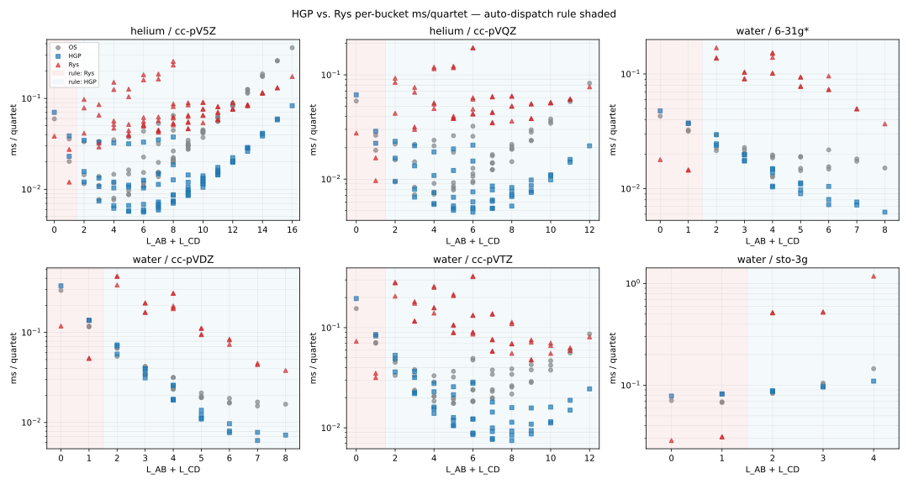

Planck Teaching Guide
A complete theory-to-code walkthrough of the Planck quantum chemistry program. Intended for students learning Hartree-Fock and post-HF methods, contributors reading the source, and researchers auditing the implementation.
1. What Planck Is
Planck is a compact electronic structure program built around Gaussian-basis self-consistent field theory. It implements:
- Restricted and unrestricted Hartree-Fock (RHF/UHF) with DIIS acceleration
- Kohn-Sham DFT (RKS/UKS) with LDA, GGA, hybrid, range-separated-hybrid, and double-hybrid exchange-correlation functionals via libxc
- Obara-Saika, Head-Gordon-Pople, and Rys-quadrature two-electron integral engines
- Cartesian and real spherical-harmonic Gaussian basis functions
- Conventional (stored ERI tensor) and direct (on-the-fly Fock build) SCF
- Point-group detection, symmetry-adapted orbitals, and MO irrep labeling
- RMP2 and UMP2 correlation energies with RMP2 natural orbital analysis
- RCCSD for canonical closed-shell RHF references
- Small-system determinant-space teaching prototypes for RCCSDT, UCCSD, and UCCSDT
- Generated arbitrary-order restricted tensor kernels, including RCCSDTQ when built
- Analytic RHF, UHF, RKS, UKS, RMP2, and UMP2 nuclear gradients
- Analytic RMP2 nuclear gradients include Z-vector / CPHF relaxation
- Geometry optimization in Cartesian and internal coordinates
- Semi-numerical Hessians and harmonic vibrational analysis
- CASSCF and RASSCF active-space multiconfigurational SCF
- Binary checkpoint save/restart with cross-basis Löwdin projection
The HF/post-HF calculation is coordinated by src/driver.cpp. The Kohn-Sham DFT calculation uses the separate entry point src/dft/main.cpp and the DFT::Driver pipeline in src/dft/driver.cpp. The central data object is HartreeFock::Calculator in src/base/types.h, which is shared by both pipelines and carries all options, molecular data, basis data, SCF state, and results.
2. Architecture Overview
Data Flow
Input file (.hfinp)
→ parse (src/io/io.cpp)
→ Molecule + options in Calculator
→ coordinate conversion + symmetry detection (src/symmetry/)
→ GBS basis reading + normalization (src/basis/)
→ shell-pair construction (src/integrals/shellpair.cpp)
→ one-electron integrals S, T, V (src/integrals/os.cpp)
→ optional SAO basis construction (src/symmetry/mo_symmetry.cpp)
→ SCF loop (src/scf/scf.cpp)
├── conventional: build ERI tensor once, reuse
└── direct: rebuild G(P) from scratch each iteration
→ post-HF: MP2, coupled cluster, or CASSCF (src/post_hf/)
→ gradient (src/gradient/)
→ geometry optimization (src/opt/)
→ frequency analysis (src/freq/)
→ checkpoint write (src/io/checkpoint.cpp)
Directory Summary
| Directory | Contents |
|---|---|
src/base | types.h (all structs/enums/Calculator), tables.h, basis.h |
src/io | input parsing, checkpoint I/O, logging |
src/basis | GBS file reading, primitive normalization, contraction |
src/integrals | shell pairs, Obara-Saika OS engine, Head-Gordon-Pople (HGP) engine, Rys quadrature engine |
src/scf | orthogonalizer, initial guess, RHF/UHF SCF loops |
src/symmetry | libmsym wrapper, SAO basis, MO labeling, integral sym ops |
src/post_hf | MP2 energy/gradient, RCCSD/UCCSD/RCCSDT/UCCSDT, CASSCF/RASSCF, AO→MO transforms, CPHF |
src/gradient | analytic RHF, UHF, RMP2, and UMP2 gradients |
src/opt | L-BFGS/BFGS optimizer, internal coordinates, constraints |
src/freq | finite-difference Hessian, vibrational analysis |
src/dft | Kohn-Sham DFT pipeline: molecular grid, AO evaluation, XC matrix, analytic KS gradients, KS driver |
src/dft/base | grid construction headers: radial (Treutler-Ahlrichs), angular (Lebedev), Becke partition, libxc wrapper |
3. Core Data Structures
Molecule
Holds atomic numbers, charge, multiplicity, and three coordinate representations that are easy to confuse:
coordinates— user-input geometry in Angstrom_coordinates— same in Bohr, set byprepare_coordinates()standard— symmetry-standard orientation in Angstrom (set bydetectSymmetry())_standard— symmetry-standard orientation in Bohr (used by all integrals)
Basis centers and the nuclear repulsion sum both use _standard. Moving a geometry (e.g. in a geometry optimization step) must update _standard.
Shell and ContractedView
Shell stores the angular momentum type (ShellType::S/P/D/F/G/H), center position in Bohr, atom index, primitive exponents, contracted coefficients (with the contracted norm \(N_c\) pre-folded in), and per-primitive normalizations.
ContractedView is a lightweight reference into one Cartesian component of one shell: it holds a pointer to its parent Shell, the Cartesian exponent triple \((l_x, l_y, l_z)\), its global AO index _index, and a component norm factor. The shell_pairs array is a flat list of all unique (ContractedView_i, ContractedView_j) pairs with \(i \le j\), one entry per unique AO pair.
ShellPair
Precomputed data for one pair of contracted AOs:
R = A - B,R2 = |R|^2- a
primitive_pairsvector, one entry per \((\alpha_i, \beta_j)\) combination - each
PrimitivePairstores combined exponent \(\zeta = \alpha + \beta\), the Gaussian product center \(\mathbf P\), displacements \(\mathbf{PA}\) and \(\mathbf{PB}\), prefactor, and contracted coefficient product
The Gaussian product theorem guarantees that the product of two Gaussians on different centers is a Gaussian on their weighted center, so precomputing these quantities once is a large speedup.
Calculator
The top-level object. Owns everything: options structs (OptionsSCF, OptionsBasis, OptionsGeometry, OptionsIntegral, OptionsOutput, OptionsDFT), Molecule, Basis, DataSCF, all integral matrices (_overlap, _hcore, _eri), energies, gradient, Hessian, SAO data, integral symmetry ops, and active-space results.
OptionsDFT holds the DFT-specific settings: _grid (grid quality enum), _exchange and _correlation (XC functional enums), optional raw libxc integer IDs (_exchange_id, _correlation_id), and boolean flags for SAO blocking, grid printing, and checkpoint saving.
FCIDUMP as an Interchange Format
One important idea in quantum chemistry software is that the expensive part is often not the many-body solver itself, but the preparation of a good molecular-orbital Hamiltonian:
- choose a basis,
- solve SCF,
- transform the one- and two-electron integrals from AO basis to MO basis,
- package the Hamiltonian in a form another program can read.
FCIDUMP is the standard text format for that last step. Historically it comes from the MOLPRO ecosystem, but in practice it has become the common interchange format for external determinant-based solvers such as FCI, selected CI, DMRG, and FCIQMC codes. The main conceptual point is:
An FCIDUMP file does not store a wavefunction. It stores the second-quantized electronic Hamiltonian in a chosen orthonormal spatial-orbital basis.
In that basis, the nonrelativistic electronic Hamiltonian is
\[ \hat H = E_{nuc} + \sum_{ij} h_{ij}\, a_i^\dagger a_j + \frac{1}{2}\sum_{ijkl} (ij|kl)\, a_i^\dagger a_k^\dagger a_l a_j \]
where:
- \(E_{nuc}\) is the scalar nuclear repulsion energy,
- \(h_{ij}\) are the one-electron matrix elements in the MO basis,
- \((ij|kl)\) are the two-electron repulsion integrals in chemists' notation.
That is exactly the information an exact diagonalizer or approximate CI-style solver needs. So an FCIDUMP lets one program do the SCF + integral work and a different program do the many-electron solve.
In Planck, the exporter lives in src/io/fcidump.{h,cpp}. After a converged SCF, it writes:
- an
&FCIheader withNORB,NELEC,MS2,ORBSYM, andISYM, - the unique MO-basis two-electron integrals,
- the unique MO-basis one-electron integrals,
- the nuclear repulsion energy as the final scalar record.
The body uses the standard FCIDUMP convention:
- two-electron entries are written as
value i j k l, - one-electron entries are marked by
k=l=0, - the scalar constant term is marked by
i=j=k=l=0, - orbital indices are 1-based.
Planck writes only the symmetry-unique subset of the two-electron tensor, using the usual 8-fold permutation symmetry of a real restricted Hamiltonian. A reader reconstructs the rest from those symmetry relations.
There are two practical restrictions worth remembering:
- Planck currently exports only converged RHF and ROHF references. This is because the standard FCIDUMP layout assumes one common set of spatial orbitals for both spins. UHF would need an unrestricted extension that many downstream programs do not read.
- The file is an MO-basis Hamiltonian, so its contents depend on the orbital basis chosen by the SCF reference. Different canonical orbital sets can lead to different matrix elements, even though an exact FCI energy from that Hamiltonian is invariant to rotations within the occupied or virtual spaces.
When symmetry is available, Planck also fills the ORBSYM field using the standard MOLPRO/PySCF integer numbering for supported Abelian point groups. When the point group is unsupported or non-Abelian, it safely falls back to all ones, which means "treat every orbital as totally symmetric."
To request a dump in an input file, set the fcidump keyword to an output path. The driver performs the export immediately after SCF convergence, even if no in-house post-HF method is requested. Conceptually, that makes FCIDUMP a bridge from Planck's SCF/integral machinery to the broader ecosystem of external correlated solvers.
4. Gaussian Basis Functions
Primitive Gaussians
A primitive Cartesian Gaussian centered at \(\mathbf A\) is:
\[ g(\mathbf r; \alpha, \mathbf A, l_x, l_y, l_z) = (x - A_x)^{l_x}(y - A_y)^{l_y}(z - A_z)^{l_z} e^{-\alpha |\mathbf r - \mathbf A|^2} \]
The total angular momentum is \(L = l_x + l_y + l_z\). For \(L=0\) there is one s-type function; for \(L=1\) there are three p-type functions (\(l_x l_y l_z = 100, 010, 001\)); for \(L=2\) there are six Cartesian d-type functions, and so on. The integral engine works entirely in this Cartesian basis. Calculations may also be run in a real spherical-harmonic basis (\(2L+1\) functions per shell), which is obtained from the Cartesian integrals by a fixed linear transform — see "Spherical Harmonic Basis Functions" below.
Contracted Gaussians
Real basis sets contract primitives into shells. A contracted basis function is:
\[ \chi_\mu(\mathbf r) = N_c \sum_{p=1}^{K} d_p \, N_p \, (x-A_x)^{l_x}(y-A_y)^{l_y}(z-A_z)^{l_z} e^{-\alpha_p |\mathbf r - \mathbf A|^2} \]
where \(d_p\) are contraction coefficients, \(N_p\) is the primitive normalization, and \(N_c\) is the contracted normalization that ensures \(\langle \chi_\mu | \chi_\mu \rangle = 1\) for the \(s\)-type component.
Practical note: many Gaussian-basis implementations fold \(N_c\) into the contraction coefficients during basis-set setup, so later integral code only needs the primitive normalization \(N_p\) and the already-normalized contracted coefficients.
Normalization of a Primitive
For a Cartesian Gaussian with angular momentum \((l_x, l_y, l_z)\) and exponent \(\alpha\):
\[ N_p = \left(\frac{2\alpha}{\pi}\right)^{3/4} \left(\frac{(4\alpha)^L}{(2l_x-1)!!(2l_y-1)!!(2l_z-1)!!}\right)^{1/2} \]
The contracted norm \(N_c\) is determined so that the \(s\)-component of the shell integrates to 1. Each ContractedView stores a _component_norm factor equal to \(1/\sqrt{(2l_x-1)!!(2l_y-1)!!(2l_z-1)!!}\) which handles the \((l_x,l_y,l_z)\)-dependent part of \(N_p\) at the AO level.
5. Hartree-Fock Theory
The Variational Principle
HF approximates the ground state \(|\Psi\rangle\) as a single Slater determinant built from \(N\) molecular spin-orbitals:
\[ |\Psi_{HF}\rangle = |\phi_1 \phi_2 \cdots \phi_N\rangle \]
The HF energy is:
\[ E_{HF} = \langle \Psi_{HF} | \hat H | \Psi_{HF} \rangle = \sum_i h_{ii} + \frac{1}{2}\sum_{ij}(J_{ij} - K_{ij}) \]
where \(h_{ii}\) are core one-electron energies, \(J_{ij}\) are Coulomb integrals, and \(K_{ij}\) are exchange integrals.
Roothaan Equations (RHF)
Expanding spatial MOs in the AO basis \(\chi_\mu\):
\[ \phi_i(\mathbf r) = \sum_\mu C_{\mu i}\, \chi_\mu(\mathbf r) \]
and applying the variational condition yields the Roothaan matrix eigenvalue problem:
\[ \mathbf F \mathbf C = \mathbf S \mathbf C \boldsymbol\varepsilon \]
where \(\mathbf S\) is the AO overlap matrix, \(\mathbf C\) contains MO coefficients (columns = MOs), and \(\boldsymbol\varepsilon\) contains orbital energies.
The Fock matrix is:
\[ F_{\mu\nu} = H_{\mu\nu}^{core} + G_{\mu\nu} \]
The core Hamiltonian is:
\[ H_{\mu\nu}^{core} = T_{\mu\nu} + V_{\mu\nu} \]
The two-electron contribution for closed-shell RHF is:
\[ G_{\mu\nu} = \sum_{\lambda\sigma} P_{\lambda\sigma} \left[(\mu\nu|\lambda\sigma) - \frac{1}{2}(\mu\lambda|\nu\sigma)\right] \]
The density matrix for \(n_{occ}\) doubly-occupied orbitals is:
\[ P_{\mu\nu} = 2\sum_{i=1}^{n_{occ}} C_{\mu i}\, C_{\nu i} \]
The total RHF energy is:
\[ E_{RHF} = \frac{1}{2}\sum_{\mu\nu} P_{\mu\nu}\left(H_{\mu\nu}^{core} + F_{\mu\nu}\right) + E_{nuc} \]
Pople-Nesbet Equations (UHF)
For open-shell systems, separate spin-orbital sets are maintained. Defining \(P^\alpha_{\mu\nu} = \sum_{i \in \alpha} C^\alpha_{\mu i} C^\alpha_{\nu i}\) and similarly for \(\beta\), the total density is \(P^T = P^\alpha + P^\beta\). The UHF Fock matrices are:
\[ F^\alpha_{\mu\nu} = H^{core}_{\mu\nu} + \sum_{\lambda\sigma}\left[P^T_{\lambda\sigma}(\mu\nu|\lambda\sigma) - P^\alpha_{\lambda\sigma}(\mu\lambda|\nu\sigma)\right] \]
\[ F^\beta_{\mu\nu} = H^{core}_{\mu\nu} + \sum_{\lambda\sigma}\left[P^T_{\lambda\sigma}(\mu\nu|\lambda\sigma) - P^\beta_{\lambda\sigma}(\mu\lambda|\nu\sigma)\right] \]
The UHF energy is:
\[ E_{UHF} = \frac{1}{2}\sum_{\mu\nu} \left[P^T_{\mu\nu} H^{core}_{\mu\nu} + P^\alpha_{\mu\nu} F^\alpha_{\mu\nu} + P^\beta_{\mu\nu} F^\beta_{\mu\nu}\right] + E_{nuc} \]
Restricted Open-Shell Hartree-Fock (ROHF)
ROHF describes open-shell systems (radicals, ground-state triplets, etc.) using a single set of spatial orbitals shared by both spin channels. This is in contrast to UHF, which allows the alpha and beta MO sets to differ.
Orbital Space Partition
Given \(N_e\) electrons and multiplicity \(2S+1\), the numbers of alpha and beta electrons are
\[ N_\alpha = \frac{N_e + (2S)}{2}, \qquad N_\beta = \frac{N_e - (2S)}{2} \]
from which three disjoint orbital subspaces are defined:
| Subspace | Occupation | Count |
|---|---|---|
| Closed (core) \(c\) | 2 (alpha + beta) | \(N_c = N_\beta\) |
| Open (singly occupied) \(o\) | 1 (alpha only) | \(N_o = N_\alpha - N_\beta\) |
| Virtual \(v\) | 0 | \(N_{mo} - N_\alpha\) |
The density matrices for the two spin channels share the same MO coefficients \(C\):
\[ P^\alpha_{\mu\nu} = \sum_{i=1}^{N_\alpha} C_{\mu i} C_{\nu i}, \qquad P^\beta_{\mu\nu} = \sum_{i=1}^{N_\beta} C_{\mu i} C_{\nu i} \]
Alpha and Beta Fock Matrices
Individual spin-Fock matrices are built exactly as in UHF:
\[ F^\alpha_{\mu\nu} = H_{\mu\nu} + G^\alpha_{\mu\nu}[P^\alpha, P^\beta], \qquad F^\beta_{\mu\nu} = H_{\mu\nu} + G^\beta_{\mu\nu}[P^\alpha, P^\beta] \]
The electronic energy uses the same two-component formula as UHF:
\[ E_{elec} = \tfrac{1}{2}\left[P^\alpha_{\mu\nu}(H_{\mu\nu} + F^\alpha_{\mu\nu}) + P^\beta_{\mu\nu}(H_{\mu\nu} + F^\beta_{\mu\nu})\right] \]
Effective (Canonical) Fock Matrix
A key challenge in ROHF is that the closed, open, and virtual blocks couple differently to \(F^\alpha\) and \(F^\beta\). The coupling conditions for a stationary ROHF solution are:
\[ \langle c | F^\alpha + F^\beta | o \rangle = 0, \quad \langle c | F^\beta | v \rangle = 0, \quad \langle o | F^\alpha | v \rangle = 0 \]
These three conditions cannot in general be satisfied simultaneously by either \(F^\alpha\) or \(F^\beta\) alone. A standard practical construction is the Guest–Saunders effective Fock matrix, which builds a single pseudo-Fock matrix whose diagonalization satisfies the three coupling conditions.
Defining the projectors onto the three subspaces via the density matrices and overlap:
\[ \mathbf P_c = P^\beta S, \qquad \mathbf P_o = (P^\alpha - P^\beta) S, \qquad \mathbf P_v = I - P^\alpha S \]
and the averaged Fock \(F_c = \tfrac{1}{2}(F^\alpha + F^\beta)\), the effective Fock is:
\[ F^{eff} = \mathbf P_c^T F_c \mathbf P_c + \mathbf P_o^T F_c \mathbf P_o + \mathbf P_v^T F_c \mathbf P_v + \mathbf P_o^T F^\beta \mathbf P_c + \mathbf P_o^T F^\alpha \mathbf P_v + \mathbf P_v^T F_c \mathbf P_c + \text{transpose} \]
The final effective matrix is symmetrized to preserve Hermiticity. Diagonalizing \(F^{eff}\) yields a common MO set that simultaneously satisfies all three inter-block coupling conditions.
DIIS Error Vector
DIIS is applied to \(F^{eff}\) using the total density \(P^{tot} = P^\alpha + P^\beta\):
\[ \mathbf e = X^T(F^{eff} P^{tot} S - S P^{tot} F^{eff}) X \]
This is the same Pulay commutator as in RHF but with \(F^{eff}\) replacing the closed-shell Fock and the total (not twice the alpha) density.
Open-Shell Orbital Identification
After diagonalizing \(F^{eff}\), the resulting MO energies are those of the pseudo-Fock and may not correctly order the open-shell orbitals relative to closed-shell and virtual ones. A practical reordering step is therefore applied:
- Keep the first \(N_c\) eigenvectors (lowest \(F^{eff}\) eigenvalues) as closed orbitals.
- From the remaining candidates, select the \(N_o\) with the lowest alpha Fock diagonal energies \(\langle p | F^\alpha | p \rangle\) — these are the singly-occupied MOs.
- Sort the remaining virtuals by \(F^{eff}\) eigenvalue.
This ensures that the "open-shell" label follows the physics (alpha spin binding energy) rather than the artificial \(F^{eff}\) pseudo-spectrum.
Convergence and Output
Convergence is tested on \(|\Delta E|\) and \(\|\Delta P\|\) identically to UHF. At convergence the alpha and beta channels share the same spatial-orbital coefficient matrix \(C\); the effective-Fock eigenvalues provide one canonical orbital-energy set, while spin-specific diagonal Fock expectations can still be used to characterize the singly occupied space.
The spin-contamination diagnostic \(\langle S^2 \rangle\) is printed after convergence. For a pure spin state ROHF always gives exactly \(\langle S^2\rangle = S(S+1)\) — unlike UHF, which can mix higher spin states.
Practical limitation
Many correlated and response methods require dedicated ROHF working equations rather than a simple RHF or UHF reuse, so ROHF often remains a distinct reference class in electronic-structure programs even when the SCF itself is well behaved.
6. SCF Algorithm
Symmetric Orthogonalization
The AO basis is non-orthogonal (\(\mathbf S \ne \mathbf I\)). To diagonalize the Fock matrix, it is transformed to an orthonormal basis using:
\[ \mathbf X = \mathbf S^{-1/2} \]
computed via the eigendecomposition \(\mathbf S = \mathbf U \boldsymbol\sigma \mathbf U^T\):
\[ \mathbf X = \mathbf U\,\mathrm{diag}(\sigma_i^{-1/2})\,\mathbf U^T \]
The transformed Fock matrix is then:
\[ \mathbf F' = \mathbf X^T \mathbf F \mathbf X \]
which is a standard symmetric eigenvalue problem \(\mathbf F' \mathbf C' = \mathbf C' \boldsymbol\varepsilon\). The AO-basis MO coefficients are recovered by:
\[ \mathbf C = \mathbf X \mathbf C' \]
Planck Implementation Note
Planck constructs this orthogonalizer in build_orthogonalizer (src/scf/scf.cpp).
Initial Density Guess
The default initial guess (SCFGuess::HCore) diagonalizes the core Hamiltonian \(\mathbf H^{core} = \mathbf T + \mathbf V\) to produce an initial set of MO coefficients and a starting density matrix. This corresponds to completely neglecting electron-electron repulsion in the initial guess.
SAD Guess
The superposition of atomic densities (SAD) guess starts from a simple physical idea: instead of guessing the molecular density from the one-electron core Hamiltonian, first solve each atom in isolation, then add those atomic densities together in the molecular AO basis. This usually produces a more chemically reasonable starting point for stretched bonds, heteronuclear systems, and open-shell cases.
For RHF, the reconstruction step is
\[ \bar P = X^T P_{\mathrm{raw}} X, \qquad X = S^{-1/2} \]
followed by diagonalization of \(\bar P\), keeping the top \(n_{\mathrm{occ}} = N_e/2\) natural orbitals, and rebuilding
\[ P = 2 C_{\mathrm{occ}} C_{\mathrm{occ}}^T. \]
For open-shell SAD, the same projection is performed separately for the alpha and beta raw densities, occupying the top \(n_\alpha\) and \(n_\beta\) natural orbitals with unit occupancy in each spin channel.
This projection step matters because the literal block-summed atomic density is generally not idempotent and does not exactly correspond to a single Slater determinant in the molecular AO space. The projection turns it into the nearest proper SCF starting density while preserving the overall electron count to within the overlap-thresholding tolerance.
Planck's SAD Construction
Planck also supports a SAD initial guess through SCFGuess::SAD. The implementation lives in src/scf/sad.cpp with the public entry points declared in src/scf/sad.h:
compute_sad_guess_rhf(calc)for closed-shell RHFcompute_sad_guess_open_shell(calc, n_alpha, n_beta)for UHF and ROHF
Planck builds that guess in four stages:
- Read one atomic basis per unique element —
read_gbs_basis_atomicreuses the same GBS file and Cartesian normalization conventions as the full molecular calculation. - Run atomic UHF calculations — for each unique element,
run_atomic_uhfbuilds an isolated atom at the origin, computes its one-electron integrals, and runs a silent atomic UHF with an HCore guess. - Apply shell-wise spherical averaging — the raw atomic density is not rotationally invariant because Cartesian \(p,d,f,\dots\) components can carry directional bias.
spherical_average_atomic_densityreplaces each shell block by a spherically averaged form while preserving the shell population in the atomic AO metric. - Assemble and project back to a valid molecular density — the averaged atomic blocks are inserted atom-by-atom into a block-diagonal molecular density. That raw SAD density is then orthogonalized with \(S^{-1/2}\), diagonalized, and reconstructed from the leading natural orbitals so the final guess has the correct RHF or spin-resolved UHF/ROHF occupations.
In src/scf/scf.cpp, the SAD path is selected before the usual HCore/SAO guess construction:
run_rhfcallscompute_sad_guess_rhfrun_uhfcallscompute_sad_guess_open_shellrun_rohfalso callscompute_sad_guess_open_shell
So SAD is available for all three SCF flavors currently implemented by Planck.
When the Guess Matters
Different initial guesses can converge to different SCF stationary points. This is not a bug. SCF does not minimize the energy directly; it solves the fixed-point equation \([\mathbf F, \mathbf P] = 0\), and any density whose Fock eigenvectors reproduce that density is a valid solution. The global minimum is one such fixed point, but for a symmetric molecule there can be others — broken-symmetry stationary points where the density localizes asymmetrically across equivalent atoms. DIIS converges to whichever fixed point lies in the same basin as the initial guess.
The two subsections below switch from this general SCF lesson to Planck- specific material: first a concrete validation case, then a current SAD caveat.
Case Study: Planar Ethylene Without Symmetry
A clean illustration is RHF/3-21G on planar ethylene with use_symm false:
| Guess | Iterations | Total energy (Eh) | Dipole (D) | Core MOs (Eh) |
|---|---|---|---|---|
| HCore | 27 | \(-77.38375\) | \(-2.78\) | \(-11.306, -11.043\) |
| SAD | 89 | \(-77.41957\) | \( 0.00\) | \(-11.174, -11.174\) |
The HCore solution is 0.036 Eh (≈22.5 kcal/mol) higher than the SAD solution. Two diagnostics tell us what went wrong:
- The two carbon \(1s\) core orbitals are split by 0.26 Eh under HCore but degenerate to within \(2\times10^{-6}\) Eh under SAD. Ethylene's two carbons are equivalent, so the core orbitals must form a near-degenerate symmetric/antisymmetric pair. The HCore solution has localized one core onto each carbon individually rather than forming the symmetry-adapted combination.
- A 2.78 D dipole along the C–C axis. Ethylene is centrosymmetric — the exact dipole is zero. A non-zero dipole along the bond axis means net negative charge has piled up on one carbon (\(\mathrm C^{\delta-}\)) and positive charge on the other (\(\mathrm C^{\delta+}\)). The SCF has found a charge-transfer broken-symmetry solution.
Why does HCore find this and SAD does not?
\(\mathbf H^{core} = \mathbf T + \mathbf V_{ne}\) is totally symmetric — it commutes with every symmetry operation of the nuclear framework — so its eigenvalues respect the molecular symmetry. But for degenerate eigenvalues, the eigenvectors returned by LAPACK are an arbitrary orthonormal basis of the degenerate subspace. The two carbon \(1s\) combinations are exactly degenerate in \(\mathbf H^{core}\) (the carbons are equivalent in the one-electron Hamiltonian), so LAPACK typically returns the localized atom-centered pair \(\{1s_L,\,1s_R\}\) rather than the symmetry-adapted pair \(\{(1s_L+1s_R)/\sqrt2,\,(1s_L-1s_R)/\sqrt2\}\). The initial density is the same either way (it is the sum of the two projectors), but the first Fock build uses the occupied orbitals to construct \(\mathbf K\), and the exchange contribution is sensitive to whether the occupied space is represented locally or canonically. From there, DIIS amplifies whatever small CT-direction component the early iterations contain, and a self- reinforcing \(\delta\rho \to \delta F \to \delta\rho\) loop along the charge-transfer mode locks the SCF into the broken-symmetry well.
SAD avoids this two ways. First, the SAD density is built from spherically averaged atomic blocks — equivalent atoms get identical density blocks by construction, so the initial density already lies in the totally-symmetric subspace. Second, SAD never goes through a degenerate \(\mathbf H^{core}\) diagonalization, so there is no LAPACK-basis-choice step that breaks the two-carbon symmetry arbitrarily.
Two practical fixes for HCore, both confirmed on this case:
- Turn symmetry on. With
use_symm truethe Fock matrix is built and diagonalized in irrep blocks. The CT rotation that mixes occupied \(a_g\) core with virtual \(b_{1u}\) lives across blocks and is therefore forbidden. The same HCore input that gave \(-77.3838\) without symmetry gives \(-77.41957\) — agreement with SAD to nine decimals — once symmetry is enabled. - Use SAD. Cheaper and more general: it works for asymmetric molecules too, and it does not require detecting a point group.
The deeper lesson is that broken-symmetry RHF stationary points are real features of the Hartree-Fock energy surface, not numerical artifacts. They become genuine ground states for stretched bonds (where RHF fails and UHF takes over). The instability we hit on equilibrium ethylene is the same mechanism that drives the well-known RHF \(\to\) UHF transition at bond dissociation. Treat HCore as a fine guess for asymmetric molecules and small clusters, but reach for SAD or use_symm true whenever the molecule has equivalent atoms.
Current Planck Caveat: Isolated-Atom SAD
There is one known exception that runs the other way. For a small isolated closed-shell atom the SAD guess can itself false-converge to a wrong SCF stationary point: a lone helium atom in cc-pVDZ settles at \(-2.85515\) Eh from SAD but at the correct \(-2.85516\) Eh (matching PySCF to \(10^{-10}\)) from HCore, each "converging" in five iterations at a different HOMO energy. The SAD atomic-density seed apparently lands in the wrong basin for a single small atom. This matters directly for the isolated-monomer references in a counterpoise calculation (§23), where a core-Hamiltonian guess is the safer choice for those small fragments. The lesson is not that one guess is universally safer — it is that the converged SCF solution should be sanity-checked (symmetry of degenerate orbitals, dipole of a centrosymmetric system, agreement across guesses) rather than trusted because the iteration count looked reasonable.
Wavefunction Stability Analysis
The case study above raises a concrete question: how can the SCF tell whether the converged solution is a global minimum, a broken-symmetry local minimum, or an unstable stationary point? The answer is stability analysis — diagonalizing the orbital Hessian (the second variation of the HF energy with respect to occupied-virtual orbital rotations) and checking its lowest eigenvalues. Negative eigenvalues mean an orbital rotation exists that lowers the energy.
Planck Interface
Planck implements this in src/scf/stability.cpp, gated by the input keywords
%begin_scf
stability_check .true. ; build orbital Hessian, report lowest eigs
stability_follow .true. ; if unstable, rotate along the unstable mode
; and re-run SCF
%end_scf
The Orbital Hessian
Around a converged closed-shell RHF solution, parametrize a small rotation of the occupied orbitals into virtuals as \(\kappa = \kappa_{ai} (E_{ai} - E_{ia})\) where \(E_{pq}\) is the singlet excitation operator. Expanding the energy to second order in \(\kappa\):
\[ E(\kappa) - E(0) = \kappa^T \mathbf g + \tfrac12 \kappa^T \mathbf H \kappa + \mathcal O(\kappa^3). \]
At a stationary point \(\mathbf g = 0\), and the question of stability reduces to the lowest eigenvalue of the orbital Hessian \(\mathbf H\). The key fact is that \(\mathbf H\) splits into independent singlet and triplet blocks (because the closed-shell reference is a singlet, the linear response separates by spin):
| Block | Diagonal \(\mathbf A\) | Coupling \(\mathbf B\) |
|---|---|---|
| Singlet | \( (\varepsilon_a - \varepsilon_i)\delta + 2(ai|bj) - (ab|ij) \) | \( 2(ai|bj) - (aj|bi) \) |
| Triplet | \( (\varepsilon_a - \varepsilon_i)\delta - (ab|ij) \) | \( -(aj|bi) \) |
The full block-structured Hessian is \(\begin{pmatrix} \mathbf A & \mathbf B \\ \mathbf B & \mathbf A \end{pmatrix}\) in the \((X, Y)\) excitation/de-excitation basis. Its eigenvalues come in \(\pm\)-pairs whose signs are determined by the lowest eigenvalues of \(\mathbf A \pm \mathbf B\). So three matrix builds answer three physically distinct questions.
The Three Standard RHF Stability Checks
| Check | Matrix | Negative ⇒ |
|---|---|---|
| Internal real | \(\mathbf A^S + \mathbf B^S\) | Another real RHF solution exists at lower energy |
| Internal complex | \(\mathbf A^S - \mathbf B^S\) | A complex-orbital RHF would be lower |
| External triplet | \(\mathbf A^T - \mathbf B^T\) | A UHF solution would be lower (RHF→UHF) |
The internal-complex matrix \(\mathbf A^S - \mathbf B^S\) and the external- triplet matrix \(\mathbf A^T - \mathbf B^T\) reduce to the same algebraic form
\[ \bigl[\mathbf A - \mathbf B\bigr]_{ai,bj} = (\varepsilon_a - \varepsilon_i)\delta_{ab}\delta_{ij} - (ab|ij) + (aj|bi), \]
once the \((ai|bj)\) Coulomb pieces cancel. The two checks are distinguished only by which physical perturbation each tests. In practice, when ethylene/3-21G HCore-no-symm reaches the broken-symmetry RHF, both diagnostics light up simultaneously — they share a matrix and an unstable mode.
UHF Stability
For UHF the orbital Hessian has \(\alpha\alpha\), \(\alpha\beta\), \(\beta\alpha\), and \(\beta\beta\) blocks. Two physically distinct checks are reported:
- Internal UHF→UHF (spin-conserving) — full \(\alpha\alpha \oplus \beta\beta\) Hessian with the \(\alpha\beta\) Coulomb cross-coupling included. Negative ⇒ another UHF stationary point is lower.
- External UHF→GHF (spin-flip) — couples \(\alpha\)-occupied to \(\beta\)-virtual rotations. Planck reports a diagonal-only approximation here (just \(\varepsilon^\beta_a - \varepsilon^\alpha_i\) gaps) since full GHF stability requires extra cross-spin two-electron blocks and Planck does not yet support a GHF reference to follow into.
Following an Unstable Mode
When a check fires, one can rotate the orbitals along the lowest unstable eigenvector and re-run SCF. Planck exposes this through stability_follow .true. and implements the rotation with the eigenvector \(R_{ai}\) (reshaped \(n_v \times
n_o\)) by the standard SVD trick: writing \(R = U_R \Sigma V_R^T\),
\[ \exp\!\begin{pmatrix} 0 & -R^T \\ R & 0 \end{pmatrix} = \begin{pmatrix} V_R \cos\Sigma\, V_R^T & -V_R \sin\Sigma\, U_R^T \\ U_R \sin\Sigma\, V_R^T & U_R \cos\Sigma\, U_R^T \end{pmatrix}. \]
This is exactly unitary at any step size, so the orbitals stay orthonormal.
Two follow modes are implemented in Planck:
- RHF → UHF (triplet external) — the most common case. Planck promotes the calculator to UHF using a two-step broken-symmetry guess:
1. HOMO–LUMO mix on beta only. Rotate \(\beta_{\text{HOMO}}\) and \(\beta_{\text{LUMO}}\) by \(\pi/8\) (22.5°). This makes the alpha and beta occupied spaces explicitly different along the frontier, regardless of what the unstable eigenvector mostly points at. Without this step, unstable modes that pick up mostly core-orbital character leave the frontier closed-shell, and UHF re-symmetrizes back to the starting RHF. 2. Apply the eigenvector rotation as a sharpening step. Alpha gets \(+\,s\,R\), beta gets \(-\,s\,R\). This guides the SCF toward the specific lower stationary point identified by the analyzer.
The step \(s\) is adaptive: \(|\lambda| < 10^{-2}\) uses the user-supplied default of 0.05 rad; \(|\lambda| \ge 10^{-2}\) bumps to \(\pi/4 = 0.785 rad\), the standard "break-symmetry-hard" amplitude.
- Internal RHF→RHF or UHF→UHF — Planck applies the eigenvector rotation within the same SCF type and re-enters the same
run_*entry point. The seeded density is read by SCF via theReadDensityguess path, so no fresh HCore/SAD step happens.
What Following Actually Finds
Following an instability is genuinely re-running SCF from a different starting point — it inherits all the convergence behavior of the underlying solver. In particular, if the rotated reference is close to another instability (e.g. ethylene RHF at small basis is itself unstable to UHF in addition to the broken-symmetry RHF), the follow may land on yet another stationary point lower than the original. This is correct behavior and matches every published stability code: the follow finds some lower stationary point, not necessarily the physical ground state. For ethylene/3-21G specifically, the post-follow UHF lands at \(E = -77.5245\) with \(\langle S^2\rangle \approx 1.04\), which is a deeply spin-broken biradical solution — real, but unphysical for closed-shell ethylene at equilibrium. Larger basis sets and more correlation eliminate this spurious low UHF.
Planck Validation Note: Twisted Ethylene, Guess Sensitivity, and the STO-3G Pathology
A clean illustration of how guess choice, basis flexibility, and the follow machinery interact comes from running 90°-twisted ethylene (tests/benchmarks/scf/ethylene_rhf_stability_unstable.hfinp) across four basis sets with two guesses each (HCore vs SAD), once with stability_follow .false. and once with .true. and max_cycles 300.
Pre-follow RHF (just stability_check):
| Basis | Guess | Iters | E(RHF) / Eh | RHF→RHF (real,int) | Notes |
|---|---|---|---|---|---|
| STO-3G | HCore | 75 | −76.85549982 | +0.108 stable | Stable RHF basin |
| STO-3G | SAD | 74 | −76.85549982 | +0.108 stable | Same basin |
| 3-21G | HCore | 39 | −77.38375253 | −0.071 UNSTABLE | Wrong basin |
| 3-21G | SAD | 56 | −77.41957055 | +0.068 stable | Correct basin (lower by 36 mEh) |
| 6-31G | HCore | 93 | −77.79102440 | −0.069 UNSTABLE | Same basin both guesses |
| 6-31G | SAD | 54 | −77.79102440 | −0.069 UNSTABLE | Same basin both guesses |
| cc-pVDZ | HCore | 46 | −77.83343086 | −0.061 UNSTABLE | Same basin both guesses |
| cc-pVDZ | SAD | 28 | −77.83343086 | −0.061 UNSTABLE | Same basin both guesses |
Three observations are useful for teaching:
- STO-3G is too small to expose the real-internal RHF instability. The minimal basis only sees the external triplet instability, λ ≈ −2.6 × 10⁻³. No second RHF basin is visible because the basis cannot represent the broken-symmetry RHF.
- 3-21G is the only basis where guess choice splits which RHF basin is reached. Pre-follow, HCore lands on a real-internally unstable RHF stationary point (a saddle on the RHF manifold) and SAD lands on the true RHF minimum 36 mEh lower. 6-31G and cc-pVDZ both have enough flexibility that DIIS funnels both guesses into the same RHF basin (they converge to identical Fock matrices to all printed digits).
- For 6-31G and cc-pVDZ the converged RHF is itself real-internally unstable. The guess didn't matter because there's only one RHF basin reachable from either guess — but that basin is not even an RHF minimum.
After follow with stability_follow .true., max_cycles 300, use_diis .true.:
| Basis | Guess | UHF iters | E(UHF) / Eh | Converged? |
|---|---|---|---|---|
| STO-3G | HCore | 300+ | −76.79737861 | ❌ DIIS stalls |
| STO-3G | SAD | 96 | −77.00413153 | ✅ |
| 3-21G | HCore | 220 | −77.52454006 | ✅ |
| 3-21G | SAD | 172 | −77.52454006 | ✅ |
| 6-31G | HCore | 126 | −77.93022197 | ✅ |
| 6-31G | SAD | 145 | −77.93022197 | ✅ |
| cc-pVDZ | HCore | 194 | −77.96312737 | ✅ |
| cc-pVDZ | SAD | 101 | −77.96312737 | ✅ |
Three of the four basis sets converge HCore = SAD to all 10 printed digits after follow — the broken-symmetry UHF is the unique reference, and the follow machinery dissolves the guess dependence. The 3-21G HCore/SAD pre- follow gap of 36 mEh shrinks to < 1 nEh (10⁻¹⁰ Eh) post-follow.
The STO-3G HCore pathology — and what actually causes it. STO-3G HCore is the one combination where the follow does not converge with default DIIS settings. The failure mode is not energy-lowering failure: the energy is dead flat at −76.79737861 from iteration ~100 onward, with ΔE = 0 to 10 digits, while the density oscillates persistently with Max(D) in the 10⁻⁹ – 10⁻⁶ range — never satisfying the density threshold _tol_density = 1e-10. From the iteration trail past iteration 100:
212 -76.7973786094 ΔE=0e+00 RMS(D)=2.97e-08 Max(D)=1.37e-07 DIIS=9.55e-08
…
300 -76.7973786095 ΔE=0e+00 RMS(D)=2.85e-09 Max(D)=2.33e-08 DIIS=1.53e-09
The decisive diagnostic is what happens when DIIS is turned off (use_diis .false.) with everything else identical:
| Run | use_diis | UHF iters | E(UHF) / Eh | Converged? |
|---|---|---|---|---|
| STO-3G HCore (DIIS on) | .true. | 300+ | −76.79737861 | ❌ |
| STO-3G HCore (DIIS off) | .false. | 45 | −77.00413153 | ✅ |
| STO-3G SAD (DIIS on) | .true. | 96 | −77.00413153 | ✅ |
Without DIIS, HCore converges in 45 iterations — fewer than SAD with DIIS — to exactly the same UHF energy as SAD (−77.0041315259 Eh). This is the cleanest possible attribution: the proximate cause of the failure is DIIS itself, not the guess, not the basis size, not the follow step. Plain Roothaan-Hall iteration from the same HCore-derived, follow-rotated starting orbitals reaches the correct broken-symmetry UHF without difficulty.
What is going on physically:
- The post-follow starting orbitals from HCore sit near a region of the UHF energy surface where two broken-symmetry density solutions are almost degenerate (their energy difference is below 10⁻¹⁰ Eh). The plain SCF map between these two densities is contractive — fixed-point iteration converges to one of them in tens of cycles.
- DIIS extrapolates the next Fock matrix from a linear combination of recent iterates that minimizes the predicted error
e = FPS − SPF. When two physically distinct densities both produce smalleand the energy gradient is essentially zero in the subspace that distinguishes them, DIIS has no useful signal to choose between them. The extrapolated Fock alternates between Fock matrices that would each individually contract toward a different solution. The density iterates limit-cycle. - The contraction toward either single solution that plain Roothaan-Hall would provide is destroyed by the DIIS averaging: each cycle the averaging pulls the density back across the watershed.
Why this hits only STO-3G HCore and not the other seven combinations:
- STO-3G is the only basis where the post-follow starting density sits this close to the watershed. With one 2p shell per carbon and no polarization, the broken-symmetry singlet has very limited variational freedom — multiple near-degenerate UHF densities exist within nano- hartree of each other. Larger bases break this near-degeneracy and the DIIS error vector picks a unique direction.
- HCore is the only guess in STO-3G that lands in a real-internally stable RHF basin (λ_min(real,int) = +0.108, the largest of any basis / guess combination). The follow's small eigenvector rotation (eig_step = 0.05 rad, since |λ_triplet| = 2.6 × 10⁻³ < 10⁻²) plus the π/8 β HOMO–LUMO mix gives a starting point that is exactly between the two broken-symmetry wells rather than inside one of them. SAD starts from projected atomic densities that already break the alpha/ beta symmetry on the C 2p shell, placing the post-follow starting point inside one well from the start.
So the four ingredients are: (a) STO-3G's tiny variational space hosts a near-degenerate pair of UHF stationary points, (b) HCore + small follow step lands the starting density on the watershed, (c) plain SCF iteration from there would contract into one of them, but (d) DIIS averages across the watershed and locks the iteration into a limit cycle. Removing any one of (a), (b), or (d) restores convergence — the other runs in the table prove this experimentally:
- Remove (a): bigger basis (3-21G, 6-31G, cc-pVDZ HCore) → converges with DIIS.
- Remove (b): better guess (STO-3G SAD) → converges with DIIS.
- Remove (d): STO-3G HCore with
use_diis .false.→ converges in 45 cycles.
Pedagogical takeaways. Three lessons generalize beyond this specific case:
- DIIS is not a free win. It dramatically accelerates convergence when the SCF map is approximately linear and there is a single attractor, but it can prevent convergence when the iteration sits near the watershed of two near-degenerate solutions and the gradient signal in that subspace is below the DIIS error scale. The classic remedies are (i) initial damping or level-shifting until the density is clearly in one basin, (ii) DIIS reset when the error vector ceases to shrink, or (iii) plain Roothaan-Hall fallback in the late iterations.
- Reading the iteration trail matters. ΔE = 0 to all digits with
Max(D)10⁻⁷–10⁻⁸ never satisfying the density threshold is the signature of DIIS limit-cycling between near-degenerate stationary points, not of slow convergence — bumpingmax_cycleswill not help. The right diagnostic experiment is a one-line change to `use_diis .false.` and rerun. - Guess-dependent pre-follow results like the 3-21G 36 mEh splitting are not numerical noise. They are real evidence of multiple SCF stationary points and should always be cross-checked by enabling stability analysis. After following, hcore = sad to 10 digits is the signal the underlying reference is unique.
Cost
The orbital Hessian is dense in the occupied-virtual space: \((n_v \cdot n_o)^2\) doubles per channel. For ethylene/3-21G that is \((18 \cdot 8)^2 \approx 165\) KB per matrix; for a 100-basis closed-shell system it is \(\approx 35\) MB. The cost of the AO\(\to\)MO transform is already amortized with the CPHF code path. For systems above a few hundred basis functions, replace the dense diagonalization with a Davidson iteration on the matrix-vector product — Planck does not yet do this.
SCF Iteration Loop
Each RHF iteration in run_rhf:
- Compute \(G_{\mu\nu}[P]\) from the current density (either from the stored ERI tensor via
_compute_fock_rhf, or on-the-fly via_compute_2e_fock) - Form \(\mathbf F = \mathbf H^{core} + \mathbf G\)
- Compute the current energy
- Form the DIIS error vector and call
diis.push(F, e); if DIIS is ready, replace \(\mathbf F\) with the extrapolated Fock - Transform to orthonormal basis: \(\mathbf F' = \mathbf X^T \mathbf F \mathbf X\)
- Diagonalize \(\mathbf F' \mathbf C' = \mathbf C' \boldsymbol\varepsilon\)
- Back-transform: \(\mathbf C = \mathbf X \mathbf C'\)
- Build new density \(P_{\mu\nu} = 2\sum_i^{occ} C_{\mu i} C_{\nu i}\)
- Test convergence: \(|\Delta E| < \epsilon_E\) and \(\|\Delta P\|_{max} < \epsilon_P\)
Convergence is declared when both criteria are simultaneously satisfied.
Level Shifting
If _level_shift > 0, the virtual orbital energies are shifted upward by \(\Delta\) before each diagonalization:
\[ F'_{ab} \leftarrow F'_{ab} + \Delta \quad \text{(virtual-virtual block in the MO basis)} \]
This increases the HOMO-LUMO gap and prevents the SCF from alternating between states with different orbital occupations, at the cost of slower convergence near the solution.
7. DIIS Convergence Acceleration
Pulay's Direct Inversion in the Iterative Subspace (DIIS) accelerates SCF convergence by extrapolating a Fock matrix from a stored subspace of recent Fock matrices that minimizes the residual.
Error Metric
The Pulay error vector at iteration \(k\) is the FPS-SPF commutator in the orthonormal basis:
\[ \mathbf e_k = \mathbf X^T(\mathbf F_k \mathbf P_k \mathbf S - \mathbf S \mathbf P_k \mathbf F_k)\mathbf X \]
When the SCF is converged, \(\mathbf F\) and \(\mathbf P\) commute and \(\mathbf e = \mathbf 0\). The norm \(\|\mathbf e\|_{RMS}\) is the primary convergence diagnostic.
DIIS Linear System
Given \(m\) stored pairs \(\{(\mathbf F_k, \mathbf e_k)\}\), find coefficients \(\{c_k\}\) such that:
\[ \mathbf F^{extrap} = \sum_{k=1}^m c_k \mathbf F_k \quad \text{subject to} \quad \sum_k c_k = 1 \]
minimizes \(\|\sum_k c_k \mathbf e_k\|^2\). Using a Lagrange multiplier \(\lambda\) for the constraint, this becomes the augmented linear system:
\[ \begin{pmatrix} \mathbf B & -\mathbf 1 \\ -\mathbf 1^T & 0 \end{pmatrix} \begin{pmatrix} \mathbf c \\ \lambda \end{pmatrix} = \begin{pmatrix} \mathbf 0 \\ -1 \end{pmatrix} \]
where \(B_{ij} = \mathrm{Tr}(\mathbf e_i^T \mathbf e_j)\).
In practice this constrained linear system is solved with a numerically stable factorization of the augmented matrix. The DIIS subspace is typically capped at a small fixed dimension, with the oldest vectors discarded when the subspace fills.
8. Symmetry
This chapter mixes two scopes. The basic point-group and projection-operator ideas are general quantum-chemistry theory. The later sections on monomial D2h screening, full-group petite lists, metric-correct spherical operation matrices, and the exact density covariance requirement describe the particular symmetry machinery used in Planck's integral and direct-SCF implementations.
Point Group Detection
Symmetry detection identifies the molecular point group from the nuclear geometry and reorients the molecule into a standard frame — the principal rotation axis along \(z\), secondary elements aligned by convention. All subsequent symmetry constructions (orbital adaptation, irrep labels, integral reduction) use this standard-orientation geometry so that the symmetry operations have their canonical matrix forms.
Symmetry-Adapted Orbitals (SAO Basis)
For a non-trivial point group the Fock matrix becomes block-diagonal when the AO basis is replaced by symmetry-adapted orbitals (SAOs) — fixed linear combinations of AOs that each transform as a single irreducible representation (irrep). Because the Fock operator is totally symmetric, it cannot couple SAOs of different irreps, so the matrix breaks into one block per irrep.
The SAOs are constructed with the irrep projection operator \[ \hat P^{(\Gamma)} = \frac{d_\Gamma}{h} \sum_{R} \chi^{(\Gamma)}(R)^* \,\hat R , \] where \(h\) is the group order, \(d_\Gamma\) the dimension of irrep \(\Gamma\), and \(\chi^{(\Gamma)}(R)\) its character for operation \(R\). Applying \(\hat P^{(\Gamma)}\) to each AO yields trial vectors lying in the irrep-\(\Gamma\) subspace; orthonormalizing them (against the overlap metric) gives the SAOs of that irrep. Standard practice — adopted here — works in the largest Abelian subgroup with only one-dimensional irreps (at most D\(_{2h}\)), so every SAO carries a unique, unambiguous irrep label.
Collecting the SAOs as columns of a unitary transformation \(\mathbf U\) and transforming the Fock and overlap matrices into this basis block-diagonalizes both. Diagonalizing each block independently reduces the \(O(n_b^3)\) cost of a single \(n_b\)-dimensional diagonalization to \(\sum_g O(n_g^3)\), where \(n_g\) is the number of SAOs in irrep \(g\).
MO Irrep Assignment
After convergence each molecular orbital is labeled by the irrep it transforms as. For each operation \(R\), how the AO basis maps onto itself defines an AO representation matrix \(\mathbf D_R\). In the one-dimensional Abelian groups used, each Cartesian Gaussian simply picks up a sign \(\pm 1\) under every operation, so \(\mathbf D_R\) is diagonal. The character an MO presents under \(R\) is then \[ \chi_i(R) = \sum_\mu |C_{\mu i}|^2 \,(\mathbf D_R)_{\mu\mu}, \] and matching the pattern \(\{\chi_i(R)\}_R\) against the rows of the character table identifies the irrep of MO \(i\).
Integral Symmetry Reduction (Coordinate-Axis Subgroup)
Symmetry can also cut the cost of building the two-electron integrals, not just the diagonalization. The simplest version exploits the coordinate-axis reflections of D\(_{2h}\): the seven sign-flip operations \(\{(-1,1,1),(1,-1,1),(1,1,-1),(-1,-1,1),(-1,1,-1),(1,-1,-1),(-1,-1,-1)\}\) that are genuine symmetries of the molecule. Under any such reflection a Cartesian Gaussian \(x^{l_x} y^{l_y} z^{l_z} e^{-\alpha r^2}\) maps to \(\pm 1\) times the corresponding Gaussian on the symmetry-equivalent atom — no mixing of Cartesian components occurs. Each operation is thus a monomial map of the AO basis: a permutation of basis functions together with a \(\pm 1\) phase, exact for every angular momentum.
Two-electron integrals related by such an operation are equal, so only one member of each symmetry orbit need be computed and the rest filled in by permutation and sign. This is the lightest-weight integral reduction; its reach is exactly D\(_{2h}\), for the algebraic reason explained next.
Planck's Full Point-Group ERI Reduction
The coordinate-axis-reflection scheme above is limited to D\(_{2h}\). The reason is algebraic: a reflection through a coordinate plane sends a Cartesian Gaussian \(x^{l_x}y^{l_y}z^{l_z}\) to \(\pm 1\) times the same function on an equivalent atom — a monomial map (one basis function to one basis function, with a sign). A general operation (\(C_3\), \(C_4\), a diagonal mirror \(\sigma_d\), \(S_4\), \(\dots\)) instead sends a Cartesian Gaussian to a linear combination of basis functions, which a single permutation-with-sign cannot express. Molecules of higher symmetry (\(C_{3v}\), \(D_{3h}\), \(T_d\), \(O_h\), \(\dots\)) therefore only realize their D\(_{2h}\) subgroup's worth of savings under the monomial scheme. The full point-group reduction removes this restriction. It rests on three ideas.
1. The AO representation of the group. Each symmetry operation \(R\) acts on the AO basis as a linear map. Collecting its coefficients gives a dense \(n_b \times n_b\) matrix \(\mathbf O_R\), \[ \chi_\mu \;\xrightarrow{\;R\;}\; \sum_\nu (\mathbf O_R)_{\nu\mu}\,\chi_\nu , \] which forms a (generally reducible) representation of the point group, closed under multiplication. For D\(_{2h}\) the \(\mathbf O_R\) happen to be signed permutations; for the full group they are genuinely dense — the single generalization that unlocks everything below.
A subtlety that matters in the Cartesian basis: \(\mathbf O_R\) is metric-orthogonal but not, in general, plain-orthogonal. The spatial operation is orthogonal, so it preserves overlaps, which is the statement \(\mathbf O_R^{\mathsf T}\mathbf S\,\mathbf O_R = \mathbf S\) (with \(\mathbf S\) the AO overlap). Only when the basis is orthonormal (\(\mathbf S = \mathbf I\)) does this reduce to \(\mathbf O_R^{\mathsf T}\mathbf O_R = \mathbf I\). Cartesian \(s\) and \(p\) functions are effectively orthonormal within a shell, so their \(\mathbf O_R\) is orthogonal; but Cartesian \(d\) and higher functions are a non-orthonormal, reducible set (e.g. \(\langle x^2|y^2\rangle \neq 0\); the trace \(x^2+y^2+z^2\) is an \(s\)-like contaminant), so a genuine rotation mixes them with a non-identity metric and \(\mathbf O_R^{\mathsf T}\mathbf O_R \neq \mathbf I\). Keeping the distinction between the metric-orthogonal and plain-orthogonal cases is essential below — assuming plain orthogonality silently corrupts the density contract for \(d\)-and-higher bases.
2. The petite list. The two-electron integrals \((\mu\nu|\lambda\sigma)\) inherit the group's symmetry: applying \(R\) to all four indices leaves the integral's value unchanged. Combined with the ordinary 8-fold permutational symmetry of \((\mu\nu|\lambda\sigma)\), this partitions all shell quartets into orbits of mutually equal integrals. Only one representative per orbit needs to be evaluated — the petite list. Choosing the lexicographically smallest member of each orbit as its representative gives a deterministic, non-overlapping selection. The representatives are a small fraction of all quartets, and this is where the integral compute is saved, by up to a factor of the group order \(|G|\).
3. Skeleton Fock and symmetrization. Building a Fock matrix from the representatives alone gives a skeleton Fock \(\mathbf F_{\text{skel}}\) — it is missing the contributions of every skipped (symmetry-equivalent) quartet. Those are restored by projecting onto the totally-symmetric component of the group (the Dupuis–King construction): \[ \mathbf F \;=\; \frac{1}{|G|}\sum_{R}\mathbf O_R^{\mathsf T}\, \mathbf F_{\text{skel}}\,\mathbf O_R . \] This group average is a projector: it leaves a group-invariant matrix unchanged (a fixed point) and applying it twice gives the same result (idempotent). With the representative weighted by the size of its orbit, the projection reproduces the full Fock matrix exactly — the skipped integrals re-enter through the averaging rather than being recomputed.
The symmetry-adapted-density requirement (covariant vs contravariant). The construction \(\mathbf F = \tfrac{1}{|G|}\sum_R \mathbf O_R^{\mathsf T}\mathbf F_{\text{skel}}\mathbf O_R\) reproduces \(\mathbf F(\mathbf P)\) only when the density itself is symmetry-adapted. But "symmetry-adapted" means different things for an operator and for a density, and the difference is invisible until \(d\) functions appear. A matrix of a symmetric operator — the overlap \(\mathbf S\), the core Hamiltonian, the Fock \(\mathbf F\) — is covariant: it transforms as \(\mathbf O_R^{\mathsf T}\mathbf F\,\mathbf O_R = \mathbf F\). The density \(\mathbf P\), which contracts against integrals as \(\sum_{\lambda\sigma}\mathbf P_{\lambda\sigma}(\mu\nu|\lambda\sigma)\), is the dual object and transforms contravariantly: \[ \mathbf O_R\,\mathbf P\,\mathbf O_R^{\mathsf T} \;=\; \mathbf P . \] For orthogonal \(\mathbf O_R\) (i.e. \(s,p\) shells) \(\mathbf O_R^{\mathsf T}=\mathbf O_R^{-1}\) and the two laws coincide, which is why the distinction never surfaces in an \(s,p\) basis. For Cartesian \(d\) and higher under a non-monomial operation (\(C_3\), \(S_4\), \(\dots\)) the two laws genuinely differ, and only the contravariant one is the correct density contract — checking or projecting a density with the covariant operator law there wrongly rejects a perfectly symmetric density.
Working in the symmetry-adapted orbital basis guarantees the (contravariant) requirement: every occupied MO is symmetry-pure, so the density \(\mathbf P = 2\,\mathbf C_{\text{occ}}\mathbf C_{\text{occ}}^{\mathsf T}\) satisfies \(\mathbf O_R\,\mathbf P\,\mathbf O_R^{\mathsf T}=\mathbf P\) by construction. Given such a \(\mathbf P\), the Coulomb/exchange build is a symmetric operator, so the skeleton Fock obeys the covariant law and the \(\tfrac{1}{|G|}\sum_R\mathbf O_R^{\mathsf T}(\cdot)\mathbf O_R\) projection restores it exactly. The reduction is therefore used together with SAO blocking; a converged SCF in that basis stays in the symmetric subspace throughout. Because the full group contains its D\(_{2h}\) subgroup, this reduction subsumes — and replaces — the coordinate-axis scheme.
The same petite-list and symmetrization arguments are independent of which integral recurrence evaluates the representative quartets, so they apply equally to the Obara–Saika and Rys engines.
The petite-list loop carries the same two performance optimizations as the ordinary direct Fock build: it is parallelized over the representative pair-quartets with OpenMP, and each surviving quartet is Schwarz-screened (\(Q(i,j)\,Q(k,l) < \epsilon_{ERI}\), §9) before its integral is evaluated. Both are value-neutral — the Schwarz bound is symmetry-invariant, so screening a representative screens its whole orbit, and the orbit slots written by distinct representatives are disjoint, so the parallel scatter needs only same-value atomic stores.
Planck's Spherical-Harmonic Full-Symmetry Path
The reduction above is engine-Cartesian: the integral primitives, the petite list, and the skeleton ERI are all built in the Cartesian-Gaussian basis. In a spherical-harmonic run (§ "Spherical Harmonic Basis Functions") the SCF instead works in the real-spherical AO basis, related to the Cartesian one by the fixed block-diagonal transform \(\mathbf C\) (_cart_to_sph, shape \([n_{\text{sph}}\times n_{\text{cart}}]\), which also discards the \(r^2\)-contamination subspace of each \(L\ge 2\) shell). Two things must be expressed in that working basis: the operation matrices \(\mathbf O_R\), and the Fock build itself.
The operation matrices. A natural-looking guess is the similarity \(\mathbf O_R^{\text{sph}} = \mathbf C\,\mathbf O_R^{\text{cart}}\,\mathbf C^{+}\) with \(\mathbf C^{+}\) the Moore–Penrose pseudoinverse (\(\mathbf C\,\mathbf C^{+}=\mathbf I\)). This is wrong for \(d\) and higher shells. It is a valid abstract group representation — it is closed under multiplication and is even orthogonal — so it passes orthogonality and closure checks, yet it is not the physical AO transform: it fails the acid test \(\mathbf O_R^{\mathsf T}\mathbf S_{\text{sph}}\mathbf O_R = \mathbf S_{\text{sph}}\) that every true representation of a symmetric one-electron operator must satisfy. The defect is the missing metric: \(\mathbf C^{+}\) satisfies \(\mathbf C\,\mathbf C^{+}=\mathbf I\) but \(\mathbf C^{+}\mathbf C\neq\mathbf I\), and a representation transform must respect the overlap, not the Euclidean inner product.
Deriving the coefficients of a transformed spherical AO in a non-orthonormal basis (coefficients are \(\mathbf S^{-1}\langle\chi\,|\,\cdot\rangle\), and \(\langle\chi^{\text{sph}}_q\,|\,R\,\chi^{\text{sph}}_p\rangle = (\mathbf C\,\mathbf S_{\text{cart}}\,\mathbf O_R^{\text{cart}}\,\mathbf C^{\mathsf T})_{qp}\)) gives the metric-correct spherical representation: \[ \mathbf O_R^{\text{sph}} \;=\; \mathbf S_{\text{sph}}^{-1}\, \bigl(\mathbf C\,\mathbf S_{\text{cart}}\,\mathbf O_R^{\text{cart}}\,\mathbf C^{\mathsf T}\bigr), \qquad \mathbf S_{\text{sph}} = \mathbf C\,\mathbf S_{\text{cart}}\,\mathbf C^{\mathsf T}, \] which passes the acid test to machine precision. Note that \(\mathbf O_R^{\text{sph}}\) is metric-orthogonal but not plain-orthogonal: even in the spherical basis the same-\(L\) shells of a contracted set are radially non-orthonormal, so the covariant/contravariant distinction (above) persists exactly as it does for Cartesian \(d\). The acid test — not orthogonality or closure — is the check that distinguishes the physical representation; the same construction is used for both the symmetry-adapted-orbital projector and the full-group ERI reduction so the two agree on what "symmetry-adapted" means.
The Fock build. The skeleton ERI is still accumulated over Cartesian quartets (the engine is Cartesian); the resulting skeleton tensor is transformed to the spherical AO basis with \(\mathbf C\), contracted with the spherical density, and symmetrized with the spherical \(\mathbf O_R^{\text{sph}}\). For a converged SCF whose ground state is totally symmetric the spherical density satisfies the contravariant contract by construction, and the spherical Fock reproduces the no-symmetry spherical Fock to \(\sim 10^{-15}\). (Systems whose ground state genuinely breaks the point group via a partially-occupied degenerate frontier are outside this scheme's remit — forcing a symmetric density would select a higher, non-variational solution — and run on the ordinary path instead.)
Planck Convention: A Single Atom Is K\(_h\)
A lone atom has the full spherical symmetry group K\(_h\) (the three-dimensional rotation–reflection group \(O(3)\)). A point-group detector that derives the group from the geometry's symmetry operations cannot find this for a single atom: a lone point at the origin admits a continuum of operations and so generates no finite operation list, and many detectors report the trivial group \(C_1\) as a result. Planck recognizes the case directly — a single-atom system is labeled K\(_h\) and centered at the origin. K\(_h\) is a continuous group with no finite operation list, and a one-atom system has no symmetry-equivalent atoms to reduce integrals over, so — like the linear groups \(C_{\infty v}\) and \(D_{\infty h}\) — it is reported as the point group but is not used by the finite-group SAO-blocking or ERI-reduction machinery.
9. The Obara-Saika Integral Engine
The Obara-Saika (OS) recursion is a standard workhorse for Gaussian-basis integrals. One-electron overlap, kinetic, nuclear-attraction, multipole, and derivative integrals are all naturally expressed in this framework, and two-electron integrals can also be built with OS recurrences. In hybrid integral engines it commonly serves as the low-angular-momentum path, with alternative schemes such as Rys quadrature taking over for higher angular momentum.
Overlap Integral
The one-dimensional OS overlap table \(S(l_A, l_B)\) is seeded at \(S(0,0) = 1\) (the Gaussian prefactor is applied by the caller), where \(\zeta = \alpha + \beta\) and \(\mu = \alpha\beta/\zeta\). The full \(l_A \times l_B\) table is built in three phases.
Phase 1 — A-column \((l_B = 0)\): increment angular momentum on center A with \(l_B\) fixed at zero:
\[ S(l_A+1,\,0) = (P_x - A_x)\,S(l_A,\,0) + \frac{l_A}{2\zeta}\,S(l_A-1,\,0) \]
Phase 2 — B-row \((l_A = 0)\): increment angular momentum on center B with \(l_A\) fixed at zero:
\[ S(0,\,l_B+1) = (P_x - B_x)\,S(0,\,l_B) + \frac{l_B}{2\zeta}\,S(0,\,l_B-1) \]
Phase 3 — full table \((l_A > 0,\; l_B > 0)\): fill remaining entries using the general A-increment, which now has a non-zero \(l_B\) coupling term:
\[ S(l_A+1,\,l_B) = (P_x - A_x)\,S(l_A,\,l_B) + \frac{l_A}{2\zeta}\,S(l_A-1,\,l_B) + \frac{l_B}{2\zeta}\,S(l_A,\,l_B-1) \]
The symmetric B-increment (not used in the main table fill but structurally identical with \(A \leftrightarrow B\)) is:
\[ S(l_A,\,l_B+1) = (P_x - B_x)\,S(l_A,\,l_B) + \frac{l_B}{2\zeta}\,S(l_A,\,l_B-1) + \frac{l_A}{2\zeta}\,S(l_A-1,\,l_B) \]
The two recursions differ only in the first term (\(P_x - A_x\) vs \(P_x - B_x\)); the remainder terms are identical. The 3D overlap is a product of three independent 1D tables. One-electron kinetic integrals are built from the same recurrence data through the kinetic-energy relation:
\[ T(l_A, l_B) = \frac{\beta(2l_B+3)}{1}\,S(l_A,l_B) - 2\beta^2 \,S(l_A, l_B+2) - \frac{l_B(l_B-1)}{2}\,S(l_A, l_B-2) \]
The final overlap and kinetic integrals are then assembled shell-pair by shell-pair into the \(n_b \times n_b\) matrices \(S\) and \(T\).
Nuclear Attraction Integral
The nuclear attraction integral requires the Boys function:
\[ V_{\mu\nu} = -\sum_C Z_C \langle \chi_\mu | |\mathbf r - \mathbf C|^{-1} | \chi_\nu \rangle \]
Evaluation uses the Obara-Saika vertical recursion involving auxiliary integrals \([0|0]^{(m)}\):
\[ [0|0]^{(m)} = \frac{2\pi}{\zeta}\, e^{-\mu R_{AB}^2}\, F_m(\zeta R_{PC}^2) \]
where \(F_m\) is the \(m\)-th order Boys function:
\[ F_m(t) = \int_0^1 u^{2m} e^{-t u^2}\, du \]
For large \(t\), the Boys function is computed via the asymptotic expansion \(F_m(t) \approx (2m-1)!!/(2t)^{m+1}\sqrt{\pi/t}\). For small \(t\), a Taylor series, polynomial approximation, or tabulated interpolation is typically used.
The vertical recursion for nuclear attraction auxiliary integrals:
\[ (a+1_i|0)^{(m)} = (P_i - A_i)(a|0)^{(m)} - (P_i - C_i)(a|0)^{(m+1)} + \frac{a_i}{2\zeta}\left[(a-1_i|0)^{(m)} - (a-1_i|0)^{(m+1)}\right] \]
seeds at \([0|0]^{(m)}\) and builds up angular momentum.
Two-Electron Repulsion Integrals (ERIs)
The electron repulsion integral over contracted Gaussians:
\[ (\mu\nu|\lambda\sigma) = \iint \chi_\mu(\mathbf r_1)\chi_\nu(\mathbf r_1) \frac{1}{r_{12}} \chi_\lambda(\mathbf r_2)\chi_\sigma(\mathbf r_2)\, d\mathbf r_1\, d\mathbf r_2 \]
The OS scheme splits ERI evaluation into two stages.
Vertical Recursion Relation (VRR). Starting from the primitive auxiliary integral:
\[ (ss|ss)^{(m)} = \frac{2\pi^{5/2}}{\zeta\eta\sqrt{\zeta+\eta}}\, e^{-\mu_{AB} R_{AB}^2 - \mu_{CD} R_{CD}^2}\, F_m\!\left(\frac{\zeta\eta}{\zeta+\eta} R_{PQ}^2\right) \]
the VRR first builds angular momentum on bra center A (with the ket still at zero), then on ket center C. Let δ = ζ + η, ρ = ζη/δ, and W = (ζP + ηQ)/δ be the weighted Gaussian product center.
A-side VRR — increments angular momentum on center A while the ket center C is held at angular momentum c (initially zero):
\[ (a+1_i\,0\,|\,c\,0)^{(m)} = (P_i - A_i)\,(a\,0\,|\,c\,0)^{(m)} + (W_i - P_i)\,(a\,0\,|\,c\,0)^{(m+1)} + \frac{a_i}{2\zeta}\!\left[ (a{-}1_i\,0\,|\,c\,0)^{(m)} - \frac{\rho}{\zeta}(a{-}1_i\,0\,|\,c\,0)^{(m+1)} \right] + \frac{c_i}{2\delta}\,(a{-}1_i\,0\,|\,c{-}1_i\,0)^{(m+1)} \]
C-side VRR — after the A-side VRR has produced \((a\,0\,|\,0\,0)^{(m)}\), angular momentum is built on ket center C:
\[ (a\,0\,|\,c+1_i\,0)^{(m)} = (Q_i - C_i)\,(a\,0\,|\,c\,0)^{(m)} + (W_i - Q_i)\,(a\,0\,|\,c\,0)^{(m+1)} + \frac{c_i}{2\eta}\!\left[ (a\,0\,|\,c{-}1_i\,0)^{(m)} - \frac{\rho}{\eta}(a\,0\,|\,c{-}1_i\,0)^{(m+1)} \right] + \frac{a_i}{2\delta}\,(a{-}1_i\,0\,|\,c{-}1_i\,0)^{(m+1)} \]
The A-side and C-side recurrences are structurally symmetric: P↔Q, A↔C, ζ↔η. The cross-coupling term \(a_i/2\delta\) in the C-side VRR is non-zero because the A-side VRR has already built up nonzero bra angular momentum a by that point; the analogous \(c_i/2\delta\) term in the A-side VRR is zero when the A-side is applied first (c = 0 then).
Horizontal Recursion Relation (HRR). After the VRR produces \((a\,0\,|\,c\,0)\) integrals, angular momentum is transferred to the second center of each shell-pair without re-running the VRR. The bra transfer (A→B):
\[ (a\,b\,|\,cd) = (a+1_i\,b-1_i\,|\,cd) + (A_i - B_i)\,(a\,b-1_i\,|\,cd) \]
and the symmetric ket transfer (C→D):
\[ (ab\,|\,c\,d) = (ab\,|\,c+1_i\,d-1_i) + (C_i - D_i)\,(ab\,|\,c\,d-1_i) \]
Efficient implementations usually reuse the same underlying HRR machinery for both transfers, applying it first on the bra side and then on the ket side.
Scratch storage. The VRR and HRR accumulators are large temporary tensors, so practical implementations almost always use reusable scratch storage sized to the angular-momentum extents of the current quartet rather than preallocating worst-case arrays for every thread.
Schwarz Screening
Before evaluating a quartet, the Schwarz inequality provides an upper bound:
\[ |(\mu\nu|\lambda\sigma)| \le \sqrt{(\mu\nu|\mu\nu)}\,\sqrt{(\lambda\sigma|\lambda\sigma)} \]
One typically precomputes the Schwarz table \(Q(i,j) = \sqrt{|(ij|ij)|}\) for all unique diagonal pairs and skips any quartet where:
\[ Q(i,j) \cdot Q(k,l) < \epsilon_{ERI} \]
The same criterion can be used in stored-ERI builds, direct Fock builders, symmetry-reduced quartet loops, and derivative-integral contractions. When symmetry is exploited, the Schwarz bound is constant across each quartet orbit, so screening one representative screens the whole orbit.
Permutation Symmetry of the ERI Tensor
The ERI tensor has 8-fold permutation symmetry:
\[ (\mu\nu|\lambda\sigma) = (\nu\mu|\lambda\sigma) = (\mu\nu|\sigma\lambda) = (\nu\mu|\sigma\lambda) = (\lambda\sigma|\mu\nu) = \cdots \]
Practical stored-ERI implementations usually iterate only over canonical pair quartets and scatter each computed value into all permutation-equivalent tensor slots. In parallel codes those writes must still be race-free because different canonical quartets can map onto the same physical tensor entry. If point-group symmetry is also used, one computes only the canonical representative of each symmetry orbit and writes the value back to the remaining orbit elements with the appropriate phase factors.
10. Spherical Harmonic Basis Functions
The integral engine of the previous section is built entirely on Cartesian Gaussians — products of monomials \(x^{l_x}y^{l_y}z^{l_z}\) times a Gaussian radial factor. But most modern basis sets (the correlation-consistent cc-pVNZ family, the Karlsruhe def2 sets, and others) are defined in terms of real spherical harmonics. This section explains why the two differ, how one is obtained from the other by a fixed linear transform, exactly how that transform threads through every integral, and what is gained by working in the spherical basis.
Why Cartesian and Spherical Differ
For a shell of angular momentum \(L\) there are
\[ n_{\text{cart}} = \frac{(L+1)(L+2)}{2} \qquad\text{Cartesian functions, but only}\qquad n_{\text{sph}} = 2L+1 \]
genuine angular degrees of freedom. The two counts agree for \(L=0\) (1 = 1) and \(L=1\) (3 = 3), but diverge from \(L=2\) onward: 6 Cartesian d-functions versus 5 spherical, 10 versus 7 f-functions, 15 versus 9 g-functions, and so on.
The discrepancy is not redundancy in the loose sense — the extra Cartesian functions are linearly independent — it is contamination by lower angular momentum. Consider the six Cartesian d-functions \(\{x^2, y^2, z^2, xy, xz, yz\}\). Their symmetric combination
\[ x^2 + y^2 + z^2 = r^2 \]
is spherically symmetric: it is an \(s\)-type ( \(L=0\) ) function dressed in a degree-2 polynomial. It carries no \(d\) angular character at all. The Cartesian d-shell therefore spans the five true \(d\) spherical harmonics plus one spurious \(s\)-like function. In general the \(n_{\text{cart}}\) Cartesian functions of degree \(L\) decompose as
\[ n_{\text{cart}} \;=\; \underbrace{(2L+1)}_{\text{pure }L} \;+\; \underbrace{(2(L-2)+1)}_{\text{contaminating }L-2} \;+\; \underbrace{(2(L-4)+1)}_{\text{contaminating }L-4} \;+\; \cdots \]
so a Cartesian g-shell (15 functions) is \(9 = 2\cdot4{+}1\) true g-functions, plus \(5\) d-like and \(1\) s-like contaminants hidden inside degree-4 polynomials (\(r^2\) times a d, \(r^4\) times an s). The spherical basis keeps only the pure-\(L\) part and discards the contamination.
Why Spherical Usually Gives a Higher Energy
A direct consequence of the counting above: for any shell with \(L \ge 2\), the Cartesian basis spans the spherical basis plus the contaminating lower-\(L\) functions. The spherical variational space is therefore a strict subspace of the Cartesian one (same primitives, fewer angular combinations).
Hartree-Fock is variational — it returns the lowest energy reachable inside the span of the basis. Minimizing over a larger space can only do as well or better, so
\[ E_{\text{cart}} \;\le\; E_{\text{sph}} . \]
The spherical energy is (weakly) higher not because spherical is "worse" but because the extra Cartesian functions are additional variational freedom: the \(r^2\)-type contaminants act as extra, redundant \(s\)/\(d\) character on the atom and lower the energy slightly by filling in space the pure harmonics omit. The gap is purely the energy these spurious functions buy; it vanishes for an s/p-only basis (where the two bases coincide) and grows with the angular momentum present. Crucially this lower Cartesian number is not more accurate — it is the energy of a different, larger basis than the one the set was parameterized for, which is exactly why standard references (and Planck, in basis_type spherical) report the spherical value. See Why Use Spherical Harmonics at All below.
The Real Solid Harmonics
The pure angular functions are the real solid harmonics \(S_{L,m}(\mathbf r)\), \(m = -L, \dots, +L\). They are the unique (up to sign and scale) degree-\(L\) homogeneous polynomials that are harmonic, i.e. annihilated by the Laplacian:
\[ \nabla^2 S_{L,m} = 0 . \]
This single property is what removes the contamination: \(r^2\) is not harmonic (\(\nabla^2 r^2 = 6 \neq 0\)), so any \(r^2\)-bearing component is automatically excluded. For \(L=2\) the five real solid harmonics are the familiar shapes
\[ d_{xy},\; d_{yz},\; d_{z^2}\!\propto 2z^2-x^2-y^2,\; d_{xz},\; d_{x^2-y^2}\!\propto x^2-y^2 , \]
each a Laplacian-free combination of the Cartesian monomials. Because each \(S_{L,m}\) is a fixed linear combination of the degree-\(L\) Cartesian monomials, the relationship between the two bases is a constant matrix that depends only on \(L\) — not on the molecule, the exponents, or the geometry.
The Transform Matrix
For one shell, collect the \(n_{\text{cart}}\) Cartesian functions into a vector \(\boldsymbol\chi^{\text{cart}}\) and the \(n_{\text{sph}}\) spherical functions into \(\boldsymbol\chi^{\text{sph}}\). There is a fixed rectangular matrix \(\mathbf c\) of shape \(n_{\text{sph}} \times n_{\text{cart}}\) with
\[ \chi^{\text{sph}}_{m} \;=\; \sum_{k=1}^{n_{\text{cart}}} c_{mk}\,\chi^{\text{cart}}_{k} . \]
Each row of \(\mathbf c\) holds the coefficients of one real solid harmonic in the Cartesian monomials. The matrix is not square: it has more columns than rows. Its kernel (the directions sent to zero) is exactly the contamination subspace — the \(r^2\)-, \(r^4\)-, … bearing combinations. This is the key structural fact that everything below depends on:
\[ \mathbf c\,\mathbf c^{\dagger} = \mathbf 1_{n_{\text{sph}}} \quad\text{(rows orthonormal),}\qquad \mathbf c^{\dagger}\mathbf c \neq \mathbf 1_{n_{\text{cart}}} \quad\text{(}\mathbf c^{\dagger}\mathbf c\text{ is a projector, not the identity).} \]
\(\mathbf c^{\dagger}\mathbf c\) is the orthogonal projector onto the harmonic subspace within the Cartesian space; applying it twice changes nothing, but it is not invertible because it annihilates the contamination.
For a whole molecule the per-shell blocks are assembled into one block-diagonal matrix \(\mathbf C\) of shape \(N_{\text{sph}} \times N_{\text{cart}}\), where \(N_{\text{sph}} = \sum_{\text{shells}} (2L+1)\) and \(N_{\text{cart}} = \sum_{\text{shells}} (L+1)(L+2)/2\). Block \(s\) on the diagonal is the \(\mathbf c\) for that shell; everything off the shell's own block is zero, because solid harmonics mix only the Cartesian functions of the same shell.
A Normalization Subtlety
One detail trips up naïve implementations. The Cartesian functions within a shell are not mutually orthogonal: for example the overlap \(\langle x^2 \mid y^2 \rangle\) of two normalized Cartesian d-functions is \(1/3\), not 0. Consequently the rows of the bare solid-harmonic matrix \(\mathbf c\), although correct in direction, do not automatically yield unit-normalized spherical functions when expressed over the (already individually normalized) Cartesian functions. Worse, for contracted shells the required rescaling depends on the contraction, so it cannot be written down from \(L\) alone.
The fix is to fix the scale after the fact using the real overlap matrix. Let \(\mathbf S^{\text{cart}}\) be the Cartesian overlap. The spherical overlap is \(\mathbf S^{\text{sph}} = \mathbf C\,\mathbf S^{\text{cart}}\,\mathbf C^{\dagger}\), and we rescale each row \(m\) of \(\mathbf C\) by \(1/\sqrt{(\mathbf C\,\mathbf S^{\text{cart}}\,\mathbf C^{\dagger})_{mm}}\) so that the diagonal of \(\mathbf S^{\text{sph}}\) is exactly 1. After this single calibration the spherical functions are properly normalized and the same calibrated \(\mathbf C\) is reused for every other quantity. A quick correctness check on any implementation: the diagonal of the spherical overlap must be all ones.
How the Integrals Transform
The decisive practical point is that the integral engine never has to change. All one- and two-electron integrals are evaluated in the Cartesian basis exactly as in the previous section, and the spherical results are obtained by contracting the Cartesian results with \(\mathbf C\). Because integration is linear and \(\mathbf C\) is a constant matrix, the transform commutes through every integral.
One-electron matrices (overlap \(\mathbf S\), kinetic, nuclear attraction, the core Hamiltonian \(\mathbf H\), dipole and higher multipole matrices) are rank-2 objects with one Cartesian index on each side. Each transforms by a two-sided product:
\[ \mathbf M^{\text{sph}} \;=\; \mathbf C\,\mathbf M^{\text{cart}}\,\mathbf C^{\dagger}, \qquad M^{\text{sph}}_{pq} = \sum_{\mu\nu} C_{p\mu}\,M^{\text{cart}}_{\mu\nu}\,C_{q\nu} . \]
The \(N_{\text{cart}} \times N_{\text{cart}}\) Cartesian matrix becomes an \(N_{\text{sph}} \times N_{\text{sph}}\) spherical one — smaller, with the contaminated rows and columns projected out.
The two-electron integrals \((\mu\nu\,|\,\lambda\sigma)\) form a rank-4 tensor, so the transform contracts all four indices, once each:
\[ (pq\,|\,rs)^{\text{sph}} = \sum_{\mu\nu\lambda\sigma} C_{p\mu}\,C_{q\nu}\,C_{r\lambda}\,C_{s\sigma}\, (\mu\nu\,|\,\lambda\sigma)^{\text{cart}} . \]
Carrying this out as one giant sum would scale as \(N^8\); instead it is done as four successive single-index contractions (transform the first index, then the second, and so on), each an \(N^4 \times N\) operation. This is the identical "quarter transformation" structure used for the AO→MO integral transform in MP2 and coupled cluster, applied here with \(\mathbf C\) in place of the MO coefficients. The result is the spherical ERI tensor, dimension \(N_{\text{sph}}^4\) rather than \(N_{\text{cart}}^4\).
Energies and densities then live entirely in the spherical basis: the SCF builds its Fock matrix, density, and orbitals at dimension \(N_{\text{sph}}\), and the total energy is identical whether one transforms the integrals up front (and runs SCF in the spherical basis) or runs SCF in the Cartesian basis and discards the contamination at the end — because the contamination subspace does not couple to the harmonic subspace through the Hamiltonian.
An aside on covariant vs. contravariant objects. The two transformation patterns above — \(\mathbf C\) on one side and \(\mathbf C^{\dagger}\) on the other for matrices, four \(\mathbf C\)s contracting all four indices for the ERI tensor — are not chosen by convention. They are forced by what kind of geometric object each quantity is under the Cartesian → spherical change of basis \(\chi^{\text{sph}}_p = \sum_\mu C_{p\mu}\,\chi^{\text{cart}}_\mu\):
- Contravariant indices are those that follow the basis. The expansion coefficients of a vector in the basis (e.g. MO coefficients \(C^{\text{MO}}_\mu\) in the AO basis, or density-matrix indices) transform the opposite way the basis functions do, picking up factors of \(\mathbf C^{\dagger}\) when going Cartesian → spherical. In index notation we write them with the index up: \(P^{\mu\nu}\).
- Covariant indices are those that act on the basis. Matrix elements of an operator, \(M_{\mu\nu} = \langle \chi_\mu | \hat O | \chi_\nu \rangle\), inherit one factor of the basis-function transform on each side, so they pick up \(\mathbf C\) on each Cartesian index when going to the spherical basis. Index down: \(M_{\mu\nu}\). Bra/ket angle-bracket notation already encodes this distinction — the bra side is covariant, the ket side contravariant.
- Scalars like total energies and traces have no free indices and are basis-invariant by construction; one can check that \(\operatorname{tr}(\mathbf P^{\text{sph}}\mathbf H^{\text{sph}}) = \operatorname{tr}(\mathbf P^{\text{cart}}\mathbf H^{\text{cart}})\) once the density and the Hamiltonian are transformed with the correct laws, because each contracted pair has matching up/down indices.
Concretely:
| Quantity | Indices | Cart → sph rule |
|---|---|---|
| Basis function itself \(\chi^{\text{sph}}_p\) | one contravariant | \(\sum_\mu C_{p\mu}\,\chi^{\text{cart}}_\mu\) |
| One-electron operator matrix \(M^{\text{sph}}_{pq}\) | two covariant | \(\mathbf C\,\mathbf M^{\text{cart}}\,\mathbf C^{\dagger}\) |
| Density matrix \(P^{\text{sph}}_{pq}\) | two contravariant | \(\mathbf C^{\dagger}{}^{-?}\,\dots\) — see below |
| ERI tensor \((pq\,\vert\,rs)^{\text{sph}}\) | four covariant | one \(\mathbf C\) contracted on each AO index |
| Total energy \(E\) | scalar | basis-invariant |
The density-matrix entry is the subtle one. In an orthonormal basis the distinction between up and down indices collapses (the metric is the identity), so \(\mathbf P\) and \(\mathbf F\) appear to transform the same way. The Cartesian basis is not orthonormal — its overlap matrix \(\mathbf S^{\text{cart}}\) plays the role of the metric — and the density matrix lives on the contravariant side, so the back-projection in the next subsection uses \(\mathbf C^{\dagger}\) on the outside (\(\mathbf P^{\text{cart}} = \mathbf C^{\dagger}\mathbf P^{\text{sph}}\mathbf C\)) rather than the \(\mathbf C \dots \mathbf C^{\dagger}\) sandwich that operator matrices use. The placement of daggers in §"Direct Fock Builds" below is not stylistic; it is the up/down index pattern made explicit. The same logic is what makes the quarter-transformation rule for the ERI tensor unique: four covariant AO indices, one \(\mathbf C\) each, no \(\mathbf C^{\dagger}\) anywhere.
Implementation Note: Direct Fock Builds and the Projector Identity
There is a subtlety when the two-electron contribution is built on the fly (direct SCF) rather than from a stored, pre-transformed tensor. The on-the-fly builder naturally produces a Cartesian Fock contribution \(\mathbf G\) from a Cartesian density. To use it in a spherical calculation, the spherical density \(\mathbf P^{\text{sph}}\) is pushed back to the Cartesian space, the Cartesian \(\mathbf G\) is built, and the result is pulled forward again:
\[ \mathbf P^{\text{cart}} = \mathbf C^{\dagger}\mathbf P^{\text{sph}}\mathbf C, \qquad \mathbf G^{\text{sph}} = \mathbf C\,\mathbf G(\mathbf P^{\text{cart}})\,\mathbf C^{\dagger}. \]
Because \(\mathbf c^{\dagger}\mathbf c\) is a projector rather than the identity, \(\mathbf P^{\text{cart}}\) is not a faithful Cartesian density — it lives only in the harmonic subspace. The reason this still gives the exact spherical \(\mathbf G\) is that \(\mathbf G\) (the Coulomb-minus-exchange operator) is linear in the density and is built from the same Cartesian integrals; the contamination subspace that the back-projection omits never contributes to the spherical \(\mathbf G\), because the final forward transform by \(\mathbf C\) projects it out anyway. The round trip is therefore exact, and the direct and conventional spherical energies agree to machine precision — a useful invariant for testing.
Why Use Spherical Harmonics at All
Several practical advantages follow from discarding the contamination:
- Correctness against published references. Basis sets such as
cc-pVNZare parameterized assuming spherical harmonics. Running them as Cartesian silently changes the variational space (it adds the contaminating lower-\(L\) functions), which shifts total energies, correlation energies, and properties away from the literature values everyone else reports. To reproduce standard numbers, the basis must be treated as spherical.
- Smaller working dimension. The SCF, the density, the orbital set, and — most importantly — the \(N^4\) two-electron tensor all shrink from \(N_{\text{cart}}\) to \(N_{\text{sph}}\). The saving grows with angular momentum: a g-shell drops from 15 functions to 9 (40%), and because the ERI tensor scales as the fourth power, even a modest per-shell reduction compounds sharply in memory and floating-point cost for large basis sets.
- No near-linear-dependence from contamination. The \(r^2\)-type contaminants of different shells on the same atom are nearly parallel (they are all "an \(s\) function in disguise"). Keeping them can make the Cartesian overlap matrix ill-conditioned, threatening the \(\mathbf S^{-1/2}\) orthogonalization. Projecting them out improves the conditioning of the working basis.
- Cleaner symmetry and angular labeling. Each spherical function carries a definite \((L, m)\) label, which maps directly onto the irreducible representations used by point-group machinery and onto the angular characters chemists reason about (\(p_x, d_{z^2}, \ldots\)). Cartesian contaminants have no clean angular label.
The cost of all this is a single fixed matrix multiply applied to integrals that were going to be computed anyway — a negligible overhead compared to building the integrals themselves, and one that reduces the cost of everything downstream.
11. Rys Quadrature
This chapter starts with method-level theory. The implementation-file table and backend-selection discussion later in the section describe Planck's current integral stack.
The Basic Idea
The Obara-Saika VRR builds an \((L+1)\)-deep stack of auxiliary integrals at each auxiliary order \(m\). For high-angular-momentum quartets (d+d, f+p, …) the stack grows large, and intermediate storage dominates the cost. The Rys quadrature method avoids auxiliary-order recursion entirely by converting the Boys function integral into a discrete sum:
\[ F_m(T) = \int_0^1 t^{2m}\, e^{-T t^2}\, dt = \sum_{r=1}^{n} w_r(T)\, \bigl[t_r^2(T)\bigr]^m \]
where \(\{t_r^2, w_r\}\) are the Rys roots (squared) and weights, which depend on the Boys argument \(T = \rho\,|\mathbf{PQ}|^2\). When this representation is substituted into the ERI expression, the integral factorizes into independent 1D integrals in \(x\), \(y\), and \(z\) for each quadrature point \(r\).
Number of Roots
For a quartet with total angular momentum \(L = l_A + l_B + l_C + l_D\), the exact number of Rys roots required is:
\[ n = \left\lfloor \frac{L}{2} \right\rfloor + 1 \]
Implementations commonly tabulate or support roots up through the angular momenta relevant to their target basis sets. For S, P, D, F, G shells the root counts are:
| Shell quartet | L | Roots |
|---|---|---|
| (ss∣ss) | 0 | 1 |
| (sp∣ss) | 1 | 1 |
| (pp∣ss) | 2 | 2 |
| (pp∣pp) | 4 | 3 |
| (dd∣ss) | 4 | 3 |
| (dd∣pp) | 6 | 4 |
| (dd∣dd) | 8 | 5 |
| (ff∣dd) | 10 | 6 |
Root Finding
Computing the roots and weights for a given \(T\) is the central numerical challenge. A common strategy is:
One-root case: For \(n = 1\), use the exact closed-form one-point rule.
General case (Stieltjes-Jacobi procedure): For \(n > 1\), the Rys measure is \(e^{-Tt^2} dt\) on \([0,1]\). The roots and weights are obtained by building the three-term recurrence (Jacobi) matrix of the orthogonal polynomial family with respect to this measure. The algorithm:
- Compute \(2n+1\) Boys moments \(F_m(T) = \int_0^1 t^{2m} e^{-Tt^2} dt\) in long double precision. In the \(T \to 0\) limit this reduces to the Gauss-Legendre moment \(1/(2m+1)\); for small nonzero \(T\) a convergent power series is used, and for larger \(T\) one switches to upward Boys recursion.
- Construct orthonormal polynomials via the Gram-Schmidt Stieltjes procedure, recording the diagonal (\(\alpha_k\)) and sub-diagonal (\(\beta_k\)) entries of the symmetric \(n \times n\) Jacobi matrix \(\mathbf J\).
- Diagonalize \(\mathbf J\) with a symmetric eigensolver. The eigenvalues are the Rys roots \(t_r^2\); the weight for root \(r\) is \(w_r = F_0(T) \cdot V_{0r}^2\) where \(V_{0r}\) is the first component of the \(r\)-th eigenvector. This is the Golub–Welsch formula.
- If the Gram-Schmidt procedure encounters a degenerate norm or the Jacobi matrix diagonalization fails, the algorithm falls back to pre-tabulated Gauss-Legendre roots and weights on \([0,1]\). These tables are a safety net, not the normal small-\(T\) path.
The Rys 1D VRR
For each Rys root \(u = t_r^2\), the ERI factorizes into three independent 1D integrals. Each 1D table \(I[a][c]\) is filled by its own three-term recursion:
\[ I[0][0] = 1 \qquad\text{(seed)} \]
Bra increment (\(c = 0\)):
\[ I[a+1][0] = C_{00}\, I[a][0] + a\, B_{10}\, I[a-1][0] \]
Ket increment (general \(a\)):
\[ I[a][c+1] = D_{00}\, I[a][c] + c\, B_{01}\, I[a][c-1] + a\, B_{00}\, I[a-1][c-1] \]
The root-dependent coefficients are:
\[ B_{00} = \frac{u}{2\delta}, \qquad B_{10} = \frac{1}{2\zeta} - B_{00}, \qquad B_{01} = \frac{1}{2\eta} - B_{00} \]
\[ C_{00} = (P_q - A_q) + u\,(W_q - P_q), \qquad D_{00} = (Q_q - C_q) + u\,(W_q - Q_q) \]
where \(\delta = \zeta + \eta\), \(\mathbf W = (\zeta\mathbf P + \eta\mathbf Q)/\delta\) is the weighted Gaussian product center, and \(q\) is the Cartesian direction. As \(u \to 0\) the root sits at the A-center (\(C_{00} \to P_q - A_q\)); as \(u \to 1\) the root sits at the W-center. These recurrences are then evaluated independently for the \(x\), \(y\), and \(z\) directions.
6D Accumulation and HRR
After running the 1D recurrence for all three Cartesian directions, the 3D outer product is accumulated into a six-index buffer:
\[ W[a_x][a_y][a_z][c_x][c_y][c_z] \mathrel{+}= w_r \cdot I_x[a_x][c_x] \cdot I_y[a_y][c_y] \cdot I_z[a_z][c_z] \]
This sum runs over all \(n\) roots. After the root loop the buffer holds \((a\,0\,|\,c\,0)\) intermediates analogous to those produced by the OS VRR. A practical implementation stores this accumulated Rys intermediate in a reusable six-index work buffer. Because the root sum needs only the spatial slice and not the extra auxiliary-order dimension of OS, the scratch pattern is typically simpler than in a deep VRR stack.
Angular momentum is then transferred to the second center of each shell pair using the same HRR as the OS path, first on the bra pair and then on the ket pair. The contracted ERI is obtained by summing the primitive results over all \((\alpha, \beta)\) and \((\gamma, \delta)\) primitive pairs.
Auto-Dispatch: Calibrated HGP / Rys Selection
When the user requests engine auto, every contracted shell quartet is routed to whichever of HGP or Rys is empirically faster for that quartet's angular- momentum bucket. OS is intentionally not in the auto menu — it is available only via the explicit engine os selection, because the calibration below shows it is dominated by HGP across the entire bucket range used in practice.
The original analytic model (superseded)
Older auto-dispatch schemes select OS-vs-Rys per quartet using an analytic operation-count estimate. With
\[ \text{six\_d} = (l_{AB,x}+1)(l_{AB,y}+1)(l_{AB,z}+1) (l_{CD,x}+1)(l_{CD,y}+1)(l_{CD,z}+1), \]
the predicted flop counts are
\[ W_{\text{OS}} = \text{six\_d}\cdot(L+1) + (l_B + l_D + 1)\cdot\text{six\_d}\cdot 0.25, \quad W_{\text{Rys}} = \text{six\_d}\cdot n + (l_B + l_D + 1)\cdot\text{six\_d}\cdot 0.20 + 24\cdot n, \]
where \(n = \lfloor L/2 \rfloor + 1\) is the number of Rys roots. Rys is preferred when \(W_{\text{Rys}} < W_{\text{OS}}\). This model is included here as historical context: the cost surface it describes is qualitatively correct (Rys overhead is fixed per-root, OS scratch grows with auxiliary order), but quantitatively it is no longer what Planck's _auto_prefers_rys predicate evaluates. With HGP available, the OS branch is dominated almost everywhere and the analytic fit collapses to a much simpler integer rule.
Empirical calibration with HGP
The actual rule in src/integrals/rys.cpp::_auto_prefers_rys is
return (L_AB + L_CD) <= 1;
— pick Rys at \(L_{AB} + L_{CD} \in \{0, 1\}\) (the three buckets \((0,0)\), \((0,1)\), \((1,0)\)), and pick HGP everywhere else. This is the output of a calibration sweep run by tests/auto_dispatch_benchmark.cpp over 238 distinct (case, bucket) entries spanning
| Case | Buckets | Reach |
|---|---|---|
| water / STO-3G | 9 | \(L_{AB} + L_{CD} \le 4\) |
| water / 6-31G(d) | 25 | \(L_{AB} + L_{CD} \le 8\) |
| water / cc-pVDZ | 25 | \(L_{AB} + L_{CD} \le 8\) |
| water / cc-pVTZ | 49 | \(L_{AB} + L_{CD} \le 12\) |
| helium / cc-pVQZ | 49 | \(L_{AB} + L_{CD} \le 12\) |
| helium / cc-pV5Z | 81 | \(L_{AB} + L_{CD} \le 16\) |
The output curves are emitted to docs/auto_dispatch_curves.svg; the raw per-bucket medians are in docs/auto_dispatch_fit.json, and the underlying timings in docs/auto_dispatch_timings.csv. The fitter script is scripts/fit_auto_dispatch.py.

Cross-case median per-quartet build times (microseconds, computed as the median across the six (molecule, basis) cases for each \((L_{AB}, L_{CD})\) bucket; lower is faster):
| \(L_{AB}, L_{CD}\) | HGP / µs | Rys / µs | OS / µs | Per-bucket winner |
|---|---|---|---|---|
| 0, 0 | 74.3 | 33.6 | 65.1 | Rys |
| 0, 1 / 1, 0 | 59.4 / 60.5 | 22.9 / 29.3 | 50.1 / 52.3 | Rys |
| 0, 2 / 1, 1 / 2, 0 | 36.5 / 32.9 / 43.8 | 208 / 188 / 211 | 33.2 / 31.4 / 40.4 | OS (tie with HGP) |
| 1, 2 / 2, 1 / 2, 2 | 20.8 / 21.1 / 13.9 | 110 / 110 / 140 | 22.5 / 23.3 / 18.5 | HGP |
| 3, 3 | 7.7 | 73.6 | 16.4 | HGP |
| 4, 4 | 7.2 | 37.9 | 16.0 | HGP |
| 5, 5 | 10.8 | 54.3 | 37.7 | HGP |
| 6, 6 | 20.9 | 76.8 | 84.7 | HGP |
| 7, 7 | 41.4 | 116.3 | 185.7 | HGP |
| 8, 8 | 83.1 | 174.2 | 360.5 | HGP |
Three things to notice in the table and curves:
- Rys owns only the bottom band, \(L_{AB} + L_{CD} \le 1\). At \((0,0)\) Rys is roughly 2.2× faster than HGP because the entire 6D OS stack is overkill for \((ss|ss)\); the one Rys root plus its weight delivers the same value with less arithmetic. By \((0,2)\) / \((1,1)\) the second Rys root has to fire and the per-root overhead (root finding + 1D coefficient build) buries the savings — Rys loses to both HGP and OS by 5–8×.
- The OS-wins band is one bucket wide and the margin over HGP is in single-µs territory (HGP within ~10% of OS at \((0,2)\)/(1,1)/(2,0)). Because Lsum = 2 there is no clean integer separator between an "OS strip" and the HGP region; the calibration deliberately rounds Lsum = 2 into the HGP camp and accepts a measured maximum overhead of zero against the per-bucket winner across the calibration set (see the per-case stats below). The simpler rule beats a three-way table here precisely because the OS / HGP gap at Lsum = 2 is within the noise of repeated benchmark runs.
- For Lsum \(\ge\) 3, HGP wins by a wide and growing margin. At Lsum = 6 (so e.g. \((3,3)\)) HGP is \(\sim\)10× faster than Rys and \(\sim\)2× faster than OS; at the high-L helium tail (Lsum = 16, \((8,8)\) on cc-pV5Z) HGP is \(\sim\)2.1× faster than Rys and \(\sim\)4.3× faster than OS. The HRR-outside-the-primitive-loop factorization compounds precisely where it should.
Per-case sanity stats from docs/auto_dispatch_fit.json:
| Case | Buckets | Disagreements vs per-bucket winner | Max overhead |
|---|---|---|---|
| helium / cc-pV5Z | 81 | 0 | 0.000 |
| helium / cc-pVQZ | 49 | 0 | 0.000 |
| water / 6-31G(d) | 25 | 0 | 0.000 |
| water / cc-pVDZ | 25 | 0 | 0.000 |
| water / cc-pVTZ | 49 | 0 | 0.000 |
| water / STO-3G | 9 | 0 | 0.000 |
| total | 238 | 0 | 0.000 |
"Disagreements" counts buckets where the rule picks a different engine than the per-case timed winner; "max overhead" is the worst-case extra wall-clock time at any bucket relative to that local winner. Both are zero on every case, so the integer rule reproduces the per-case optimum exactly across the calibration set — there is no headroom left for a more elaborate model on these molecules and bases.
Why this rule and not the analytic flop count
The analytic model in the previous subsection predicts a smooth crossover where Rys overtakes OS as \(L\) grows. The measured curves do show a crossover, but it is sharp and it is HGP rather than OS that defines the right edge — once HGP enters the menu, the predicted "Rys at high \(L\)" regime evaporates because HGP is faster than Rys at every Lsum \(\ge\) 2 in the calibration set. The fit therefore collapses to a single integer threshold; the runtime predicate compiles to a single add and compare, no table lookup, no branch mispredict from a complicated cost expression. When the calibration covers the entire angular-momentum range the user will actually request, this is the right shape of model.
Stored-ERI (_compute_2e_auto) and direct-Fock (_compute_2e_fock_auto, _compute_2e_fock_uhf_auto) variants both consult the same per-quartet predicate, so the auto-dispatch decision is consistent across both code paths. The surrounding Schwarz screening, canonical-quartet iteration, and tensor/Fock contraction patterns are unchanged from the per-engine path.
Implementation Files
| File | Role |
|---|---|
src/integrals/rys.h | Public API: _compute_2e, _compute_2e_fock, _compute_2e_fock_uhf, and _auto variants |
src/integrals/rys.cpp | VRR (_rys_vrr_1d), HRR (_rys_hrr_ab, _rys_hrr_cd), primitive and contracted ERI, Schwarz table, Fock builders, auto-dispatch predicate (_auto_prefers_rys) |
src/integrals/rys_roots.h | rys_roots_weights declaration; exact 1-point formula rys_1pt |
src/integrals/rys_roots.cpp | Pre-tabulated GL rules; Boys moment recursion; Stieltjes–Jacobi Gram-Schmidt + Eigen eigendecomposition |
tests/auto_dispatch_benchmark.cpp | Per-bucket timing harness that produces docs/auto_dispatch_timings.csv |
scripts/fit_auto_dispatch.py | Fitter that consumes the CSV and emits docs/auto_dispatch_fit.json and docs/auto_dispatch_curves.svg |
12. The Head-Gordon-Pople (HGP) Integral Scheme
The Head-Gordon-Pople scheme (Head-Gordon and Pople, J. Chem. Phys. 89, 5777, 1988) is a reorganization of the Obara-Saika recurrence for two-electron integrals over contracted Gaussians. It produces the same contracted ERI as the plain OS recurrence but rearranges the work so that the most expensive recurrences are evaluated at the uncontracted (primitive) level and the cheapest ones at the contracted (shell-pair) level. For routine small-to-medium angular momentum, HGP is typically the fastest practical analytic scheme for general contracted Gaussians and is the path most modern codes default to for low-to-medium \(L\).
Why HGP and not just Obara-Saika
In the plain OS treatment of an ERI block \([ab|cd]\), every recurrence step — the vertical recursion (VRR) that builds angular momentum on the bra and ket Gaussian-product centers, and the horizontal recursion (HRR) that transfers angular momentum from one shell of a pair to the other — operates on integrals that depend on the primitive exponents \(\alpha_a, \alpha_b, \alpha_c, \alpha_d\). Both the VRR and the HRR are therefore inside the four nested primitive loops, and their cost is multiplied by the contraction depths \(K_a K_b K_c K_d\).
Head-Gordon and Pople observed that the HRR is purely geometric: the recurrence
\[ (a\,b{+}1_i\,|\,cd) = (a{+}1_i\,b\,|\,cd) + (A_i - B_i)\,(ab\,|\,cd) \]
involves only the constant inter-center displacements \(\mathbf A - \mathbf B\) and \(\mathbf C - \mathbf D\). It does not depend on the primitive exponents. The HRR can therefore be moved outside the primitive contraction loops and applied once at the contracted level. The expensive exponent-dependent VRR is still done inside the primitive loop, but only on the "reduced" angular-momentum block \((a\,0\,|\,c\,0)\) — i.e. with the second center of each pair held at \(L = 0\). The HRR after contraction then transfers angular momentum to centers B and D.
The practical consequences are:
- VRR work is done only for shells of total angular momentum \((l_a+l_b,\,l_c+l_d)\) on one center per pair, not for the full \((a,b,c,d)\) block.
- HRR work is paid only once per contracted shell quartet, not once per primitive quartet.
- The VRR table built inside the primitive loop is much smaller, which keeps scratch storage and memory traffic low.
For deeply contracted bases (e.g. STO-3G, 6-31G(d), cc-pVXZ) the HGP rearrangement is a substantial speedup over a "naive" OS implementation, while remaining numerically equivalent.
Algorithmic Skeleton
For each contracted shell quartet \((AB|CD)\) with total angular momentum \(L_{AB} = l_a + l_b\), \(L_{CD} = l_c + l_d\), the HGP algorithm proceeds in three phases:
- Primitive VRR (inside the contraction loop). For every primitive pair \((p_{AB}, p_{CD})\), build the auxiliary table \([a\,0\,|\,c\,0]^{(m)}\) for \(0 \le |a| \le L_{AB}\), \(0 \le |c| \le L_{CD}\), \(0 \le m \le L_{AB}+L_{CD}\), starting from the Boys seed \[ [0\,0\,|\,0\,0]^{(m)} = \frac{2\pi^{5/2}}{\zeta\,\eta\sqrt{\zeta+\eta}}\, e^{-\mu_{AB} R_{AB}^2 - \mu_{CD} R_{CD}^2}\, F_m\!\left(\tfrac{\zeta\eta}{\zeta+\eta}\,R_{PQ}^2\right). \] The OS-style VRR is used to grow the bra index \(a\) (with the ket held at \(c = 0\)) and then to grow the ket index \(c\). Crucially, this is the only recurrence run inside the primitive loops.
- Contract the auxiliary block. Multiply each primitive \([a\,0\,|\,c\,0]\) by the product of contracted coefficients \(d_{a,p}\,d_{b,p}\,d_{c,q}\,d_{d,q}\) and sum into the contracted reduced-angular-momentum buffer \((a\,0\,|\,c\,0)\). The \(m\) auxiliary index is collapsed at \(m=0\) before HRR.
- Contracted HRR (outside the contraction loop). Transfer angular momentum from \(A \to B\) and from \(C \to D\) using the two purely geometric recurrences \[ (ab{+}1_i\,|\,cd) = (a{+}1_i\,b\,|\,cd) + (A_i - B_i)\,(ab\,|\,cd), \quad (ab\,|\,cd{+}1_i) = (ab\,|\,c{+}1_i\,d) + (C_i - D_i)\,(ab\,|\,cd). \] The Cartesian displacements \(A - B\) and \(C - D\) are stored once per shell pair as static geometric data.
The pseudo-code is:
for each ShellPair(AB) in petite list:
for each ShellPair(CD) with (AB) ≤ (CD): # canonical loop
if Q[i,j] * Q[k,l] < tol_eri: continue # Schwarz screen
# ---- VRR + contraction (inside primitive loops) ----
zero contracted buffer (a 0 | c 0)
for each primitive pair p in AB:
for each primitive pair q in CD:
build [a 0 | c 0]^(m) by OS VRR
add coeff_AB * coeff_CD * [a 0 | c 0]^(0)
to contracted (a 0 | c 0)
# ---- HRR (outside primitive loops, geometric only) ----
apply (A-B) HRR to lift (a 0 | c 0) → (ab | c 0)
apply (C-D) HRR to lift (ab | c 0) → (ab | cd)
scatter (ab|cd) into the eight permutation-equivalent ERI slots
Where the Work Actually Lives
Let \(K\) be a representative contraction depth and \(L\) the total angular momentum on either side. The dominant counts are:
| Stage | Where | Cost per quartet (order of magnitude) |
|---|---|---|
| Primitive VRR seed (Boys) | inside primitive loop | \(K^4\) |
| OS VRR on \([a 0 | c 0]^{(m)}\) | inside primitive loop | \(K^4 \cdot L_{AB}\, L_{CD}\) auxiliary builds |
| Contract into \((a 0 | c 0)\) | inside primitive loop | \(K^4 \cdot \#(a 0 | c 0)\) |
| HRR \(A \to B\) | once per contracted quartet | \(\#(ab | c0)\) per axis |
| HRR \(C \to D\) | once per contracted quartet | \(\#(ab | cd)\) per axis |
Compared to a naive OS implementation that runs both VRR and HRR inside the primitive loops, HGP removes a factor of \(K^4\) from the HRR work. For contraction depths \(K = 3{-}6\) typical of STO-3G through cc-pVTZ, that is a several-hundred-fold reduction on HRR alone.
Relationship to OS, Rys, and Auto-Dispatch
HGP and OS are mathematically the same recurrence; HGP is a factorization (VRR-inside, HRR-outside) of OS that is essentially always preferable to the "both-inside" arrangement for contracted Gaussians. Any implementation already written in a VRR-then-HRR style can be viewed as performing the same identity; HGP simply makes the partition between contraction-inside and contraction-outside work explicit.
HGP and Rys quadrature are genuinely different schemes. For high total angular momentum the OS/HGP scratch buffers grow as the product of all six VRR extents, while Rys keeps a fixed number of quadrature roots \(n = \lfloor L/2 \rfloor + 1\). Hybrid engines therefore typically prefer HGP at low-to-medium \(L\) and Rys at high \(L\); the same operation-count model used for OS-vs-Rys auto-dispatch (§11) applies equally to HGP-vs-Rys with only the OS flop estimate replaced by the HGP estimate (which has a smaller HRR coefficient).
Screened and Range-Separated Kernels
HGP retains the OS structure of the Boys-function seed, so range-separated operators (\(\mathrm{erfc}(\omega r_{12})/r_{12}\), \(\mathrm{erf}(\omega r_{12})/r_{12}\)) drop in exactly as in OS: the long-range damping enters as a single multiplicative scaling on \(\rho\), on the \(W - P\) and \(W - Q\) shift vectors, and on the Boys argument. In practice this is bundled as a \(\{\rho_{\mathrm{eff}}, \text{prefactor scale}, \text{Boys-argument scale}\}\) triple consumed by the VRR seed, with the unscreened Coulomb kernel as the identity case.
The same Schwarz inequality \(|(\mu\nu|\lambda\sigma)| \le \sqrt{(\mu\nu|\mu\nu)}\sqrt{(\lambda\sigma|\lambda\sigma)}\) applies; the Schwarz table is precomputed by calling the same contracted ERI kernel on diagonal pairs \((ij|ij)\).
Symmetry-Reduced HGP
The HGP contracted-ERI kernel composes cleanly with the petite-list / skeleton-Fock symmetrization scheme described in §8. Pair- and quartet-orbits under the molecular point group are built once and tagged with their AO permutation phases; only the canonical representative of each orbit is evaluated, and the phase-weighted result is then scattered to the orbit's other quartets. The same signed-AO permutation infrastructure works in both Cartesian and spherical-harmonic bases — the spherical path inserts the \(C\)-to-spherical transform on the contracted block just before the scatter, exactly as in the OS and Rys symmetry-reduced variants.
Why HGP Wins in Practice — Measured Timings
The theoretical argument above (HRR factored outside the primitive contraction loops, smaller VRR scratch than Rys at low-to-medium \(L\)) is confirmed by a direct head-to-head benchmark of all three engines (OS, Rys, HGP) on the same molecules and bases inside this codebase. The table below reports wall-clock time per ERI build (in milliseconds, lower is better) for the three engines, in three modes: no symmetry (nosym), the legacy D2h coordinate-axis reduction (d2h), and the full point-group reduction (full). All runs use the same shell-pair list, Schwarz screening, and OpenMP settings; only the contracted-quartet kernel and the symmetry walker change.
| Molecule / basis | nbasis | Engine | nosym ms | d2h ms | full ms |
|---|---|---|---|---|---|
| H₂O / STO-3G (C2v) | 7 | OS | 9.40 | 5.05 | 7.57 |
| H₂O / STO-3G (C2v) | 7 | Rys | 44.52 | 24.74 | 39.03 |
| H₂O / STO-3G (C2v) | 7 | HGP | 9.62 | 5.07 | 7.49 |
| H₂O / STO-3G (C2v) | 7 | Auto | 19.41 | 15.04 | 7.49 |
| NH₃ / STO-3G (C3v) | 8 | OS | 13.56 | 9.09 | 8.50 |
| NH₃ / STO-3G (C3v) | 8 | Rys | 56.74 | 38.38 | 39.60 |
| NH₃ / STO-3G (C3v) | 8 | HGP | 13.89 | 9.10 | 8.51 |
| NH₃ / STO-3G (C3v) | 8 | Auto | 23.40 | 18.59 | 8.51 |
| CH₄ / STO-3G (Td) | 9 | OS | 18.74 | 7.61 | 9.34 |
| CH₄ / STO-3G (Td) | 9 | Rys | 70.07 | 33.53 | 42.34 |
| CH₄ / STO-3G (Td) | 9 | HGP | 19.80 | 7.86 | 9.37 |
| CH₄ / STO-3G (Td) | 9 | Auto | 28.63 | 16.34 | 9.37 |
H₂O / 6-31G** (C2v) | 25 | OS | 143.85 | 58.75 | 106.71 |
H₂O / 6-31G** (C2v) | 25 | Rys | 746.63 | 247.51 | 517.99 |
H₂O / 6-31G** (C2v) | 25 | HGP | 121.33 | 52.11 | 89.19 |
H₂O / 6-31G** (C2v) | 25 | Auto | 146.79 | 78.17 | 89.19 |
| NH₃ / 6-31G (C3v) | 15 | OS | 43.68 | 28.30 | 25.79 |
| NH₃ / 6-31G (C3v) | 15 | Rys | 153.44 | 96.16 | 97.47 |
| NH₃ / 6-31G (C3v) | 15 | HGP | 46.49 | 29.87 | 27.20 |
| NH₃ / 6-31G (C3v) | 15 | Auto | 52.33 | 39.33 | 27.20 |
NH₃ / 6-31G* (C3v) | 21 | OS | 106.20 | 65.86 | 71.19 |
NH₃ / 6-31G* (C3v) | 21 | Rys | 534.84 | 299.01 | 332.54 |
NH₃ / 6-31G* (C3v) | 21 | HGP | 95.65 | 59.12 | 59.68 |
NH₃ / 6-31G* (C3v) | 21 | Auto | 112.21 | 80.80 | 59.68 |
NH₃ / 6-31G** (C3v) | 30 | OS | 247.32 | 154.81 | 124.24 |
NH₃ / 6-31G** (C3v) | 30 | Rys | 1259.08 | 688.02 | 555.16 |
NH₃ / 6-31G** (C3v) | 30 | HGP | 338.01 | 210.33 | 168.25 |
NH₃ / 6-31G** (C3v) | 30 | Auto | 362.03 | 220.94 | 168.25 |
CH₄ / 6-31G** (Td) | 35 | OS | 446.69 | 185.21 | 186.83 |
CH₄ / 6-31G** (Td) | 35 | Rys | 2076.66 | 573.86 | 583.78 |
CH₄ / 6-31G** (Td) | 35 | HGP | 348.04 | 144.99 | 146.34 |
CH₄ / 6-31G** (Td) | 35 | Auto | 397.18 | 187.77 | 146.34 |
Reading the table, four patterns stand out.
1. Rys is dominated by both HGP and OS at every basis tested here. This is the expected regime: STO-3G through 6-31G(d,p) puts maximum angular momentum at \(d\), which sits squarely in the low-to-medium-\(L\) window where the OS/HGP flop count is smaller than the Rys-quadrature flop count. On 6-31G(d,p) / CH₄ (Td) the spread reaches \(\sim\)4.7× on nosym and \(\sim\)3.1× on d2h; Rys is not really a competitor here, and the auto-dispatch model in §11 would only prefer Rys at higher \(L\) where the OS/HGP scratch buffers blow up faster than Rys's fixed root count. Rys's natural niche is the high-\(L\) tail, not the bulk of routine basis sets.
2. HGP wins outright on most polarized bases, but the spread is not uniform. On STO-3G, HGP and OS are within \(\sim\)1–6% of each other in any of the three symmetry modes — STO-3G has \(K = 3\) primitives per contraction and only \(s/p\) shells, so neither the HRR-outside factorization nor the smaller VRR scratch produces much headroom. Moving to 6-31G(d,p) with d-functions and deeper contractions, HGP starts to win outright on most cases:
| Case | OS nosym |
HGP nosym |
HGP / OS |
|---|---|---|---|
H₂O / 6-31G** | 143.85 | 121.33 | 0.84 |
NH₃ / 6-31G* | 106.20 | 95.65 | 0.90 |
CH₄ / 6-31G** | 446.69 | 348.04 | 0.78 |
That is exactly the regime where the HGP analysis predicts wins: the HRR is removed from the \(K^4\) primitive loop, and at the same time the larger \((a0|c0)\) reduced block being VRR'd inside the loop avoids materializing the full \((ab|cd)\) tensor at every primitive step.
3. NH₃ / 6-31G(d,p) is the working outlier. On NH₃ with the larger Pople polarized basis (30 functions, C3v), HGP is \(\sim\)37% slower than OS in every symmetry mode (nosym 338.0 vs 247.3, d2h 210.3 vs 154.8, full 168.2 vs 124.2 ms). The same molecule with the smaller 6-31G* (21 functions) flips the ordering back: HGP is the fastest engine across all three modes. So the slowdown is not "NH₃" or "6-31G(d,p)" in isolation — it shows up specifically where the per-quartet HGP cost in the current implementation overcomes the HRR-outside savings on NH₃'s shell composition once \(p\)-functions on H and \(d\)-functions on N are both present. The case is worth keeping pinned as a counter-example: HGP is the right default, but the assumption "HGP \(\leq\) OS everywhere" is empirically false on this codebase today.
4. HGP cooperates with symmetry well, with the largest absolute wins on the biggest polarized bases. On CH₄ / 6-31G(d,p) under Td (\(|G|=24\)), HGP full runs at 146.3 ms vs OS full at 186.8 ms (a 1.28× HGP-over-OS win), and the within-engine symmetry speedup is 2.38× for HGP and 2.39× for OS — the two engines amortize the orbit walk equally well, so the kernel-level HGP advantage shows through to the final time. On H₂O / 6-31G(d,p) under C2v the same pattern holds (HGP full 89.2 ms vs OS full 106.7 ms; 1.20× faster). The NH₃ / 6-31G(d,p) regression survives under symmetry too (HGP full 168.2 ms vs OS full 124.2 ms), confirming it is a per-quartet HGP/OS cost issue rather than a symmetry-machinery issue.
Auto-dispatch follows HGP exactly under full symmetry — for every case in the table the Auto full column matches HGP full to the millisecond, because the dispatch logic in §11 picks HGP for the low-to-medium-\(L\) blocks that dominate these bases. Without symmetry, Auto is consistently slower than HGP alone (e.g. H₂O / 6-31G(d,p) nosym: Auto 146.8 vs HGP 121.3 ms): the dispatch overhead is real, and it pays off only once the orbit walk amortizes it across the symmetry-reduced quartet set.
Putting these together: for the routine quantum-chemistry case — Pople-style contracted bases up through 6-31G(d,p) and similar valence-double/triple-zeta sets with d polarization — HGP is still the engine to default to, with the caveat that NH₃ / 6-31G(d,p) is a measured counter-example to "HGP is never slower than OS." OS is the right fallback for tiny, lightly contracted bases where the HGP/OS gap closes (and for the NH₃ / 6-31G(d,p) family), and Rys is reserved for high-\(L\) work (f/g/h) where the OS-and-HGP recurrence stacks would otherwise dominate. The OS-vs-Rys auto-dispatch model in §11 applies essentially unchanged to HGP-vs-Rys; HGP simply lowers the OS flop estimate further, which is why the auto-dispatch threshold moves toward higher \(L\) once HGP is the low-L path.
Implementation Files
| File | Role |
|---|---|
src/integrals/hgp.h | Public API: _contracted_eri_elem, _compute_2e, _compute_2e_fock, _compute_2e_fock_uhf |
src/integrals/hgp.cpp | Primitive VRR (hgp_vrr, hgp_eri_primitive_vrr_only), HRR passes (hgp_hrr_ab, hgp_hrr_cd, hgp_hrr_finalize), reusable EriScratch with separate VRR / per-pair / contracted (a0c0_accum) buffers, Schwarz table, Fock builders. _contracted_eri_elem accumulates per-primitive-pair VRR results into the contracted (a0 c0) block and runs hgp_hrr_finalize once per shell quartet, matching the HRR-outside-the-primitive-loop algorithm described above. |
src/symmetry/hgp_symm.h | Public API: _build_skeleton_eri_symm, _compute_2e_fock_symm, _compute_2e_fock_uhf_symm, plus spherical-basis variants |
src/symmetry/hgp_symm.cpp | Petite-list contracted-ERI walk, skeleton-Fock symmetrization, signed AO orbits |
Reference
T. Head-Gordon and J. A. Pople, A method for two-electron Gaussian integral and integral derivative evaluation using recurrence relations, J. Chem. Phys. 89, 5777 (1988). The factorization argument and the HRR-outside-contraction identity are due to that paper.
13. MP2 Correlation Energy
Second-Order Perturbation Theory
Møller-Plesset perturbation theory partitions the Hamiltonian as \(\hat H = \hat F + \hat V'\), where \(\hat F = \sum_i \hat f_i\) is the Fock operator and \(\hat V'\) is the fluctuation potential. The second-order energy correction is:
\[ E^{(2)} = \sum_{ijab} \frac{|\langle ij || ab \rangle|^2}{\varepsilon_i + \varepsilon_j - \varepsilon_a - \varepsilon_b} \]
where \(i, j\) label occupied and \(a, b\) label virtual orbitals, and \(\langle ij || ab \rangle\) are antisymmetrized two-electron integrals in the MO basis.
RMP2 (Closed-Shell)
For RHF reference, using spatial orbitals and factoring out spin:
\[ E_{RMP2} = \sum_{i \le j}^{occ} \sum_{a \le b}^{virt} \frac{(ia|jb)\left[2(ia|jb) - (ib|ja)\right]} {\varepsilon_i + \varepsilon_j - \varepsilon_a - \varepsilon_b} \]
where \((ia|jb)\) are MO-basis ERIs obtained by the AO→MO four-index transformation:
\[ (ia|jb) = \sum_{\mu\nu\lambda\sigma} C_{\mu i} C_{\nu a} (\mu\nu|\lambda\sigma) C_{\lambda j} C_{\sigma b} \]
Performing this contraction as written would cost \(O(n^8)\). The standard trick is to transform one index at a time — a sequence of quarter-transformations (AO→MO in the bra pair, then AO→MO in the ket pair) — so that each step is a matrix multiplication over a single index and the overall cost drops to \(O(n^5)\).
UMP2 (Open-Shell)
For UHF reference, same-spin (SS) and opposite-spin (OS) channels are computed separately:
\[ E_{UMP2}^{SS} = -\frac{1}{4}\sum_{ijab} \frac{|\langle ij||ab\rangle_{\alpha\alpha}|^2 + |\langle ij||ab\rangle_{\beta\beta}|^2} {\varepsilon_i + \varepsilon_j - \varepsilon_a - \varepsilon_b} \]
\[ E_{UMP2}^{OS} = -\sum_{i^\alpha j^\beta a^\alpha b^\beta} \frac{|\langle i^\alpha j^\beta|a^\alpha b^\beta\rangle|^2} {\varepsilon_{i^\alpha} + \varepsilon_{j^\beta} - \varepsilon_{a^\alpha} - \varepsilon_{b^\beta}} \]
The same-spin channels use antisymmetrized integrals (only \(\alpha\alpha\) and \(\beta\beta\) excitations contribute), while the opposite-spin channel sums over mixed \(\alpha\beta\) excitations with the bare Coulomb integral. The total correlation energy is \(E_{UMP2} = E_{UMP2}^{SS} + E_{UMP2}^{OS}\); reporting the two contributions separately is useful because spin-component-scaled variants (SCS-MP2) reweight them independently.
RMP2 Natural Orbitals
Once the correlation energy is in hand, the unrelaxed RMP2 one-particle density matrix can be diagonalized to produce natural orbitals (NOs) and their occupation numbers. The unrelaxed density is block-diagonal in the canonical MO basis:
\[ \gamma^{MP2}_{pq} = \begin{cases} 2\delta_{ij} + P^{occ}_{ij} + P^{occ}_{ji} & p,q \in \text{occupied} \\ P^{virt}_{ab} + P^{virt}_{ba} & p,q \in \text{virtual} \\ 0 & \text{otherwise (unrelaxed)} \end{cases} \]
where \(P^{occ}\) and \(P^{virt}\) are the occupied-occupied and virtual-virtual MP2 density corrections. The "unrelaxed" qualifier means the occupied-virtual block (which would require solving the coupled-perturbed HF equations, see §15) is set to zero — this density gives natural orbitals cheaply but is not the fully relaxed density used for properties like the dipole.
Diagonalizing the symmetrized density (a real symmetric eigenproblem) gives eigenvalues sorted in descending order and eigenvectors \(\mathbf U\) that define the canonical-MO → natural-orbital rotation. The AO-basis natural-orbital coefficients follow by left-multiplying with the HF MO coefficient matrix:
\[ \mathbf C^{NO}_{AO} = \mathbf C^{HF}_{AO} \cdot \mathbf U^{MO \to NO} \]
The eigenvalues are the natural-orbital occupation numbers. Values near 2 indicate strongly occupied, HF-like orbitals; values of roughly 0.01–0.1 mark correlation-driven occupation of nominally virtual orbitals. Because those fractionally occupied NOs are exactly the orbitals where a single determinant is inadequate, the occupation spectrum is a practical guide for selecting an active space for a subsequent CASSCF calculation.
14. Analytic Nuclear Gradients
Hellmann-Feynman Theorem and Pulay Forces
For a variational wavefunction, the nuclear gradient has the Hellmann-Feynman form only when the basis is complete. For finite atom-centered Gaussian basis sets, the basis functions move with the nuclei, introducing Pulay forces — additional terms arising from the nuclear-coordinate dependence of the basis.
The full RHF energy gradient with respect to nuclear coordinate \(X_A\) is:
\[ \frac{dE}{dX_A} = \sum_{\mu\nu} P_{\mu\nu} \frac{\partial H^{core}_{\mu\nu}}{\partial X_A} + \frac{1}{2}\sum_{\mu\nu\lambda\sigma} \Gamma_{\mu\nu\lambda\sigma} \frac{\partial(\mu\nu|\lambda\sigma)}{\partial X_A} - \sum_{\mu\nu} W_{\mu\nu} \frac{\partial S_{\mu\nu}}{\partial X_A} + \frac{\partial E_{nuc}}{\partial X_A} \]
where:
- \(P_{\mu\nu}\) is the one-particle density matrix
- \(\Gamma_{\mu\nu\lambda\sigma} = 2P_{\mu\nu}P_{\lambda\sigma} - P_{\mu\lambda}P_{\nu\sigma}\) is the two-particle density for RHF
- \(W_{\mu\nu} = \sum_{i}^{occ} \varepsilon_i C_{\mu i} C_{\nu i}\) is the energy-weighted density matrix (the Pulay term coefficient)
Derivative Integrals
The derivative of the overlap integral with respect to center \(\mathbf A\):
\[ \frac{\partial S_{\mu\nu}}{\partial A_x} = l_{Ax}\, S(l_{Ax}-1, l_{Bx}; \ldots) - 2\alpha\, S(l_{Ax}+1, l_{Bx}; \ldots) \]
by the Gaussian angular-momentum shift rule. Similarly for kinetic, nuclear attraction, and ERI derivative integrals. These are computed in _compute_1e_deriv_A, _compute_nuclear_deriv_A_elem, _compute_nuclear_deriv_C_elem, and _compute_eri_deriv_elem in os.cpp.
The gradient assembly loops over all contributing shell pairs/quartets, contracts the derivative integrals against the appropriate density matrices, and accumulates into the \(N_{atoms} \times 3\) gradient array. Implemented in compute_rhf_gradient in src/gradient/gradient.cpp.
UHF Gradient
The UHF gradient has the same structure but uses the total density \(P^T = P^\alpha + P^\beta\) for the Coulomb part and separate \(P^\alpha\), \(P^\beta\) for the spin-specific exchange. The energy-weighted density is:
\[ W_{\mu\nu} = \sum_{i}^{\alpha,occ} \varepsilon^\alpha_i C^\alpha_{\mu i} C^\alpha_{\nu i} + \sum_{i}^{\beta,occ} \varepsilon^\beta_i C^\beta_{\mu i} C^\beta_{\nu i} \]
Analytic Kohn-Sham DFT Gradients
For Kohn-Sham DFT, the variational part of the gradient has the same Hellmann-Feynman + Pulay structure as HF, but the effective one-electron operator is now the KS operator and the total energy contains the semilocal exchange-correlation term:
\[ E_{KS} = E_{1e} + E_J + c_x E_x^{HF} + E_{xc}^{sl} + E_{nuc} \]
Here \(c_x\) is the global-hybrid exact-exchange fraction (\(c_x = 0\) for pure LDA/GGA, \(c_x > 0\) for B3LYP/PBE0), and \(E_{xc}^{sl}\) denotes the semilocal libxc contribution evaluated on the numerical grid.
Planck therefore splits the DFT gradient into two conceptually different parts:
- the HF-like variational skeleton, which handles \(T\), \(V\), Coulomb, exact exchange, Pulay overlap response, and nuclear repulsion;
- the XC grid term, which contributes both an AO-matrix derivative and a moving-grid response.
For RKS, the HF-like part is identical to RHF except that the exchange piece in the two-particle density is scaled by \(c_x\):
\[ \Gamma^{RKS}_{\mu\nu\lambda\sigma} = 2 P_{\mu\nu} P_{\lambda\sigma} - c_x P_{\mu\lambda} P_{\nu\sigma} \]
For UKS, the Coulomb term still depends on \(P^\alpha + P^\beta\), while exact exchange remains spin-diagonal and is scaled by the same \(c_x\).
XC Derivative Matrix
The key lesson from numerical-grid DFT is that the XC force is not best thought of as one giant scalar derivative of \(\sum_p w_p \rho_p \varepsilon_{xc,p}\). Instead, the fixed-grid part is most cleanly written as a first derivative of the XC potential matrix with respect to the AO bra coordinate, exactly analogous to the derivative Coulomb and exchange matrices used in HF gradients.
Planck forms a three-component XC derivative matrix \(\mathbf V^{xc,(1)}_q\) on the numerical grid and contracts it against the density block on the atom whose basis functions carry the derivative:
\[ \left(\frac{dE_{xc}}{dX_A}\right)_{\text{fixed grid}} = 2 \sum_{\mu \in A,\nu} P_{\mu\nu} \, V^{xc,(1)}_{q,\mu\nu} \]
and similarly for \(Y_A\) and \(Z_A\). The factor of 2 appears because the derivative is assembled on the bra AO and the Hermitian ket contribution is added explicitly, exactly as in the RHF/UHF gradient code.
For an LDA functional, only AO values and first derivatives are needed. If \(v_\rho = \partial(\rho \varepsilon_{xc})/\partial \rho\), then for grid point \(p\),
\[ \widetilde V^{LDA}_{q,\mu\nu}(p) = w_p \, \partial_q \phi_\mu(\mathbf r_p)\, v_{\rho,p}\, \phi_\nu(\mathbf r_p) \]
and Planck converts this electron-coordinate derivative into a nuclear derivative matrix with the sign change \(\mathbf V^{xc,(1)}_q = -\widetilde{\mathbf V}^{LDA}_q\).
For a GGA functional, the semilocal dependence on \(\sigma = \nabla \rho \cdot \nabla \rho\) introduces AO gradients and AO Hessians. Defining
\[ u_0 = \frac{1}{2} v_\rho, \qquad \mathbf u = 2 v_\sigma \nabla \rho \]
for the RKS case, Planck builds the auxiliary vectors
\[ a_\nu = u_0 \phi_\nu + \mathbf u \cdot \nabla \phi_\nu \]
\[ b_{q,\mu} = u_0 \, \partial_q \phi_\mu + \sum_{r \in \{x,y,z\}} u_r \, \partial_{qr}^2 \phi_\mu \]
and then accumulates
\[ \widetilde V^{GGA}_{q,\mu\nu}(p) = w_p\Big[\partial_q \phi_\mu(\mathbf r_p)\, a_\nu + b_{q,\mu}\, \phi_\nu(\mathbf r_p)\Big] \]
again with the nuclear-gradient sign \(\mathbf V^{xc,(1)}_q = -\widetilde{\mathbf V}^{GGA}_q\).
For UKS, the same construction is carried out separately for the alpha and beta density matrices. The gradient-dependent coefficients become spin-coupled:
\[ \mathbf u^\alpha = 2 v_{\sigma_{aa}} \nabla \rho_\alpha + v_{\sigma_{ab}} \nabla \rho_\beta \]
\[ \mathbf u^\beta = v_{\sigma_{ab}} \nabla \rho_\alpha + 2 v_{\sigma_{bb}} \nabla \rho_\beta \]
so Planck builds one XC derivative matrix for each spin channel and contracts them against \(P^\alpha\) and \(P^\beta\) separately.
Moving-Grid Response
Atom-centered DFT quadrature adds a second, genuinely DFT-specific force term: the grid itself moves when the nuclei move. In Planck’s Treutler-Ahlrichs + Lebedev + Becke construction, two responses matter:
- Becke partition-weight response: the fuzzy-cell partition \(g_A(\mathbf r)\) changes because the interatomic shape functions depend on the nuclear coordinates;
- owner-point translation response: every atomic grid point translates rigidly with the atom that generated it.
If point \(p\) belongs to atom \(I(p)\), has unpartitioned atomic weight \(w_p^{atom}\), final Becke weight \(g_{I(p)}(\mathbf r_p)\), and XC energy density \(f_p = \rho_p \varepsilon_{xc,p}\), then the partition response is
\[ \left(\frac{dE_{xc}}{dX_A}\right)_{\text{weight}} = \sum_p w_p^{atom} \times \frac{\partial g_{I(p)}(\mathbf r_p)}{\partial X_A} \times f_p \]
The owner-point translation response is most compactly written in terms of the same per-point electron-coordinate XC derivative matrix \(\widetilde{\mathbf V}_q(p)\) used above:
\[ \left(\frac{dE_{xc}}{dX_A}\right)_{\text{point shift}} = \sum_p \delta_{A,I(p)} \, 2 \sum_{\mu\nu} \widetilde V_{q,\mu\nu}(p) P_{\nu\mu} \]
and analogously for \(Y_A\) and \(Z_A\). This is exactly the extra “grid-coordinate” force that PySCF labels as the grids response.
Putting everything together,
\[ \frac{dE_{KS}}{dX_A} = \left(\frac{dE}{dX_A}\right)_{\text{HF-like skeleton}} + \left(\frac{dE_{xc}}{dX_A}\right)_{\text{fixed grid}} + \left(\frac{dE_{xc}}{dX_A}\right)_{\text{weight}} + \left(\frac{dE_{xc}}{dX_A}\right)_{\text{point shift}} \]
This is why a correct analytic DFT gradient needs more than “HF gradient plus \(\partial(\rho\varepsilon_{xc})/\partial R\)”: the numerical grid injects its own geometry dependence.
Code Mapping
This subsection is intentionally implementation-specific. The gradient formulas above are general; the file and function map below explains how Planck organizes them today.
Planck’s implementation follows the decomposition above:
src/dft/base/grid.hstores the owner atom, unpartitioned atomic weight, and Becke partition weight for each molecular-grid pointbecke_partition_owner_derivatives(...)insrc/dft/dft_gradient.cppdifferentiates the Treutler-adjusted Becke partitioncompute_xc_nuclear_gradient_rks(...)andcompute_xc_nuclear_gradient_uks(...)insrc/dft/dft_gradient.cppbuild the XC derivative matrices and add the moving-grid responsecompute_rks_gradient(...)/compute_uks_gradient(...)insrc/gradient/gradient.cppprovide the HF-like skeleton with Coulomb and exact-exchange scalingDFT::Driver::compute_analytic_ks_gradient(...)insrc/dft/driver.cppsums the two pieces into the final \(N_{atoms} \times 3\) gradient
15. Coupled-Perturbed HF and the MP2 Gradient
RMP2 Z-Vector Method
The RMP2 energy gradient requires the response of the HF density to a nuclear perturbation. Rather than solving the full CPHF equations for every nuclear displacement (which would scale as \(O(3N \cdot n_b^3)\)), the Z-vector method (Handy and Schaefer, 1984) collapses the response into a single solve.
The unrelaxed MP2 one-particle density is:
\[ \tilde P_{\mu\nu} = P^{HF}_{\mu\nu} + D^{MP2}_{\mu\nu} \]
where \(D^{MP2}\) contains the orbital-response correction from the second-order amplitudes:
\[ t_{ij}^{ab} = \frac{(ia|jb)}{\varepsilon_i + \varepsilon_j - \varepsilon_a - \varepsilon_b} \]
The relaxed density is obtained from the Z-vector equation:
\[ \sum_{bj} A_{ai,bj} Z_{bj} = L_{ai} \]
where \(\mathbf A\) is the orbital Hessian (also the CPHF matrix) and \(\mathbf L\) is the MP2 Lagrangian source term. The final gradient is then assembled from the relaxed density and the appropriate derivative integrals.
UMP2 Gradient Intermediates
The UMP2 gradient starts from canonical UHF orbitals and keeps the MP2 correction spin-resolved. A convenient organization is to build three MO integral blocks:
- \((i^\alpha a^\alpha|j^\alpha b^\alpha)\) for alpha-alpha same-spin pairs
- \((i^\beta a^\beta|j^\beta b^\beta)\) for beta-beta same-spin pairs
- \((i^\alpha a^\alpha|j^\beta b^\beta)\) for alpha-beta opposite-spin pairs
Same-spin terms use antisymmetrized amplitudes,
\[ t^{ab}_{ij,\sigma\sigma} = \frac{(ia|jb)_\sigma - (ib|ja)_\sigma} {\varepsilon^\sigma_i + \varepsilon^\sigma_j - \varepsilon^\sigma_a - \varepsilon^\sigma_b} \]
while opposite-spin terms have no exchange contribution,
\[ t^{ab}_{ij,\alpha\beta} = \frac{(i^\alpha a^\alpha|j^\beta b^\beta)} {\varepsilon^\alpha_i + \varepsilon^\beta_j - \varepsilon^\alpha_a - \varepsilon^\beta_b}. \]
These amplitudes populate spin-specific occupied/virtual 1-PDM corrections \(D^\alpha\) and \(D^\beta\), an AO-space spin-summed energy-weighted density \(W\), and an explicit AO pair-density correction \(\Gamma^{MP2}\). The final gradient combines those objects with the UHF reference two-particle density expression and reuses the same derivative-integral contraction infrastructure as the RHF, UHF, and RMP2 gradients.
16. Coupled Cluster in Planck
Planck currently contains five coupled-cluster paths:
- RCCSD — a conventional iterative amplitude solver in the spin-orbital basis for canonical closed-shell RHF references
- RCCSDT — dual-backend: a determinant-space teaching prototype for small systems and a staged tensor solver for larger systems; the default routing is chosen automatically by
choose_rccsdt_backend, and an additionalTensorOptimizedentry point can be forced for development viaPLANCK_RCCSDT_BACKEND=optimized - UCCSD — a teaching-oriented small-system determinant-space solver for canonical UHF references
- UCCSDT — the corresponding determinant-space triples extension for canonical UHF references
- RCCSDTQ — generated arbitrary-order restricted tensor kernels, available for single-point calculations when Planck is built with CCSDTQ kernel support
All paths live under src/post_hf/cc/. The shared setup pieces are intentionally kept separate from the actual solver loops:
common.*builds a validated canonical RHF occupied/virtual partitioncommon.*also builds the canonical UHF alpha/beta reference used by the unrestricted determinant-space solversmo_blocks.*transforms AO ERIs into the MO blocks reused by the CC codeamplitudes.*owns the explicit tensor containers and orbital-energy denominatorsdiis.*mirrors the SCF DIIS helper, but for flattened CC amplitude vectorsdeterminant_space.*contains the shared small-system backend used byRCCSDT(determinant path),UCCSD, andUCCSDTtensor_backend.*contains RCCSDT backend routing and the tensor iteration driver for systems beyond the determinant-space prototype limittensor_backend_state.*owns the tensor RCCSDT state-building helperstensor_optimized.*provides the optimized RCCSDT entry point that reuses the ccgen-generated warm-start pathsolver_arbitrary.*and thegenerated_...translation units support generated arbitrary-order restricted tensor kernels such as RCCSDTQ
RCCSD
Planck's original RCCSD solver in src/post_hf/cc/ccsd.cpp uses the standard coupled-cluster ansatz
\[ |\Psi\rangle = e^{T} |\Phi_0\rangle, \qquad T = T_1 + T_2 \]
with a canonical RHF determinant \(|\Phi_0\rangle\) as the reference. In the spin-orbital implementation used here,
\[ T_1 = \sum_{ia} t_i^a a_a^\dagger a_i, \qquad T_2 = \frac{1}{4}\sum_{ijab} t_{ij}^{ab} a_a^\dagger a_b^\dagger a_j a_i \]
and the working equations come from the similarity-transformed Schrödinger equation
\[ \bar H |\Phi_0\rangle = E |\Phi_0\rangle, \qquad \bar H = e^{-T} H e^T . \]
The BCH Expansion
The operator \(\bar H = e^{-T} H e^T\) is the central object in all coupled-cluster theory. Computing it directly from the matrix exponentials is impractical, but the Baker-Campbell-Hausdorff (BCH) identity reduces it to a finite commutator series:
\[ e^{-T} H e^T = H + [H, T] + \frac{1}{2!}[[H, T], T] + \frac{1}{3!}[[[H, T], T], T] + \frac{1}{4!}[[[[H, T], T], T], T] + \cdots \]
For the electronic Hamiltonian — which contains at most two-body operators — this series terminates exactly at the fourth commutator. The reason is that each commutator \([H, T_n]\) raises the particle rank of the resulting operator by at most \(n-1\), and a four-body operator commuted with any excitation operator yields zero on a finite determinant space. This is the key property that makes coupled-cluster theory computationally tractable: no approximation is needed to truncate the BCH expansion.
In practice the BCH series is not evaluated commutator by commutator. Instead, one collects all terms at each excitation rank and organizes them into effective intermediates — dressed one- and two-body operators that absorb the contributions from lower-rank cluster amplitudes. The familiar CCSD intermediates \(F_{ae}\), \(F_{mi}\), \(W_{mnij}\), \(W_{abef}\), \(W_{mbej}\) are exactly these: each one represents a specific subset of BCH commutator terms, grouped so that the residual equations look like a small number of tensor contractions rather than dozens of individual diagrams.
A concrete example is the dressed virtual-virtual block \(F_{ae}\):
\[ F_{ae} = f_{ae}(1 - \delta_{ae}) + \sum_f t_i^f \langle ai || fe \rangle f_{ie} - \frac{1}{2} \sum_{mn\bar f} t_{mn}^{a\bar f} \langle mn || e\bar f \rangle + \ldots \]
The first term is the bare Fock element, and the remaining terms are contributions from \([H, T_1]\), \([H, T_2]\), and \([[H, T_1], T_1]\) that project onto the virtual-virtual sector. By computing \(F_{ae}\) once per iteration, all subsequent contractions involving the virtual-virtual block see the already-dressed result.
The truncation of T — keeping only \(T_1 + T_2\) (CCSD) or \(T_1 + T_2 + T_3\) (CCSDT) — is a separate approximation from the BCH truncation. Within the chosen excitation rank, the BCH series is still evaluated exactly to fourth order. The quality of the result depends on how many excitation levels are included in T, not on any truncation of the BCH expansion itself.
Projecting onto the reference, singles, and doubles spaces gives the energy equation and the amplitude residual equations:
\[ E_{\mathrm{corr}} = \langle \Phi_0 | \bar H | \Phi_0 \rangle \]
\[ R_i^a = \langle \Phi_i^a | \bar H | \Phi_0 \rangle = 0 \]
\[ R_{ij}^{ab} = \langle \Phi_{ij}^{ab} | \bar H | \Phi_0 \rangle = 0 . \]
For the spin-orbital RCCSD code, the correlation energy is evaluated in the usual antisymmetrized form
\[ E_{\mathrm{corr}} = \sum_{ia} f_i^a t_i^a + \frac{1}{4}\sum_{ijab} \langle ij || ab \rangle t_{ij}^{ab} + \frac{1}{2}\sum_{ijab} \langle ij || ab \rangle t_i^a t_j^b . \]
The code first expands the RHF spatial-orbital integrals into explicit antisymmetrized spin-orbital blocks and then forms the standard disconnected combinations
\[ \tau_{ij}^{ab} = t_{ij}^{ab} + t_i^a t_j^b - t_i^b t_j^a \]
\[ \tilde\tau_{ij}^{ab} = t_{ij}^{ab} + \frac{1}{2}\left(t_i^a t_j^b - t_i^b t_j^a\right). \]
These two tensors appear everywhere in CCSD because they are the cleanest way to package disconnected singles-singles pieces together with the genuine doubles amplitudes.
The residual equations are then organized around the usual effective one- and two-body intermediates:
\[ F_{ae}, \; F_{mi}, \; F_{me}, \; W_{mnij}, \; W_{abef}, \; W_{mbej} \]
These are the usual CCSD intermediates: compact tensors that collect many repeated contraction patterns so the residual equations can be written in a cleaner and faster form. The \(F\)-type objects behave like dressed one-body Fock blocks in the occupied/virtual partition: \(F_{ae}\) is a dressed virtual-virtual block, \(F_{mi}\) is a dressed occupied-occupied block, and \(F_{me}\) is the occupied-virtual coupling block that feeds terms mixing singles and doubles. The \(W\)-type objects are dressed two-body interaction blocks: \(W_{mnij}\) is the occupied-occupied-occupied-occupied interaction, \(W_{abef}\) is the virtual-virtual-virtual-virtual interaction, and \(W_{mbej}\) is the mixed occupied-virtual-virtual-occupied block.
In compact spin-orbital notation, the main intermediate definitions are
\[ F_{me} = f_{me} + \sum_{nf} t_n^f \langle mn || ef \rangle \]
\[ F_{ae} = (1-\delta_{ae}) f_{ae} - \frac{1}{2}\sum_m f_{me} t_m^a + \sum_{mf} t_m^f \langle ma || ef \rangle - \frac{1}{2}\sum_{mnf} \tilde\tau_{mn}^{af} \langle mn || ef \rangle \]
\[ F_{mi} = (1-\delta_{mi}) f_{mi} + \frac{1}{2}\sum_e f_{me} t_i^e + \sum_{ne} t_n^e \langle mn || ie \rangle + \frac{1}{2}\sum_{nef} \tilde\tau_{in}^{ef} \langle mn || ef \rangle \]
\[ W_{mnij} = \langle mn || ij \rangle + P(ij)\sum_e t_j^e \langle mn || ie \rangle + \frac{1}{4}\sum_{ef} \tau_{ij}^{ef} \langle mn || ef \rangle \]
\[ W_{abef} = \langle ab || ef \rangle - P(ab)\sum_m t_m^b \langle am || ef \rangle + \frac{1}{4}\sum_{mn} \tau_{mn}^{ab} \langle mn || ef \rangle \]
\[ W_{mbej} = \langle mb || ej \rangle + \sum_f t_j^f \langle mb || ef \rangle - \sum_n t_n^b \langle mn || ej \rangle - \sum_{nf}\left(\frac{1}{2}t_{jn}^{fb} + t_j^f t_n^b\right) \langle mn || ef \rangle . \]
The singles residual can then be read as a sum of physically meaningful families:
\[ R_i^a = f_{ia} + \sum_e t_i^e F_{ae} - \sum_m t_m^a F_{mi} + \sum_{me} t_{im}^{ae} F_{me} - \sum_{nf} t_n^a f_i^f - \frac{1}{2}\sum_{mne} t_{mn}^{ae} \langle mn || ei \rangle + \frac{1}{2}\sum_{mef} t_{im}^{ef} \langle ma || ef \rangle . \]
The doubles residual is longer, so the code builds it as a sum of blocks rather than writing one giant formula inline. Its grouped form is
\[ R_{ij}^{ab} = \langle ij || ab \rangle + P(ab)\sum_e t_{ij}^{ae} F_{be} - P(ij)\sum_m t_{im}^{ab} F_{mj} + \frac{1}{2}\sum_{mn}\tau_{mn}^{ab} W_{mnij} + \frac{1}{2}\sum_{ef}\tau_{ij}^{ef} W_{abef} + P(ij)P(ab)\sum_{me} t_{im}^{ae} W_{mbej} \]
plus the explicit mixed one-body terms that are easy to lose if the derivation is translated carelessly:
\[ - P(ab)\sum_{m} t_i^a t_m^b f_{mj} + P(ij)\sum_{e} t_i^a t_j^e f_{be} \]
\[ + P(ij)P(ab)\sum_{me} t_i^e \langle ma || bj \rangle t_m^b \]
together with the explicit singles-doubles contractions built from the ovvv and ooov blocks.
These appear in practice in the code as the explicit t1 ovvv, t1 ooov, and antisymmetrized t1 t1 ovov corrections in the doubles residual. These were important enough to show up in regression testing: if they are omitted or indexed with the wrong antisymmetry, the solver can still look stable while converging to the wrong CCSD energy.
So the RCCSD update pattern is:
- build \(\tau\) and \(\tilde\tau\)
- build
Fae,Fmi,Fme,Wmnij,Wabef,Wmbej - form \(R_1\) and \(R_2\)
- divide by the diagonal denominators
- accelerate with DIIS
That is exactly the organization used in src/post_hf/cc/ccsd.cpp: the code looks like the textbook derivation because almost all of the algebra has been pushed into named intermediates.
Worked Example: a Singles-Residual Term
For the singles residual \(R_i^a\), one standard contribution is
\[ \sum_e t_i^e F_{ae} \]
This term says: take the current single excitation from occupied orbital \(i\) into every intermediate virtual orbital \(e\), then couple it through the dressed virtual-virtual block \(F_{ae}\) to update the target residual component \(R_i^a\). In other words, \(F_{ae}\) plays the role of an effective virtual-space Fock matrix after the interaction with the current cluster amplitudes has been folded in.
In Planck's RCCSD implementation this appears almost verbatim in the residual builder:
for (int e = 0; e < reference.n_virt; ++e)
value += amps.t1(i, e) * ints.fae(a, e);
Viewed as a contraction, this term is simpler than the mixed doubles example: the singles amplitude and the dressed virtual-space block meet on the shared virtual index \(e\), leaving the external occupied/virtual labels \(i,a\) of the target residual \(R_i^a\). In text form:
t(i,e) × F(a,e) -- sum over e --> R(i,a)
| |
occupied i virtual a survives
The point of the intermediate is visible here. Without ints.fae(a,e), this line would have to expand back into several nested sums over occupied and virtual indices every time the singles residual is formed. By hiding that work inside build_intermediates, the residual code reads like the compact equations shown in a CCSD derivation.
Worked Example: a Doubles-Residual Term with \(W_{mbej}\)
One common family of doubles-residual contributions is built from the mixed intermediate \(W_{mbej}\). A representative term is
\[ \sum_{me} t_{im}^{ae} W_{mbej} \]
Here the current doubles amplitude \(t_{im}^{ae}\) says “excite electrons from \(i,m\) into \(a,e\),” while \(W_{mbej}\) supplies the dressed interaction that couples that intermediate excitation into the target residual component \(R_{ij}^{ab}\). The mixed index pattern is the key idea:
- \(m,j\) are occupied indices
- \(b,e\) are virtual indices
- so \(W_{mbej}\) mediates an interaction that simultaneously touches one occupied line and one virtual line on each side of the contraction
In Planck this appears in the doubles residual builder as:
value += amps.t2(i, m, a, e) * ints.wmbej(m, b, e, j);
An easy way to read this contraction is as a “shared-index handshake” between the doubles amplitude and the dressed interaction block:
t(i,m,a,e) × W(m,b,e,j) -- sum over m,e --> R(i,j,a,b)
| | | |
m e are contracted indices
i,a,j,b survive as the external residual labels
The two tensors meet on the contracted indices \(m\) and \(e\). What survives after summing over those shared indices are the external labels \(i,j,a,b\), which are exactly the indices of the target doubles residual element \(R_{ij}^{ab}\).
The surrounding code then adds the three related permutation partners with signs chosen so the final residual has the proper antisymmetry under \(i \leftrightarrow j\) and \(a \leftrightarrow b\):
value += amps.t2(i, m, a, e) * ints.wmbej(m, b, e, j);
value -= amps.t2(i, m, b, e) * ints.wmbej(m, a, e, j);
value -= amps.t2(j, m, a, e) * ints.wmbej(m, b, e, i);
value += amps.t2(j, m, b, e) * ints.wmbej(m, a, e, i);
This is exactly the sort of place where an intermediate pays off: without W_{mbej}, each of these lines would expand into a much larger expression with bare ERIs, singles amplitudes, and doubles amplitudes nested inside the same loop. By naming that dressed interaction once, the residual code stays close to the structure of the CCSD equations rather than collapsing into unreadable index algebra.
The update pattern is:
- build disconnected \(\tau\)-type tensors
- build one- and two-body intermediates
- form the singles and doubles residuals
- apply diagonal Jacobi updates using canonical orbital denominators
- accelerate convergence with amplitude DIIS
This keeps the mapping between textbook equations and source code visible in src/post_hf/cc/ccsd.cpp.
RCCSDT Backend Selection
run_rccsdt in src/post_hf/cc/ccsdt.cpp does not commit to a single solver strategy. Instead it calls choose_rccsdt_backend(reference) which inspects the system size and returns a value from the RCCSDTBackend enum:
enum class RCCSDTBackend
{
DeterminantPrototype, // small systems: determinant-space teaching solver
TensorProduction, // larger systems: staged tensor contractions
TensorOptimized // forced developer entry point with generated warm-start
};
In the current code path, choose_rccsdt_backend itself only returns DeterminantPrototype or TensorProduction based on system size. The TensorOptimized variant is selected only through the PLANCK_RCCSDT_BACKEND=optimized / tensor_optimized environment override in run_rccsdt.
If the backend is TensorProduction, run_rccsdt delegates to run_tensor_rccsdt in tensor_backend.*. If the override selects TensorOptimized, it delegates to run_tensor_optimized_rccsdt. Otherwise it falls through to the determinant-space prototype described below.
run_tensor_rccsdt is itself a staged pipeline:
- Tensor RCCSD warm-start — converges T1/T2 in the spin-orbital basis.
- Restricted tensor RCCSDT solve — rewrites the larger-system branch in restricted spatial-orbital form and follows the standard dressed-intermediate layout for restricted CCSDT.
- Determinant backstop for moderate cases — a second size check runs via
choose_determinant_backstop(current limits: nso ≤ 16,C(nso, nelec)≤ 10000). If the system fits,solve_determinant_ccis called withmax_rank=3and warm-started from the tensor amplitudes above. This gives a hybrid path for medium teaching-sized systems while still keeping a pure tensor path available for larger systems beyond the determinant limit.
Water/STO-3G (nso=14, ndet=C(14,10)=1001) illustrates this: it exceeds the routing threshold (nso=14 > 12) so choose_rccsdt_backend selects TensorProduction, but it fits the backstop window (14 ≤ 16, 1001 ≤ 10000), so the final convergence can be cross-checked through the determinant solver, warm-started from the tensor stages. BH3/STO-3G, on the other hand, is the smallest current regression that lies beyond the determinant backstop and must therefore converge on the pure restricted tensor RCCSDT path.
RCCSDT Equations
For triples, the cluster operator is extended to
\[ T = T_1 + T_2 + T_3 \]
with
\[ T_3 = \frac{1}{36}\sum_{ijkabc} t_{ijk}^{abc} a_a^\dagger a_b^\dagger a_c^\dagger a_k a_j a_i . \]
The equations are still the projected similarity-transformed Schrödinger equation,
\[ \bar H |\Phi_0\rangle = E |\Phi_0\rangle, \qquad \bar H = e^{-T}He^T, \]
but the projection space now includes triples:
\[ R_i^a = \langle \Phi_i^a | \bar H | \Phi_0 \rangle = 0, \quad R_{ij}^{ab} = \langle \Phi_{ij}^{ab} | \bar H | \Phi_0 \rangle = 0, \quad R_{ijk}^{abc} = \langle \Phi_{ijk}^{abc} | \bar H | \Phi_0 \rangle = 0. \]
For large systems, Planck's tensor RCCSDT path does not continue in the spin-orbital language of the original RCCSD solver. Instead it switches to a restricted spatial-orbital formulation. The reason is that a spin-orbital CCSDT implementation with \(O(N^8)\) triples contractions carries a large prefactor from explicit spin-index loops. In the restricted formulation the spin summations are carried out analytically once, reducing the effective prefactor while preserving the full correlation content. The price is a more complex permutation algebra — the spatial triples amplitudes satisfy a permutation symmetry that is richer than simple antisymmetry — but that extra bookkeeping is handled once in the residual equations rather than in every loop.
The tensor RCCSDT equations are easiest to understand in four layers.
1. T1-dressed Fock and ERIs
The BCH expansion \(e^{-T}He^T\) mixes all cluster operators together. When T1 is non-zero it rotates the occupied and virtual spaces, so every T2 or T3 contraction effectively sees a different one-body field. Rather than carrying T1-dependent correction terms through every T2 and T3 residual separately, the restricted solver absorbs T1 once into T1-dressed one- and two-body tensors:
\[ F \;\longrightarrow\; F[t_1], \qquad (pq|rs) \;\longrightarrow\; (pq|rs)[t_1]. \]
Concretely, the dressing contracts the current singles amplitudes into the occupied and virtual lines of the Fock matrix and the four-index ERI tensor. The dressed virtual-virtual block, for instance, acquires corrections of the form
\[ F_{ae}[t_1] = F_{ae} - \sum_m t_m^a F_{me} + \sum_{mf} t_m^f (am||ef) + \ldots \]
while the occupied-occupied and mixed blocks are dressed analogously. After this step the T2 and T3 residuals can be written entirely in terms of \(F[t_1]\) and \((pq|rs)[t_1]\) without carrying explicit T1 prefactors inside every contraction loop. In tensor_backend.cpp the dressing is rebuilt at the start of each iteration before any higher-rank residuals are evaluated.
2. Singles and doubles residuals with triples feedback
Moving from CCSD to CCSDT introduces new commutator terms in the BCH expansion: \([[H,T_3]]\) and \([[[H,T_2],T_3]]\) each project non-trivially onto the singles and doubles excitation spaces. The result is a clean additive structure:
\[ R_1 = R_1^{\mathrm{CCSD}} + R_1[T_3], \qquad R_2 = R_2^{\mathrm{CCSD}} + R_2[T_3]. \]
The CCSD-like pieces are exactly the same dressed restricted intermediates \(F_{oo}\), \(F_{vv}\), \(W_{oooo}\), \(W_{ovvo}\), \(W_{ovov}\) built in the RCCSD solver — nothing changes there. Only the additive triples corrections are new.
The singles correction \(R_1[T_3]\) arises by contracting three of the six T3 indices against a dressed two-body block, leaving the two external singles residual indices:
\[ R_1[T_3] \sim \sum_{jkbc} \bar g_{jk}^{bc}\, P_3^{422}\!\left(t_{kij}^{cab}\right). \]
Here \(\bar g_{jk}^{bc}\) is the dressed antisymmetrized two-electron integral in the mixed occupied-virtual block, and the permutation operator \(P_3^{422}\) encodes the specific symmetrization required to maintain the correct antisymmetry of the residual.
The doubles correction \(R_2[T_3]\) has three families, each corresponding to a different way the triples amplitude can feed into the doubly-excited projection space:
\[ R_2[T_3] \sim \sum_{kc} \bar f_k^c\, P_3^{201}\!\left(t_{kij}^{cab}\right) + \sum_{kcd} \bar g_{bk}^{cd}\, P_3^{201}\!\left(t_{kij}^{dac}\right) - \sum_{klc} \bar g_{kl}^{jc}\, P_3^{201}\!\left(t_{lik}^{cab}\right). \]
The first term contracts T3 against a dressed one-body (Fock) element, the second against the dressed virtual-virtual-virtual-occupied block, and the third against the dressed occupied-occupied-occupied-virtual block. Each represents a different mechanism by which a triple excitation dresses down into the doubles space.
The key structural point is that R1 and R2 are never rebuilt from scratch once T3 is introduced: the CCSD residuals remain identical, and T3 enters only through well-defined additive terms that can be computed and added independently.
3. Triples intermediates and the raw R3 equation
The triples residual \(R_3 = \langle \Phi_{ijk}^{abc} | \bar H | \Phi_0 \rangle\) is the projection of the similarity-transformed Hamiltonian onto the triply-excited space. Expanding \(\bar H\) via BCH and collecting terms by how many cluster operators they involve, one arrives at a residual built from eight types of dressed intermediate:
\[ W_{vooo},\; W_{vvvo},\; W_{ovvo},\; W_{ovov},\; W_{oooo},\; W_{vvvv},\; F_{oo},\; F_{vv}. \]
Each intermediate absorbs a specific family of T1- and T2-dressed contractions from the full BCH expansion, so that the raw triples residual reduces to:
\[ R_3 = W_{vvvo} T_2 - W_{vooo} T_2 + \frac{1}{2} F_{vv} T_3 - \frac{1}{2} F_{oo} T_3 + \frac{1}{4} W_{ovvo} T_3 - \frac{1}{2} W_{ovov} T_3 + \frac{1}{2} W_{oooo} T_3 + \frac{1}{2} W_{vvvv} T_3 . \]
Each block family has a distinct physical role:
- \(W_{vvvo}\) and \(W_{vooo}\) are the source terms. They couple T2 into R3, meaning they convert a double excitation into a triple excitation via the dressed two-electron interaction. Without these terms T3 would have no source and would remain zero; these are what "drive" the triples amplitudes to become non-zero.
- \(F_{vv}\) and \(F_{oo}\) are the dressed one-body blocks — the virtual-virtual and occupied-occupied parts of the T1-dressed Fock matrix. They propagate T3 through single-index contractions, playing the same role here that \(F_{ae}\) and \(F_{mi}\) play in the CCSD singles and doubles residuals.
- \(W_{ovvo}\) and \(W_{ovov}\) are mixed occupied-virtual two-body blocks. They mediate interactions that exchange one occupied and one virtual line simultaneously — the analogue of \(W_{mbej}\) in CCSD, now applied to the triples amplitude.
- \(W_{oooo}\) and \(W_{vvvv}\) are the pure occupied-occupied and virtual-virtual two-body blocks. They propagate T3 by coupling pairs of occupied or virtual lines, accounting for the ladder-diagram contributions to the triples.
The structure mirrors the CCSD residual pattern: source terms generate the new excitation rank from the rank below, and the remaining terms dress and couple the amplitude self-consistently. This is the core CCSDT equation.
4. Restricted triples restoration and update
The raw R3 computed in the previous step is not applied directly as an amplitude update. The reason is a subtle point about permutation symmetry in the restricted (spatial-orbital) formalism.
In a spin-orbital basis the triples amplitude \(t_{ijk}^{abc}\) is a component of a fully antisymmetric tensor: swapping any two occupied indices changes the sign, and swapping any two virtual indices changes the sign. These are the only symmetries, and they come for free from the antisymmetry of the excitation operator.
In the restricted spatial-orbital formalism the spin degrees of freedom are analytically integrated out. The spin summation mixes permutations of occupied and virtual indices in a specific way that produces a more complex permutation structure. Concretely, the spatial triples amplitude satisfies relations of the form
\[ t_{ijk}^{abc} = t_{jik}^{bac} = t_{kji}^{cba} = \ldots \]
where the symmetry simultaneously permutes occupied and virtual indices. This is not the same as independent antisymmetry in each sector. If the amplitude tensor is forced into a simple antisymmetric manifold — treating each sector independently — the result violates the spin-summation constraint and the correlation energy is wrong.
The restoration procedure enforces the correct restricted permutation structure after each residual update:
- Build the raw full-form residual from the dressed contractions.
- Apply the simultaneous occupied/virtual permutation operator \(P_3\) to symmetrize the residual: for each triple \((i,j,k)\) and \((a,b,c)\) add the five remaining permutations of occupied indices paired with the corresponding permutations of virtual indices, with appropriate signs.
- Apply the spin-summation correction: analytically summing over the two spin states of each electron introduces additional cross-sector terms. Specifically, in the restricted formalism the spin-free residual element \(R_{ijk}^{abc}\) receives contributions not only from the diagonal spin channel \((\alpha\alpha\alpha)\) but also from the mixed \((\alpha\alpha\beta)\) and permuted channels. After spin integration, these sum to a correction of the form \[ R_{ijk}^{abc} \;\leftarrow\; R_{ijk}^{abc} + R_{ikj}^{acb} + R_{jik}^{bac} + R_{jki}^{bca} + R_{kij}^{cab} + R_{kji}^{cba}, \] which symmetrizes the residual over all joint permutations of occupied and virtual indices simultaneously. This is the operation that converts the raw spatial residual into a tensor that is consistent with the restricted spin-summed amplitude.
- Zero out components with two identical occupied or virtual indices (these vanish in the antisymmetric spin-orbital basis but may appear as numerical noise in the spatial formulation).
- Divide by the diagonal triples denominator and apply the Jacobi update.
The diagonal denominator is
\[ D_{ijk}^{abc} = \varepsilon_i + \varepsilon_j + \varepsilon_k - \varepsilon_a - \varepsilon_b - \varepsilon_c , \]
and the Jacobi-style update is
\[ t_{ijk}^{abc} \leftarrow t_{ijk}^{abc} + \omega \frac{R_{ijk}^{abc}}{D_{ijk}^{abc}} \]
with damping factor \(\omega\), followed by full-vector DIIS acceleration.
This restoration step is not optional. The spin-summed spatial amplitudes live in a specific subspace of all sixth-rank tensors, and the residual contractions alone do not guarantee that the updated amplitudes stay in that subspace. Skipping the restoration — for instance, by projecting T3 onto a simpler fully-antisymmetric manifold — introduces a systematic error into every subsequent iteration. The error compounds because the next residual is computed from an amplitude that already violates the symmetry constraint, which produces a new residual that violates it further. The result is convergence to an energy that is not the restricted CCSDT answer, even though the iterations may appear numerically stable.
Tensor Production Backend (tensor_backend.*)
tensor_backend.* is the production-quality RCCSDT path. Its key types are:
CanonicalRHFCCReference — extends RHFReference with explicit MO-basis Fock diagonal blocks f_oo, f_ov, f_vv. These avoid re-extracting Fock matrix elements inside tight contraction loops.
TensorCCBlockCache — unlike the teaching MOBlockCache (which stores the full (pq|rs) spatial tensor), this cache stores only the seven integral blocks that tensor CCSDT actually needs: oooo, ooov, oovv, ovov, ovvo, ovvv, vvvv. Each block is a Tensor4D with the same chemists' notation as the teaching cache. The struct also carries a memory_report vector and a total_bytes field so the driver can print a pre-flight allocation summary via format_tensor_memory_summary.
TensorTriplesWorkspace — holds the RCCSDTAmplitudes (t1, t2, t3) and the triples residual tensor r3 (Tensor6D). Allocated lazily via allocate_dense_triples_workspace so systems that never reach the triples update never pay the \(O(o^3 v^3)\) memory.
TensorRCCSDTState — top-level state object that bundles the reference, block cache, denominators, and the triples workspace. Also records warm_start_correlation_energy and warm_start_iterations so the driver can report how much of the iteration was seeded from a previous CCSD run.
The overall tensor backend workflow is:
build_canonical_rhf_cc_reference() -> CanonicalRHFCCReference
build_tensor_cc_block_cache() -> TensorCCBlockCache (prints memory report)
allocate_dense_triples_workspace() -> TensorTriplesWorkspace
iterate CCSD T1/T2 (warm-start)
-> t1, t2 amplitudes
build restricted dressed system
-> F[t1], ERIs[t1]
build R1/R2 with T3 feedback
build R3 from dressed triples intermediates
restore restricted T3 structure
update T1/T2/T3 + DIIS
-> converged E_RCCSDT
Warm-Start from Tensor Amplitudes
The determinant-space backend (see below) accepts an optional DeterminantCCSpinOrbitalSeed pointer:
struct DeterminantCCSpinOrbitalSeed
{
const Tensor2D *t1 = nullptr;
const Tensor4D *t2 = nullptr;
const Tensor6D *t3 = nullptr;
};
When the tensor backend has converged t1/t2 amplitudes and wants to cross-check a result with the determinant solver, it can pass those amplitudes as the initial guess rather than starting from zero. This is the mechanism that lets the hybrid moderate-size path warm-start the determinant solver.
Determinant-Space CC Prototypes
The present UCCSD and UCCSDT paths, and the small-system RCCSDT determinant path, make a different tradeoff from tensor-based solvers. A full tensor-contraction implementation for all of these methods would be much harder to explain, test, and maintain in a teaching codebase, so Planck uses a shared determinant-space prototype backend for these cases.
For the restricted path the reference determinant is the canonical RHF one. For the unrestricted paths the reference determinant is built from the separate alpha and beta UHF occupied spaces, but the subsequent solver logic is the same: once the code has assembled a spin-orbital Hamiltonian, the projection onto the CC excitation manifold no longer cares whether those spin orbitals came from one shared RHF MO set or from separate UHF alpha/beta MO sets.
The common workflow is:
- build the spin-orbital one-body Hamiltonian \(h_{pq}\) and antisymmetrized two-body tensor \(\langle pq || rs \rangle\)
- enumerate the determinant space with the bitstring/string helpers also used by the CASSCF code
- build the dense electronic Hamiltonian matrix in that determinant basis by explicit second-quantized operator application
- enumerate all unique single, double, and, when requested, triple excitations out of the reference determinant
- assemble the cluster operator matrix \(T\), evaluate \(e^{-T} H e^{T} | \Phi_0 \rangle\) by the finite exponential series, and project the result onto the S/D/T manifolds
- iterate the amplitudes with diagonal updates and DIIS until the projected residuals vanish
The overall data flow is:
reference determinant
-> spin-orbital h1 and g2
-> determinant list
-> dense Hamiltonian H
-> excitation list (S/D or S/D/T)
-> cluster operator T
-> exp(-T) H exp(T) |Phi0>
-> projected residuals
-> diagonal update + DIIS
Because the excitation operator is nilpotent on a finite determinant space, the matrix exponential terminates after finitely many terms. That makes this route surprisingly compact and mathematically transparent for tiny systems.
The projection step is the key bridge back to ordinary coupled-cluster language. The prototype still solves for amplitudes \(t_1\), \(t_2\), and \(t_3\); it just obtains their residuals from a determinant-space object:
exp(-T) H exp(T) |Phi0>
-> project onto singles => R1
-> project onto doubles => R2
-> project onto triples => R3 (for CCSDT variants only)
The drawback is scaling: the current prototype is intentionally capped at small teaching cases (<= 12 spin orbitals and <= 1200 determinants). It is meant for correctness studies and classroom-scale examples such as H2/STO-3G, LiH/STO-3G, and B/STO-3G, not for production coupled-cluster calculations on larger molecules.
A Good Teaching Test: LiH/STO-3G
LiH/STO-3G is the smallest practical RCCSDT regression case in the current tree with a measurable triples contribution. It has 4 electrons and 6 spatial orbitals (12 spin orbitals), giving a non-empty triples excitation manifold while still fitting the determinant-space prototype limit comfortably.
The expected triples correction is
\[ \Delta E_T = E_{\mathrm{CCSDT}} - E_{\mathrm{CCSD}} \approx -10^{-5}\;\mathrm{Hartree}. \]
This is small enough that it would be invisible in a Hartree-Fock energy, but large enough to verify definitively that the triples path is doing real work and not merely reproducing the CCSD result. The Planck output prints both correlation energies; students can subtract them directly to confirm the triples correction has the expected sign and order of magnitude. Because this system fits within the determinant-space backstop limit, the tensor and determinant solvers can also be cross-checked against each other — both should agree to near machine precision.
A Good Open-Shell Teaching Test: B/STO-3G
Boron atom in STO-3G is the smallest non-trivial open-shell test case for the unrestricted prototypes. It has 5 electrons with a half-filled \(2p\) shell, producing a UHF reference with non-zero spin contamination. The cluster amplitudes carry separate alpha and beta contributions, and both channels couple into the triples residual.
B/STO-3G plays for UCCSDT the same role that LiH/STO-3G plays for RCCSDT: it is small enough to fit inside the determinant-space limit but still has a non-zero triples correction
\[ \Delta E_T = E_{\mathrm{UCCSDT}} - E_{\mathrm{UCCSD}} \neq 0. \]
Students can inspect the Planck output to confirm that the unrestricted triples path lowers the correlation energy relative to UCCSD, and that both alpha and beta spin channels contribute to the triples amplitude tensor.
The Tensor-Only Benchmark: BH3/STO-3G
BH3/STO-3G is qualitatively different from the two cases above. Boron trihydride in STO-3G has 8 electrons and 7 spatial orbitals (14 spin orbitals). That system size puts it beyond both the determinant-space prototype limit (capped at 12 spin orbitals) and the determinant backstop window used by the tensor backend. It can only be solved by the pure restricted tensor RCCSDT path, with no determinant cross-check available.
This makes it the first test that exercises the tensor machinery end-to-end without a fallback. The molecule is planar with \(D_{3h}\) symmetry, which constrains the molecular orbitals into irreducible representations of that point group. In STO-3G the occupied space consists of three bonding orbitals (one B–H bond per hydrogen arm) plus the boron 1s core, and the virtual space is dominated by the empty boron \(2p_z\) perpendicular to the molecular plane.
BH3 is also significant from a correlation standpoint. The boron atom has an incomplete valence shell, and in the planar geometry all three B–H bonds involve the same central atom at roughly the same bond length. The T2 amplitudes are therefore not dominated by a single large pair but spread more evenly across the occupied-virtual pairs, making this a moderately multi-configurational system where triples corrections are non-negligible.
The expected triples correction is larger than in LiH/STO-3G:
\[ \Delta E_T = E_{\mathrm{RCCSDT}} - E_{\mathrm{RCCSD}} \approx -10^{-4}\;\mathrm{Hartree}, \]
about an order of magnitude larger, reflecting the richer correlation structure relative to the two-electron LiH case.
From a pedagogical standpoint, BH3/STO-3G illustrates three things that the smaller systems cannot:
- Pure tensor path: the calculation must use the staged tensor pipeline — T1-dressing, restricted dressed intermediates, and the full spin-summation restoration — with no determinant solver as a safety net. Any error in the restricted CCSDT algebra shows up directly in the energy.
- Symmetry in the MO basis: the \(D_{3h}\) symmetry of BH3 causes several MO pairs to be exactly degenerate, which means the triples residual has exact zeros for certain index combinations that would be non-zero in a lower-symmetry system. The code must handle these without division-by-zero in the denominator update.
- Scaling crossover: with \(o = 4\) occupied and \(v = 10\) virtual spatial orbitals, the triples amplitude tensor has \(o^3 v^3 / \text{symmetry} \sim
4000\) independent elements. This is small enough to store densely but large enough that the \(O(o^3 v^4)\) and \(O(o^4 v^3)\) contractions in R3 are non-trivial, making it a useful check that the contraction order and intermediate reuse in
tensor_backend.cppare correct.
17. Full Configuration Interaction (FCI)
What FCI Is
Hartree-Fock approximates the many-electron wavefunction by a single Slater determinant — the antisymmetrized product of the occupied molecular orbitals. This is a mean-field picture: each electron feels the average field of the others, but their instantaneous, position-dependent avoidance of one another — electron correlation — is missing.
Full Configuration Interaction restores correlation exactly within the chosen basis set. The idea is simple: instead of one determinant, expand the wavefunction in all determinants that can be built from the available spin-orbitals, and let the variational principle fix the coefficients:
\[ |\Psi_{\text{FCI}}\rangle = \sum_I c_I\, |D_I\rangle . \]
Here \(I\) runs over every way of placing the \(N\) electrons into the \(2K\) spin-orbitals generated by \(K\) spatial molecular orbitals. Substituting this expansion into the time-independent Schrödinger equation \(\hat H |\Psi\rangle = E|\Psi\rangle\) and projecting onto each determinant turns the problem into a matrix eigenvalue equation
\[ \mathbf{H}\,\mathbf{c} = E\,\mathbf{c}, \qquad H_{IJ} = \langle D_I | \hat H | D_J \rangle , \]
whose lowest eigenvalue is the exact ground-state energy for that basis. As the one-electron basis approaches completeness, the FCI energy approaches the true non-relativistic Born-Oppenheimer energy. FCI is therefore the gold standard: every approximate correlation method (MP2, CCSD, CASSCF, …) is, in the end, an attempt to capture as much of the FCI answer as possible at lower cost.
The Electronic Hamiltonian in Second Quantization
In the molecular-orbital basis the non-relativistic electronic Hamiltonian is
\[ \hat H = \sum_{pq} h_{pq}\, \hat a_p^\dagger \hat a_q + \tfrac{1}{2} \sum_{pqrs} (pq|rs)\, \hat a_p^\dagger \hat a_r^\dagger \hat a_s \hat a_q + E_{\text{nuc}}, \]
where the one-electron integrals carry the kinetic energy and electron-nuclear attraction,
\[ h_{pq} = \int \phi_p^*(\mathbf r)\left[ -\tfrac{1}{2}\nabla^2 - \sum_A \frac{Z_A}{|\mathbf r - \mathbf R_A|} \right]\phi_q(\mathbf r)\,d\mathbf r , \]
the two-electron integrals are the Coulomb repulsions in chemists' notation,
\[ (pq|rs) = \iint \frac{\phi_p^*(\mathbf r_1)\phi_q(\mathbf r_1)\, \phi_r^*(\mathbf r_2)\phi_s(\mathbf r_2)} {|\mathbf r_1 - \mathbf r_2|}\, d\mathbf r_1\, d\mathbf r_2 , \]
and \(E_{\text{nuc}}\) is the (constant) nuclear repulsion. The operators \(\hat a_p^\dagger\) and \(\hat a_q\) create and annihilate an electron in spin-orbital \(p\), \(q\); their anticommutation algebra is what builds the antisymmetry of the wavefunction directly into the bookkeeping. Diagonalizing \(\hat H\) in the determinant basis is exactly the matrix problem above, with \(E_{\text{nuc}}\) shifting every diagonal element by the same constant.
The Determinant Expansion and Its Size
For a closed-shell, spin-restricted reference, the determinants are conveniently labeled by an alpha string and a beta string — bitmasks recording which spatial orbitals carry an up-spin and a down-spin electron, respectively. With \(K\) spatial orbitals, \(N_\alpha\) alpha and \(N_\beta\) beta electrons, the number of determinants is
\[ N_{\text{det}} = \binom{K}{N_\alpha}\binom{K}{N_\beta} . \]
This is the defining feature — and curse — of FCI: the dimension grows factorially. Water in STO-3G (\(K=7\), \(N_\alpha=N_\beta=5\)) gives \(\binom{7}{5}^2 = 21^2 = 441\) determinants, trivially diagonalizable. The same molecule in cc-pVDZ (\(K=24\)) gives \(\binom{24}{5}^2 \approx 1.8\times 10^9\) — already intractable by dense diagonalization. FCI is thus an exact method that is only affordable for small molecules in small bases, which is precisely why it serves as a benchmark rather than a production method, and why any practical practical computations must cap the allowed determinant count.
Because the alpha and beta strings are independent, the CI coefficient vector has the natural structure of a matrix \(c_{I_\alpha I_\beta}\). This factorization is what makes the determinant-driven (string-based) algorithms efficient: a single excitation acts on only one spin string at a time.
Matrix Elements: the Slater-Condon Rules
The Hamiltonian is a sum of one- and two-electron operators, so a matrix element \(\langle D_I | \hat H | D_J \rangle\) vanishes unless the determinants differ by at most two spin-orbitals. This dramatic sparsity is captured by the Slater-Condon rules, organized by the number of differing orbitals:
- Identical determinants (\(D_I = D_J\)) — the diagonal: \[ H_{II} = \sum_{i\in D_I} h_{ii} + \tfrac{1}{2}\sum_{i,j\in D_I}\big[(ii|jj) - (ij|ji)\big], \] i.e. the sum of one-electron energies plus all Coulomb minus exchange pair interactions among the occupied orbitals.
- Single excitation (\(D_I\) and \(D_J\) differ in one orbital, \(p \to q\)): \[ H_{IJ} = \gamma\left[ h_{pq} + \sum_{i\in D_I\cap D_J}\big[(pq|ii) - (pi|iq)\big]\right], \] where \(\gamma=\pm 1\) is a parity (sign) factor from reordering the second-quantized operators past the intervening occupied orbitals.
- Double excitation (two orbitals differ, \(pr \to qs\)): \[ H_{IJ} = \gamma\big[(pq|rs) - (ps|rq)\big], \] a pure two-electron term.
- Three or more differences: \(H_{IJ} = 0\).
The parity factors are the only subtle part. They arise because \(\hat a_p^\dagger \hat a_q\) acting on a determinant must move the operator past every occupied orbital between positions \(p\) and \(q\); each transposition flips the sign. When determinants are stored as bitmasks, this sign is obtained directly by counting the set bits lying between \(p\) and \(q\), rather than re-deriving the permutation each time.
Solving the Eigenvalue Problem: Davidson
We only want the lowest one (or few) eigenpairs of a very large, very sparse, real-symmetric matrix. Forming \(\mathbf H\) densely costs \(O(N_{\text{det}}^2)\) storage and is wasteful when only a handful of roots are needed. The Davidson algorithm is the standard answer:
- Start from a guess vector (typically the unit vector on the lowest-diagonal determinant) and build a small subspace \(\mathbf V\).
- Project the Hamiltonian into the subspace, \(\tilde{\mathbf H} = \mathbf V^\top \mathbf H \mathbf V\), and diagonalize the small matrix to get a Ritz pair \((\theta, \mathbf x)\).
- Form the residual \(\mathbf r = (\mathbf H - \theta\mathbf 1)\mathbf V\mathbf x\). If \(\|\mathbf r\|\) is below tolerance, the root is converged.
- Otherwise precondition the residual with the diagonal, \(\delta_i = r_i / (\theta - H_{ii})\), orthogonalize it against the current subspace, append it to \(\mathbf V\), and repeat.
The only operation Davidson needs is the matrix-vector product \(\boldsymbol\sigma = \mathbf H\,\mathbf c\) (the "sigma build"), which can be evaluated determinant-by-determinant via the Slater-Condon rules without ever storing \(\mathbf H\). For determinant spaces small enough to diagonalize directly, one simply forms the dense matrix and uses a standard eigensolver; for larger spaces the Davidson sigma-build is the only viable route.
Correlation Energy and the Reference
The FCI correlation energy is the difference between the exact (in-basis) energy and the Hartree-Fock reference:
\[ E_{\text{corr}}^{\text{FCI}} = E_{\text{FCI}} - E_{\text{RHF}} . \]
By the variational principle \(E_{\text{FCI}} \le E_{\text{RHF}}\), so the correlation energy is always negative — adding determinants can only lower the energy. The Hartree-Fock determinant is itself one of the \(D_I\), and it normally dominates the expansion (its coefficient is close to 1) when the single-reference picture is qualitatively correct. When that coefficient drops substantially — for stretched bonds, diradicals, or transition-metal centers — the system is multireference, and methods built around a single determinant (like MP2 or CCSD) degrade while FCI (and its active-space cousin CASSCF) remain correct.
A property worth emphasizing is that the FCI total energy is invariant to the choice of reference orbitals. Any non-singular linear transformation of the one-particle basis (for example, switching from restricted to open-shell orbitals for a radical) merely re-expresses the same complete determinant space; the diagonalization of \(\mathbf H\) over that space returns the same lowest eigenvalue. The orbitals are scaffolding, not part of the answer. The correlation energy is the one reference-dependent quantity, because it is defined relative to a particular reference, \(E_{\text{corr}} = E_{\text{FCI}} - E_{\text{ref}}\); different references (e.g. restricted vs. open-shell) give the same \(E_{\text{FCI}}\) but partition it differently into "reference" and "correlation."
A subtle but important property: FCI is size-extensive and size-consistent — the energy of two infinitely separated fragments equals the sum of the fragment energies. Truncated CI (CISD, CISDT, …) loses this property, which is the deep reason coupled cluster, not truncated CI, became the workhorse for size-extensive correlation. FCI sits above all of them as the untruncated limit.
Relationship to Other Correlation Methods
FCI is the conceptual hub of the correlated methods:
- MP2 (§13) is the leading term of a perturbation series whose infinite resummation would give FCI; it captures dynamic correlation cheaply but perturbatively.
- Coupled cluster (§16) reaches FCI in the limit of including all excitation ranks (CCSD → CCSDT → … → CCSDTQ… → FCI), trading the linear CI expansion for an exponential ansatz \(e^{\hat T}\) that restores size-extensivity at each truncation.
- CASSCF (§18) is FCI restricted to an active space of chemically important orbitals, with the orbitals themselves variationally optimized. FCI is the special case in which the active space is the entire orbital basis and no orbital optimization is performed.
All three share the same conceptual core — a determinant expansion diagonalized under the Slater-Condon rules — and differ only in how that expansion is truncated, resummed, or restricted.
18. CASSCF and RASSCF
Motivation
Hartree-Fock fails near bond breaking, in transition metal chemistry, and wherever a single Slater determinant is qualitatively wrong. CASSCF (Complete Active Space SCF) partitions orbitals into:
- inactive — doubly occupied, excluded from CI
- active — partially occupied, included in CI
- virtual — unoccupied, excluded from CI
The wavefunction is a full CI expansion within the active space — i.e. an FCI (§17) restricted to the active orbitals, with the orbitals themselves optimized:
\[ |\Psi_{CASSCF}\rangle = \sum_I c_I |D_I\rangle \]
where \(|D_I\rangle\) ranges over all Slater determinants formed by distributing the active electrons among the active orbitals.
Determinant Representation
Each determinant is stored as a pair of 64-bit integers (one per spin), where bit \(k\) indicates occupation of active orbital \(k\). These CIString = uint64_t bitmasks allow efficient generation of all \(\binom{n_{act}}{n_\alpha}\) alpha strings and \(\binom{n_{act}}{n_\beta}\) beta strings via Gosper's algorithm (which enumerates all integers with exactly \(k\) set bits in ascending order).
CI Hamiltonian Matrix-Vector Product
The CI energy and gradient require the Hamiltonian acting on a CI vector, \(\mathbf H \mathbf c\). Matrix elements between determinants \(|D_I\rangle\) and \(|D_J\rangle\) are evaluated using Slater-Condon rules:
- Zero excitation (\(|D_I\rangle = |D_J\rangle\)): \(H_{II} = \sum_i h_{ii} + \frac{1}{2}\sum_{ij}(2J_{ij} - K_{ij})\) over occupied active MOs
- Single excitation (\(|D_I\rangle\) and \(|D_J\rangle\) differ by one orbital): \(H_{IJ} = \langle I|\hat h|J\rangle \pm \text{exchange terms}\)
- Double excitation: pure two-electron term involving \((ij|kl)\)
For large active spaces, the CI problem is solved iteratively using the Davidson algorithm: build a small Krylov subspace, diagonalize the projected Hamiltonian, and extend until convergence. For smaller spaces, full diagonalization via Eigen is used.
Reduced Density Matrices
The orbital gradient requires the one- and two-particle reduced density matrices (RDMs) of the CI wavefunction.
1-RDM: \[ D_{pq} = \langle \Psi | \hat a^\dagger_p \hat a_q | \Psi \rangle = \sum_{IJ} c_I c_J \langle D_I | \hat a^\dagger_p \hat a_q | D_J \rangle \]
2-RDM: \[ d_{pqrs} = \langle \Psi | \hat a^\dagger_p \hat a^\dagger_r \hat a_s \hat a_q | \Psi \rangle \]
These are assembled in compute_1rdm and compute_2rdm by looping over string pairs and applying creation/annihilation operators via bitmask arithmetic.
Orbital Gradient and Generalized Fock Matrix
The CASSCF orbital gradient \(\mathbf g = \partial E / \partial \boldsymbol\kappa\) with respect to orbital rotation parameters \(\kappa_{pq}\) is:
\[ g_{pq} = 2(F^{gen}_{pq} - F^{gen}_{qp}) \]
where the generalized Fock matrix is:
\[ F^{gen}_{pq} = \sum_r h_{pr} D_{rq} + \sum_{rst} (pr|st) d_{qrst} \]
This is computed via two AO→MO half-transformations of the four-index integral tensor contracted with the 2-RDM.
For the CASSCF orbital-gradient and response path, Planck also builds and caches a mixed-basis four-index tensor with one full-space MO leg and three active-space legs:
\[ \text{puvw}[p,u,v,w] = (p\,u|v\,w) \]
This cache is built by build_active_integral_cache(...) in orbital.cpp via the dedicated transform_eri_active_cache(...) entry point in src/post_hf/integrals.cpp. The tensor is stored row-major as (p,u,v,w), so each fixed-p slab is one contiguous block of length \(n_{\text{act}}^3\). That layout is chosen specifically to match the Q-matrix contraction used throughout the orbital-response code.
Orbital Update: Augmented-Hessian Step and Cayley Transform
Orbital rotations are parameterized by an antisymmetric matrix \(\mathbf \kappa\) and applied as a unitary transformation via the Cayley map:
\[ \mathbf C_{\text{new}} = \mathbf C_{\text{old}} \left(\mathbf I - \frac{\boldsymbol\kappa}{2}\right)^{-1} \left(\mathbf I + \frac{\boldsymbol\kappa}{2}\right) \]
This approximates \(\mathbf C_{\text{old}}\,e^{\boldsymbol\kappa}\) to second order without computing a matrix exponential. After the Cayley step, a Löwdin symmetric re-orthogonalization restores exact S-orthonormality in the AO metric.
The rotation matrix \(\boldsymbol\kappa\) comes from an orbital Newton step that uses the matrix-free finite-difference orbital Hessian when the full MO context is available. Given the current MO coefficients \(\mathbf C\), the frozen 1-RDM \(\boldsymbol\gamma\), and the frozen 2-RDM \(\boldsymbol\Gamma\), a Hessian-vector product \(\mathbf A \mathbf R\) is obtained by central finite differences of the orbital gradient:
\[ (\mathbf A \mathbf R)_{pq} \approx \frac{g_{pq}(\mathbf C_+) - g_{pq}(\mathbf C_-)}{2\delta} \]
where \(\mathbf C_{\pm} = \text{Cayley}(\mathbf C, \pm\delta\mathbf R)\) and \(\delta = 5 \times 10^{-4}\) by default (OrbitalHessianContext::fd_step). This is implemented in matrix_free_hessian_action (orbital.cpp) and falls back to the diagonal approximation (hessian_action) when the context is incomplete.
For small active spaces where the number of non-redundant orbital pairs is \(\le 128\), the response solver probes matrix_free_hessian_action column-by-column to assemble a dense Hessian matrix, symmetrizes it, and solves the Newton equation by SelfAdjointEigenSolver exact diagonalization (build_orbital_linear_operator + solve_orbital_action_system in response.cpp). Eigenvalues below \(10^{-4}\) are floored before inversion. When the dense Hessian is unavailable (too many pairs or null context), the solver falls back to the diagonal-preconditioned step with a level shift. In all paths the step is capped at \(|\boldsymbol\kappa|_{\max} \le 0.20\).
Macro-Iteration Structure
The full CASSCF macro-iteration (one pass of run_casscf):
- Form one-electron integrals in the current MO basis (transform \(h_{\mu\nu}\))
- Form active-active two-electron integrals from AO ERIs; cache the mixed-basis
puvwtensor (build_active_integral_cache). This uses the dedicatedtransform_eri_active_cache(...)kernel rather than the fully generic four-leg AO→MO transform. - Solve CI eigenproblem to get \(\{c_I^{(r)}\}\) and \(\{E_{CI}^{(r)}\}\) for all roots; reorder roots by maximum CI-vector overlap to prevent state flipping
- Compute per-root 1-RDM and 2-RDM; form state-averaged \(\bar{\gamma}\) and \(\bar{\Gamma}\) weighted by the SA weights
- Compute inactive Fock \(F^I\), active Fock \(F^A\), Q matrix, and orbital gradient \(\mathbf g\)
- Run micro-iterations: for each micro-step, a. Form an orbital step \(\boldsymbol\kappa\): for ≤ 128 non-redundant pairs the matrix-free Hessian path builds a dense Hessian and solves by exact diagonalization; otherwise a diagonal-preconditioned augmented-Hessian step is used. Both paths receive an
OrbitalHessianContextstruct carrying pointers to the current \(\mathbf C\), overlap, core Hamiltonian, AO ERIs, and the frozen active-space RDMs. b. Compute the first-order CI response per root (solve_ci_response_davidson) to account for the change in CI coefficients driven by the full \(\delta h_{\text{eff}} = [F^I, \boldsymbol\kappa]_{\text{act}}\) and the inter-subspace two-electron derivative c. Update the gradient with the response correction (fep1_gradient_update+ CI contribution) d. Accumulate the total rotation \(\boldsymbol\kappa_{\text{total}}\) - Select the best orbital step from a set of candidates (full-Hessian Newton step, first micro-step only, gradient fallback, and pairwise averages) using a merit function \(m = E_{\text{CAS}} + w\,\|\mathbf g\|^2\).
- Apply the accepted \(\boldsymbol\kappa\) via the Cayley transform followed by Löwdin re-orthogonalization: \(\mathbf C \leftarrow \mathbf C\,\mathbf U\)
- Check convergence: \(\|\mathbf g\| < \epsilon_{\text{grad}}\) and \(|\Delta E| < \epsilon_E\)
The dedicated active-cache builder is organized around fixed-p output slabs. Each slab owns one contiguous (u,v,w) block, so the OpenMP implementation can parallelize safely over p with static scheduling and no reductions. Thread-local scratch buffers are reused across cache rebuilds to avoid repeated allocation of the temporary intermediates needed for the \(\lambda\) and \(\sigma\) contractions.
State-Averaged CASSCF
When nroots > 1, the driver performs state-averaged CASSCF (SA-CASSCF). Per-root CI vectors \(\{c^{(r)}_I\}\), energies \(E^{(r)}\), 1-RDMs \(\gamma^{(r)}\), and 2-RDMs \(\Gamma^{(r)}\) are computed independently, then combined as weighted averages before building the orbital gradient:
\[ \bar{\gamma}_{pq} = \sum_r w_r \gamma^{(r)}_{pq},\quad \bar{\Gamma}_{pqrs} = \sum_r w_r \Gamma^{(r)}_{pqrs} \]
with user-specified weights \(w_r\) (equal weights by default). The reported total energy is the SA energy \(E_{\text{SA}} = \sum_r w_r E^{(r)}\). Root identities are tracked across macro-iterations using maximum CI-vector overlap with a Hungarian maximum-weight assignment so that SA weights remain attached to the same physical states even when roots cross in energy.
Each root carries a StateSpecificData record through the macro loop that holds that root's CI vector, energy, 1-RDM, 2-RDM, active Fock contribution, Q contribution, orbital gradient, CI-response data, first-order 2-RDM, Q1 contribution, and CI-driven orbital correction. The state-averaged quantities \(\bar{\gamma}\), \(\bar{\Gamma}\), \(F^A\), and \(\mathbf g_{\text{orb}}\) are rebuilt as explicit weighted sums of those per-root records rather than being formed from early-averaged inputs. The CI-response RHS is built analytically from active-space Hamiltonian derivatives (ResponseRHSMode::ExactActiveSpaceOrbitalDerivative). The one-body derivative is the active-active block of the full MO-basis commutator \([F^I, \boldsymbol\kappa]\) (corrected from an earlier active-only formula that missed core↔active and active↔virtual coupling). The two-body derivative includes both the active-active sub-block rotation and the inter-subspace contributions — rotations that mix non-active orbitals into or out of the active space — accumulated via the cached row-major (p,u,v,w) tensor (ActiveIntegralCache::puvw). The corresponding Q-matrix contraction is implemented as a dot product between contiguous \(n_{\text{act}}^3\) slabs from puvw and the state-specific \(\Gamma[t,u,v,w]\) block, which keeps the hot contraction path simple and cache-friendly. The older commutator-only shortcut is available only via the mcscf_debug_commutator_rhs debug flag.
Convergence and Robustness
The orbital macro-step uses merit-function-based step selection: multiple candidate orbital steps (augmented-Hessian result, first micro-step, gradient fallback, and their pairwise averages) are each evaluated by a full CASSCF energy computation, and the step that minimizes \(m = E_{\text{CAS}} + w\,\|\mathbf g\|^2\) is accepted. This avoids the sign ambiguity that plagued earlier Cayley-map implementations and removes any dependence on DIIS extrapolation.
When repeated macro-iterations accept only negligibly small steps without reducing the true orbital gradient (stagnation), the driver switches to direct orbital-gradient probe steps and single-pair directional probes, letting the exact CASSCF energy screen pick the productive rotations.
Why uphill climbing was required (water SA-2, SAD start)
The water CAS(4,4)/STO-3G SA-2 SAD-start case is a useful teaching example because it has two nearby SA stationary basins:
- Upper/local basin around
-74.7751377977 Eh - Deeper basin around
-74.7877865 Eh(PySCF SAD-start minimum)
With strictly monotone acceptance, the optimizer can get trapped in the upper basin even when the SA gradient is tiny. The reason is specific to state-averaging: the weighted SA gradient can cancel across roots (\(g_{\mathrm{SA}}=\sum_r w_r g_r \approx 0\)) while individual per-root gradients are still sizable. In that regime, the physically useful move is often a small uphill step in \(E_{\mathrm{SA}}\) that crosses a barrier; the next macro step then descends into the deeper well.
This is exactly what the PySCF CIAH/newton trajectory does on this system: it accepts a bounded uphill move and then takes a larger downhill move into the lower-energy basin. To mirror that behavior, Planck exposes mcscf_accept_uphill with an energy cap mcscf_uphill_max_eh.
Planck now keeps two regression fixtures for this one input family:
water_cas44_sto3g_sa2_sad.hfinp(default monotone mode) validates the historical upper-basin landing near-74.7751377977 Eh.water_cas44_sto3g_sa2_sad_uphill.hfinp(mcscf_accept_uphill .true.) validates the basin-escape path and lands near-74.7877864784 Eh, matching PySCF SAD-start to within~3.6e-08 Eh.
Keeping both is intentional: it teaches that AH/CIAH quality alone is not the whole story in SA-CASSCF; acceptance policy is part of the algorithm. The paired fixtures also prevent accidental drift in either mode (strict-monotone robustness or uphill-enabled global-basin reachability).
The CI density matrices (1-RDM and 2-RDM) are built using exact creation/annihilation operators in the spin-orbital determinant basis with a determinant lookup table, ensuring the CI eigenvalue, density matrices, and reconstructed energy are mutually consistent for all active-space sizes.
At convergence, the active-space 1-RDM is diagonalized to yield natural orbitals with occupation numbers reported in descending order (_cas_nat_occ).
Validation energies (RHF/STO-3G geometry unless noted):
| System | Active space | Basis | E(CASSCF) / Eh |
|---|---|---|---|
| H₂ | CAS(2,2) | STO-3G | −1.1372744062 |
| H₂O | CAS(2,2) | STO-3G | −74.9641865744 |
| H₂O | CAS(4,4) | STO-3G | −75.9851092026 |
| H₂O | CAS(4,4) | 6-31G | −75.5497490402 |
| H₂O | CAS(4,4) | cc-pVDZ | −75.6045806122 |
| C₂H₄ (90° twist) | CAS(2,2) | 3-21G | −77.5145223871 |
| C₂H₄ (90° twist) | CAS(2,2) | cc-pVDZ | −77.9524855977 |
Twisted Ethylene: A Canonical CASSCF Example
Twisted ethylene at 90° C–C torsion is the prototypical system for which a single Slater determinant is qualitatively wrong.
Physical picture. In planar ethylene the π system is described well by a single HF configuration. When the two CH₂ groups are twisted 90° relative to each other, the p-orbitals on the two carbons become orthogonal, breaking the π overlap entirely. The result is a biradical: two electrons that once formed a π bond now occupy one orbital on each carbon with nearly equal probability. Neither a closed-shell configuration (both on one center) nor an open-shell singlet (one on each, wrong spin pairing) captures this correctly alone. The true ground state is a 50/50 mixture:
\[ |\Psi_0\rangle \approx \frac{1}{\sqrt{2}}\bigl(|\pi^2\rangle - |\pi^{*2}\rangle\bigr) \]
The first excited singlet \(S_1\) is the complementary combination:
\[ |\Psi_1\rangle \approx \frac{1}{\sqrt{2}}\bigl(|\pi^2\rangle + |\pi^{*2}\rangle\bigr) \]
At exactly 90° twist these two states are nearly degenerate (the splitting is small and purely two-electron in origin), making this a strong-correlation problem where the HF reference energy is far from the true energy and the perturbation-theory expansion is unreliable.
Active space selection. The minimum correct active space is CAS(2,2): the two electrons that formed the π bond, in the two orbitals that span the π/π\ manifold. After optimization the two active natural orbitals have occupation numbers near 1.0 each, confirming the biradical character. For a more complete treatment one can include the σ/σ\ C–C bond (CAS(4,4)) or add the CH σ manifold, but CAS(2,2) already recovers the qualitative physics.
Geometry. The test inputs use a C–C bond length of 1.339 Å (near the experimental double-bond length) with the left CH₂ plane in the \(xy\) plane and the right CH₂ plane in the \(xz\) plane, giving exactly 90° twist:
C -0.669500 0.000000 0.000000
C 0.669500 0.000000 0.000000
H -1.233698 0.927942 0.000000 ← left CH₂ in xy plane
H -1.233698 -0.927942 0.000000
H 1.233698 0.000000 0.927942 ← right CH₂ in xz plane
H 1.233698 0.000000 -0.927942
The point-group symmetry is D₂d. At 90° twist the molecule gains an S₄ improper rotation axis along C–C and two σd mirror planes that bisect the H–C–H angles, in addition to the three C₂ axes. The two active orbitals transform as different irreps of D₂d, which is why the biradical wavefunctions are even and odd combinations rather than simple MO products.
Input example (tests/benchmarks/casscf/pyscf_reference/ethylene_casscf_321g.hfinp):
%begin_scf
scf_type rhf
correlation casscf
nactele 2
nactorb 2
nroots 1
%end_scf
A two-root SA-CASSCF run (nroots 2) optimizes orbitals for an equal-weight average of S₀ and S₁. Because the two roots are nearly degenerate at 90° twist, the SA orbital optimization is the recommended approach when studying the S₀/S₁ gap or the conical intersection seam.
Significance as a test case. Twisted ethylene serves two validation roles:
- Single-root correctness: the CAS(2,2) single-point energy should match external codes (PySCF, ORCA) at the same geometry and basis.
- SA robustness: a two-root run near degeneracy exercises root tracking, overlap-based Hungarian assignment, and the merit-function step selector under conditions where the state ordering can change between macro-iterations.
RASSCF Extensions
RASSCF (Restricted Active Space SCF) partitions the active space into three subspaces:
- RAS1: orbitals from which at most
max_holeselectrons may be removed - RAS2: full CAS subspace (no restrictions)
- RAS3: orbitals into which at most
max_elecelectrons may be added
The same CI machinery is used, but the string generation enforces the occupation restrictions via bitcount masks on the RAS1 and RAS3 blocks.
19. Geometry Optimization
L-BFGS (Cartesian Coordinates)
Cartesian L-BFGS minimizes \(E(\mathbf x)\) where \(\mathbf x \in \mathbb{R}^{3N}\) is the flattened nuclear coordinate vector. The quasi-Newton update direction is:
\[ \mathbf p_k = -\mathbf H_k^{-1} \mathbf g_k \]
L-BFGS avoids forming the approximate inverse Hessian \(\mathbf H_k^{-1}\) explicitly. Instead it stores \(m\) recent displacement-gradient pairs \(\{(\mathbf s_j, \mathbf y_j)\}\) where:
\[ \mathbf s_j = \mathbf x_{j+1} - \mathbf x_j,\quad \mathbf y_j = \mathbf g_{j+1} - \mathbf g_j \]
The matrix-vector product \(\mathbf H_k^{-1} \mathbf g_k\) is computed via the two-loop recursion (Nocedal, 1980) in \(O(m \cdot 3N)\) operations, where \(m\) (default 10 in _geomopt_lbfgs_m) is the history size.
A Wolfe line search (both sufficient-decrease and curvature conditions) ensures the step satisfies:
\[ E(\mathbf x_k + \alpha_k \mathbf p_k) \le E(\mathbf x_k) + c_1 \alpha_k \mathbf g_k^T \mathbf p_k \quad \text{and} \quad |\mathbf g(\mathbf x_k + \alpha_k \mathbf p_k)^T \mathbf p_k| \le c_2 |\mathbf g_k^T \mathbf p_k| \]
Z-Matrices and Internal Coordinates
Cartesian coordinates describe a molecule by listing one \((x, y, z)\) triple per atom. They are easy to read into a program but a poor representation for optimization. The total energy depends only on the internal arrangement of the nuclei — bond distances, valence angles, and torsions — and is invariant under any rigid translation or rotation of the whole molecule. Cartesian coordinates carry six redundant degrees of freedom (three translations + three rotations) that the energy is flat in, and they couple every chemically meaningful change to several Cartesian components at once.
A Z-matrix is the classical alternative. It defines each atom relative to atoms that have already been placed, using up to three primitive internal coordinates:
| Atom index | Reference 1 | \(R\) | Reference 2 | \(\theta\) | Reference 3 | \(\phi\) |
|---|---|---|---|---|---|---|
| 1 | — | — | — | — | — | — |
| 2 | 1 | \(R_{12}\) | — | — | — | — |
| 3 | 1 | \(R_{13}\) | 2 | \(\theta_{213}\) | — | — |
| 4 | 1 | \(R_{14}\) | 2 | \(\theta_{214}\) | 3 | \(\phi_{3214}\) |
Each non-first row contributes one bond, one angle, and one torsion. An \(N\)-atom Z-matrix therefore uses exactly \(3N - 6\) primitives for \(N \ge 3\) (and \(3N - 5\) for linear molecules), matching the number of true vibrational degrees of freedom.
Three reasons internal coordinates are preferred for optimization:
- Curvature is more diagonal. Bond stretches, valence bends, and torsions are nearly independent in a way that Cartesians are not. A diagonal model Hessian in internal coordinates is already a good approximation; the equivalent statement in Cartesians is dramatically worse.
- Translation and rotation are removed by construction. No six-mode flat subspace polluting the Hessian, no need to project Eckart vectors out at every step.
- Step sizes are physically meaningful. A 0.01 Bohr bond step and a 1° angle step have units that match chemical intuition; a 0.01 Bohr step on a single Cartesian component does not.
The cost is a transformation layer: the SCF and the gradient still live in Cartesians, so the optimizer must move information between the two representations every iteration.
Wilson's B-Matrix
Let \(\mathbf x \in \mathbb{R}^{3N}\) be the flat Cartesian coordinate vector and \(\mathbf q \in \mathbb{R}^{n_q}\) be a chosen set of internal coordinates (stretches, bends, torsions, …). The Wilson B-matrix is the Jacobian:
\[ B_{ki} \;=\; \frac{\partial q_k}{\partial x_i}, \qquad d\mathbf q \;=\; \mathbf B \, d\mathbf x. \]
\(\mathbf B\) is \(n_q \times 3N\). Each row \(\mathbf B_k\) lives in the Cartesian space and depends on the current geometry — \(\mathbf B\) must be rebuilt at every step. For a stretch \(R_{AB}\):
\[ \frac{\partial R_{AB}}{\partial \mathbf r_A} = \hat{\mathbf e}_{AB}, \qquad \frac{\partial R_{AB}}{\partial \mathbf r_B} = -\hat{\mathbf e}_{AB}, \]
with \(\hat{\mathbf e}_{AB} = (\mathbf r_A - \mathbf r_B)/|\mathbf r_A - \mathbf r_B|\). For a bend \(\theta_{ABC}\) and a torsion \(\phi_{ABCD}\) the expressions are the standard Pulay/Bakken–Helgaker s-vectors.
Transforming the gradient. By the chain rule \(\mathbf g^{\text{Cart}} = \mathbf B^T \mathbf g^{\text{int}}\), so the gradient transforms against the Jacobian. When \(\mathbf B\) is square and invertible we could read off \(\mathbf g^{\text{int}}\) directly. In the redundant case (\(n_q > 3N - 6\)) \(\mathbf B\) has more rows than columns and is rank-deficient; the correct expression goes through the Wilson G-matrix
\[ \mathbf G \;=\; \mathbf B \mathbf B^T \in \mathbb{R}^{n_q \times n_q}, \]
which is symmetric positive semi-definite. Its Moore–Penrose pseudoinverse \(\mathbf G^{+}\) projects onto the non-redundant subspace, and the internal-coordinate gradient is
\[ \mathbf g^{\text{int}} \;=\; \mathbf G^{+} \mathbf B \, \mathbf g^{\text{Cart}}. \]
Transforming the Hessian. Going from Cartesian to internal:
\[ \mathbf H^{\text{int}} \;=\; \mathbf G^{+} \mathbf B \bigl(\mathbf H^{\text{Cart}} - \mathbf K\bigr) \mathbf B^T \mathbf G^{+}, \qquad \mathbf K \;=\; \sum_k g^{\text{int}}_k \, \frac{\partial^2 q_k}{\partial \mathbf x\, \partial \mathbf x}, \]
where the second-derivative correction \(\mathbf K\) vanishes at a stationary point. The reverse direction \(\mathbf H^{\text{Cart}} = \mathbf B^T \mathbf H^{\text{int}} \mathbf B + \mathbf K'\) is used to seed Cartesian solvers from a known internal-coordinate Hessian. A quasi-Newton optimizer that maintains \(\mathbf H^{\text{int}}\) directly across iterations does not need either transformation explicitly.
Cartesian ↔ Z-Matrix Conversion
Cartesian → Z-matrix (forward). This direction is closed-form. Given Cartesian coordinates and a chosen reference ordering, every Z-matrix entry follows from one bond length, one valence angle, and one signed dihedral:
\[ R_{ij} = |\mathbf r_i - \mathbf r_j|, \quad \cos\theta_{ijk} = \frac{(\mathbf r_i - \mathbf r_j)\cdot(\mathbf r_k - \mathbf r_j)} {|\mathbf r_i - \mathbf r_j|\,|\mathbf r_k - \mathbf r_j|}, \]
\[ \phi_{ijkl} \;=\; \operatorname{atan2}\!\Bigl( \bigl[(\mathbf m \times \mathbf n)\cdot \hat{\mathbf b}_2\bigr],\; \mathbf m \cdot \mathbf n \Bigr), \]
with \(\mathbf b_1 = \mathbf r_j - \mathbf r_i\), \(\mathbf b_2 = \mathbf r_k - \mathbf r_j\), \(\mathbf b_3 = \mathbf r_l - \mathbf r_k\), \(\mathbf m = \mathbf b_1 \times \mathbf b_2\), \(\mathbf n = \mathbf b_2 \times \mathbf b_3\).
Cartesian ↔ internal (forward, redundant). Same primitives as above, but the set of internal coordinates is over-determined: a system with \(N\) atoms has \(3N - 6\) vibrational degrees of freedom, while a chemically complete redundant set typically has many more bonds, angles, and torsions. The forward direction is still trivial — apply the primitive value formulas to each row.
Internal → Cartesian (back-transform). This is the nontrivial direction. Given a target \(\mathbf q_{\text{target}} = \mathbf q_0 + \Delta\mathbf q\) we need a Cartesian geometry \(\mathbf x\) such that \(\mathbf q(\mathbf x) = \mathbf q_{\text{target}}\). The relationship \(\Delta\mathbf q \approx \mathbf B\,\Delta\mathbf x\) is only linear to first order. A first-order step
\[ \Delta\mathbf x^{(0)} \;=\; \mathbf B^T \mathbf G^{+}\,\Delta\mathbf q \]
(the minimum-norm Cartesian step consistent with the requested IC change) is the natural starting guess. After applying it, the actual IC change \(\mathbf q(\mathbf x_0 + \Delta\mathbf x^{(0)}) - \mathbf q_0\) generally differs from \(\Delta\mathbf q\) by a residual that grows with the curvature of the IC system (bends and torsions are nonlinear in Cartesians).
The standard fix is Schlegel-style microiterations (Schlegel, 1984): at iteration \(m\), evaluate the residual \(\mathbf r^{(m)} = \Delta\mathbf q - \bigl[\mathbf q(\mathbf x^{(m)}) - \mathbf q_0\bigr]\), build a fresh \(\mathbf B(\mathbf x^{(m)})\), and apply the correction
\[ \mathbf x^{(m+1)} \;=\; \mathbf x^{(m)} + \mathbf B(\mathbf x^{(m)})^T \,\mathbf G^{+}(\mathbf x^{(m)})\, \mathbf r^{(m)}. \]
Torsion residuals are wrapped into \([-\pi, \pi]\) so that crossing the branch cut does not appear as a spurious large displacement. Large IC steps that fall outside the linear regime can fail to converge in microiterations; the standard remedy is a smaller trust radius on \(\Delta\mathbf q\) supplied by the outer optimizer.
Planck-Specific Note: Generalized Internal Coordinates for Optimization
Planck uses redundant primitive internal coordinates with a Moore–Penrose pseudoinverse, not delocalized internal coordinates. There is no SVD or eigendecomposition of \(\mathbf G = \mathbf B\mathbf B^T\) into a non-redundant basis of \(3N - 6\) eigenvector-combined coordinates (the Baker / Bakken–Helgaker "delocalized internals" construction). Redundancy is handled directly at the gradient-transformation step.
The coordinate system is built once at the start of run_geomopt_ic (src/opt/geomopt.cpp:506-507) by IntCoordSystem::build (src/opt/intcoords.cpp:267-345), which:
- Detects bonds by a covalent-radius criterion. A pair \((i, j)\) is bonded if \(|\mathbf r_i - \mathbf r_j| < 1.3\,(r_{\text{cov}}(Z_i) +
r_{\text{cov}}(Z_j))\). Covalent radii come from Alvarez (2008), hard-coded for \(Z \in [1, 36]\) with a 1.5 Å fallback above Kr (
covalent_radius_ang,src/opt/intcoords.cpp:13-58). - Adds one stretch per bond.
- Adds every valence bend A–B–C with B central and both A–B and B–C bonded, skipping near-linear angles outside \([5°, 175°]\).
- Adds every proper torsion A–B–C–D about each bond B–C, with A bonded to B, D bonded to C, and both intermediate bends in \([5°, 175°]\).
No out-of-plane bends, no lattice/cell coordinates, no auxiliary "fragment connection" bonds for disconnected systems. The result is typically larger than \(3N - 6\); the pseudoinverse handles the redundancy.
The optimizer then maintains a BFGS Hessian directly in this redundant IC space, so neither the Cartesian→internal nor the internal→Cartesian Hessian transformation from §"Wilson's B-Matrix" is computed explicitly. Geometry constraints (%begin_geomopt Bond/Angle/Torsion constraints and frozen atoms) are added through IntCoordSystem::add_coord (which deduplicates against forward and reverse atom orderings), then enforced by zeroing the constrained IC components of the gradient before the BFGS step (src/opt/geomopt.cpp:532-595).
If the connectivity scan returns zero primitives — for example, a single atom or an unbonded fragment pair too far apart for the covalent-radius cutoff — the driver logs a warning and falls back to the Cartesian L-BFGS optimizer (src/opt/geomopt.cpp:510-515).
Code map for the IC machinery.
| Concept (general theory) | Planck implementation |
|---|---|
| Primitive value formulas (§Cartesian ↔ Z-matrix) | stretch_value, bend_value, torsion_value — src/opt/intcoords.cpp:68-164 |
| Full \(\mathbf q\) at current geometry | IntCoordSystem::values |
| Wilson s-vectors (B-matrix rows) | anonymous-namespace stretch_brow, bend_brow, torsion_brow in src/opt/intcoords.cpp |
| Full B-matrix | IntCoordSystem::bmatrix |
| \(\mathbf g^{\text{int}} = \mathbf G^{+} \mathbf B \mathbf g^{\text{Cart}}\) | IntCoordSystem::cart_to_ic_grad — src/opt/intcoords.cpp:419-425 |
| Moore–Penrose pseudoinverse | pinv_sym — Jacobi SVD with relative tolerance \(10^{-8}\) times the largest singular value |
| Schlegel back-transform (first-order step + microiterations) | IntCoordSystem::ic_to_cart_step — src/opt/intcoords.cpp:434-480; up to 25 microiterations, early exit at residual norm \(< 10^{-10}\) |
Planck-Specific Note: Permutation Invariance of the IC Representation
*As a set of primitives, yes. As an ordered vector \(\mathbf q\), no.*
The set of bonds, bends, and torsions that IntCoordSystem::build produces depends only on geometry and on the covalent-radius bond criterion, both of which are permutation-invariant: relabelling atoms shuffles which index points where but does not change which pairs are within the bonding cutoff, which bend triples have a bonded central atom, or which torsion quadruples exist around a given bond. Each primitive's value is also invariant under its own internal symmetry — stretches under \(A \leftrightarrow B\), bends under \(A \leftrightarrow C\), torsions under the full reversal \(ABCD \leftrightarrow DCBA\) (the cross products that define \(\mathbf m\) and \(\mathbf n\) and the orientation axis \(\mathbf b_2\) all flip sign together, leaving \(\phi\) unchanged). So as a multiset of (primitive type, value) pairs, the IC representation is permutation-invariant.
The ordering of IntCoordSystem::coords is not, and Planck does not canonicalize it. Two failures of strict invariance:
- Outer loop order. Bonds are appended in the order produced by
for (i; ...; ++i) for (j = i+1; ...; ++j)over the input atom indices (src/opt/intcoords.cpp:283-295). Bends are appended in the order produced by iteratingadj[B](src/opt/intcoords.cpp:305-319), andadj[B]itself is built by appending neighbors as the outer i,j scan discovers them. Torsions follow the same pattern overadj[B]andadj[C]. Permuting the input atoms therefore permutes the rows of \(\mathbf q\) and the rows of \(\mathbf B\) — even though the underlying set is the same. - Per-primitive atom ordering. A stretch is stored as
{i, j}with \(i < j\) (a side effect of the upper-triangular bond scan), so bond orientation is canonical. A bend is stored as{A, B, C}with A and C in the order they appear inadj[B]; a torsion is stored as{A, B, C, D}with A fromadj[B]and D fromadj[C]in discovery order. The IC value is invariant under the legal reversals, so the gradient row \(\mathbf g^{\text{int}}_k\) is invariant; only the row position changes.
The downstream consequences are mild but real:
- The BFGS Hessian \(\mathbf H^{\text{int}}\) is a permutation of itself under input reordering — equivalent up to a permutation similarity \(\mathbf P \mathbf H^{\text{int}} \mathbf P^T\), not bitwise identical.
- The pseudoinverse \(\mathbf G^{+} = (\mathbf B \mathbf B^T)^{+}\) is computed via Jacobi SVD with a relative tolerance, so different row orderings can pick slightly different null-space cuts when singular values are at the tolerance boundary. In practice this produces energy-equivalent steps that differ by single-precision noise, not qualitatively different trajectories.
- The optimizer transcript (which IC was step-largest, which was the tightest converging primitive) depends on input atom order.
If bit-reproducible optimization trajectories across re-orderings are required, the IC list would need a canonicalization pass — for example, sorting bonds, bends, and torsions by a tuple of (type, sorted atom-index tuple). Planck does not currently do this; the add_coord deduplicator exists only to merge user-supplied constraint coordinates with the automatically built set, not to canonicalize the build output.
Internal Coordinate Optimization (BFGS)
A BFGS Hessian update is performed in the redundant internal-coordinate space described above. The back-transformation from internal to Cartesian steps uses the Schlegel microiterations of ic_to_cart_step. Geometry constraints (fixed bonds, angles, dihedrals, frozen atoms) are enforced by projecting out the constrained internal-coordinate contributions from the gradient before the BFGS step.
Convergence criterion: maximum absolute gradient element \(\max_i |\partial E / \partial X_i| < \epsilon_{grad}\) (default \(3 \times 10^{-4}\) Ha/Bohr).
20. Vibrational Analysis
Semi-Numerical Hessian
The Hessian matrix is computed by central finite differences of analytic gradients:
\[ H_{ij} = \frac{\partial^2 E}{\partial X_i \partial X_j} \approx \frac{\mathbf g_i(\mathbf x + h\hat e_j) - \mathbf g_i(\mathbf x - h\hat e_j)}{2h} \]
with step size \(h\) (default \(5 \times 10^{-3}\) Bohr, stored in _hessian_step). This requires \(2 \times 3N\) SCF+gradient calculations. The symmetry of the Hessian is enforced by averaging \((H_{ij} + H_{ji})/2\).
Mass-Weighting and Eckart Projection
The mass-weighted Hessian is:
\[ \tilde H_{ij} = \frac{H_{ij}}{\sqrt{m_i m_j}} \]
where \(m_i\) is the mass of the atom to which Cartesian coordinate \(i\) belongs.
Six vibrational modes correspond to rigid-body translation and rotation and have zero frequency. These are projected out using the Eckart conditions: six orthonormal vectors in \(\mathbb{R}^{3N}\) are constructed that span the translational and rotational subspace, and the \(3N \times 3N\) projector onto the vibrational subspace is applied to \(\tilde{\mathbf H}\) before diagonalization:
\[ \tilde{\mathbf H}^{vib} = \mathbf P \tilde{\mathbf H} \mathbf P,\quad \mathbf P = \mathbf I - \sum_{k=1}^{6} \mathbf d_k \mathbf d_k^T \]
Normal Mode Frequencies
The \(3N - 6\) non-zero eigenvalues \(\lambda_k\) of \(\tilde{\mathbf H}^{vib}\) give vibrational frequencies:
\[ \tilde\nu_k = \frac{1}{2\pi c}\sqrt{\lambda_k} \]
converted to cm\(^{-1}\) by multiplying by appropriate unit factors. Imaginary frequencies (negative \(\lambda_k\)) correspond to transition states or saddle points on the potential energy surface.
The zero-point energy is:
\[ E_{ZPE} = \frac{1}{2}\sum_{k=1}^{3N-6} h\nu_k \]
Vibrational symmetry labels are assigned in src/symmetry/vibrational_symmetry.cpp by projecting each normal mode onto the SAO blocks and determining its irrep.
21. Kohn-Sham Density Functional Theory
Most of this chapter is general KS-DFT theory. The explicit grid presets, supported-functional notes, and code maps are Planck-specific documentation.
The Kohn-Sham Equations
Kohn-Sham DFT maps the interacting many-electron problem onto a fictitious system of non-interacting electrons moving in an effective potential \(v_s(\mathbf r)\) that yields the same ground-state density as the real system. The total electronic energy is:
\[ E[P] = T_s[P] + V_{ne}[P] + J[P] + E_{xc}[P] + V_{nn} \]
where \(T_s\) is the non-interacting kinetic energy, \(V_{ne}\) is the electron-nuclear attraction, \(J\) is the Coulomb (Hartree) energy, \(E_{xc}\) is the exchange-correlation energy, and \(V_{nn}\) is the nuclear repulsion. Minimising \(E[P]\) under the constraint that the KS orbitals are orthonormal leads to the KS secular equations:
\[ F^{KS}_{\mu\nu} = h_{\mu\nu} + J_{\mu\nu} + V^{xc}_{\mu\nu} \]
This is identical in structure to the HF Fock matrix, with the HF exchange matrix \(K\) replaced by the XC potential matrix \(V^{xc}\). In a Gaussian-basis implementation the KS and HF SCF loops therefore look very similar: the main structural difference is how the two-electron contribution to the Fock matrix is assembled (Coulomb only, no exchange, plus \(V^{xc}\) from numerical integration).
For semilocal functionals this statement is literal. For hybrids one adds exact exchange back explicitly. Global hybrids use a scaled full-range exchange matrix. Range-separated hybrids and range-separated double hybrids split the exchange into full-range and short-range pieces, so the KS build forms \(\alpha K^{\text{full}} + \beta K^{\text{SR}}(\omega)\), with coefficients set by the chosen functional. Double hybrids then add a post-KS MP2-like correction scaled by the functional's perturbative coefficient.
Exchange-Correlation Functional Families
LDA (Local Density Approximation)
The XC energy depends only on the local electron density \(\rho(\mathbf r)\):
\[ E_{xc}^{LDA}[\rho] = \int \rho(\mathbf r)\, \varepsilon_{xc}^{LDA}(\rho(\mathbf r))\, d\mathbf r \]
Common LDA components include:
- Slater exchange (
lda_xin libxc): the Dirac expression \(\varepsilon_x = -\tfrac{3}{4}\left(\tfrac{3}{\pi}\right)^{1/3}\rho^{1/3}\) - VWN5 correlation (
lda_c_vwn_5): Vosko-Wilk-Nusair parametrisation of the uniform electron gas correlation energy (the most common LDA correlation functional)
The combination Slater + VWN5 is referred to as SVWN.
GGA (Generalized Gradient Approximation)
The XC energy also depends on the density gradient:
\[ E_{xc}^{GGA}[\rho] = \int f(\rho(\mathbf r),\, |\nabla\rho(\mathbf r)|^2)\, d\mathbf r \]
GGA functionals satisfy more exact constraints than LDA and generally give better geometries and energies. Common exchange-correlation pairings include:
| Exchange | Correlation | Combination name |
|---|---|---|
B88 (gga_x_b88) | LYP (gga_c_lyp) | BLYP |
| B88 | P86 (gga_c_p86) | BP86 |
| B88 | PW91 (gga_c_pw91) | BPW91 |
PW91 (gga_x_pw91) | PW91 | PW91 |
PBE (gga_x_pbe) | PBE (gga_c_pbe) | PBE (default) |
Hybrids, range separation, and double hybrids
Global hybrids mix a fraction of Hartree-Fock exchange into the KS reference:
\[ E_{xc}^{hyb} = a_x E_x^{HF} + (1-a_x)E_x^{DFT} + E_c^{DFT} \]
Range-separated hybrids split the Coulomb operator into long-range and short-range pieces,
\[ \frac{1}{r_{12}} = \frac{\operatorname{erf}(\omega r_{12})}{r_{12}} + \frac{\operatorname{erfc}(\omega r_{12})}{r_{12}}, \]
and then apply different exact-exchange fractions to the two pieces. In A convenient parameterization of the exact-exchange contribution is
\[ K^{xc}_{exact} = \alpha K^{full} + \beta K^{SR}(\omega). \]
That form covers screened hybrids such as HSE06 (\(\alpha=0\), \(\beta=0.25\), \(\omega \approx 0.11\)) and range-separated double hybrids such as \(\omega\)B2PLYP.
Double hybrids extend the hybrid idea once more:
\[ E^{DH} = E^{KS-hyb} + c_{PT2} E^{(2)}. \]
In a double hybrid, the converged KS reference is followed by an RHF/UHF-based MP2-like correction scaled by the functional's PT2 coefficient. For B2PLYP, for example, one commonly uses \(a_x = 0.53\) and \(c_{PT2} = 0.27\).
Numerical Integration: Molecular Grid
Because \(V^{xc}_{\mu\nu}\) has no analytic closed form, it is evaluated numerically:
\[ V^{xc}_{\mu\nu} = \int \phi_\mu(\mathbf r)\, v_{xc}(\mathbf r)\, \phi_\nu(\mathbf r)\, d\mathbf r \approx \sum_g w_g\, \phi_\mu(\mathbf r_g)\, v_{xc}(\mathbf r_g)\, \phi_\nu(\mathbf r_g) \]
The sum runs over quadrature grid points \(\{\mathbf r_g, w_g\}\). A standard molecular grid is built from three layers:
Radial grid — Treutler-Ahlrichs M4
Each atom's radial shells are placed according to the Treutler-Ahlrichs M4 mapping, which concentrates points near the nucleus (where \(\rho\) varies rapidly) and uses element-specific radii. The number of radial shells is an increasing function of both the grid quality preset and the row of the periodic table.
Angular grid — Lebedev quadrature
At each radial shell, angular integration is performed using a Lebedev grid of order \(N_\Omega\). Lebedev grids integrate polynomials in \((x, y, z)\) exactly up to a maximum degree that grows with \(N_\Omega\). Many practical grids use five angular shell sizes arranged in five radial regions (pruning).
Five-region pruning
To reduce cost without sacrificing accuracy, the molecular grid is pruned: regions far from and very close to the nucleus use coarser angular grids, while the valence shell region uses the finest grid.
Becke partitioning
A single-centre quadrature cannot integrate the full molecular density accurately. The Becke scheme partitions space into atom-centred cells using smooth step functions \(s_{ij}(\mathbf r)\) derived from a confocal elliptic coordinate:
\[ \mu_{ij} = \frac{|\mathbf r - \mathbf R_i| - |\mathbf r - \mathbf R_j|}{|\mathbf R_i - \mathbf R_j|} \]
Three applications of the Hermite switch \(f_k(\mu) = \tfrac{3}{2}\mu - \tfrac{1}{2}\mu^3\) smooth the partition. A common refinement is Treutler-Becke size-adjusted partitioning, which accounts for the different atomic radii of unlike atom pairs. The effective grid weight at point \(\mathbf r\) on atom \(i\) is:
\[ w_i(\mathbf r) = \frac{P_i(\mathbf r)}{\sum_k P_k(\mathbf r)} \cdot w_i^{radial-angular} \]
Grid quality presets
| Preset | Angular scheme | Pruned regions (5) |
|---|---|---|
Coarse | 3 | 14 / 26 / 50 / 110 / 50 |
Normal | 4 | 26 / 110 / 194 / 302 / 194 |
Fine | 5 | 26 / 194 / 302 / 434 / 302 |
UltraFine | 6 | 50 / 302 / 434 / 590 / 434 |
The practical lesson from cross-code benchmarking is that the choice of grid matters as much as the SCF convergence threshold. Different programs often use different radial maps, pruning schemes, and angular shell families, so cross-code comparisons should align grid quality carefully before interpreting small energy differences as functional or implementation errors.
AO Evaluation on the Grid
The AO values and gradients at every grid point are typically stored in arrays of shape (N_grid, N_AO). These are computed once before the KS iteration begins. For each grid point and each AO \(\phi_\mu\), the value and Cartesian gradient components are evaluated from the contracted shell data in the Basis object.
Density and XC Evaluation
Given the density matrix \(P_{\mu\nu}\), the electron density at grid point \(g\) is:
\[ \rho(\mathbf r_g) = \sum_{\mu\nu} P_{\mu\nu}\, \phi_\mu(\mathbf r_g)\, \phi_\nu(\mathbf r_g) \]
For GGA functionals, the gradient \(\nabla\rho\) and the reduced gradient invariant \(\sigma = |\nabla\rho|^2\) are also needed.
An XC library such as libxc is then called with the density (and gradient for GGA) arrays to return the XC energy density \(\varepsilon_{xc}(\rho)\) and the potential derivatives \(v_\rho = \partial(\rho\varepsilon_{xc})/\partial\rho\) and \(v_\sigma = \partial(\rho\varepsilon_{xc})/\partial\sigma\). The XC energy is:
\[ E_{xc} = \sum_g w_g\, \rho(\mathbf r_g)\, \varepsilon_{xc}(\mathbf r_g) \]
XC Matrix Assembly
The XC potential matrix element is:
\[ V^{xc}_{\mu\nu} = \sum_g w_g\, v_{\rho,g}\, \phi_\mu(\mathbf r_g)\, \phi_\nu(\mathbf r_g) + 2\sum_g w_g\, \mathbf v_{\sigma,g} \cdot \nabla\rho_g \cdot \left[\phi_\mu \nabla\phi_\nu + \phi_\nu \nabla\phi_\mu\right]_g \]
The second term (present only for GGA) involves the density gradient and the AO gradients on the grid.
KS-DFT SCF Loop
The KS SCF loop follows the same outer structure as the HF loop:
- Compute 1e integrals (\(S\), \(T\), \(V_{ne}\)), build orthogonalizer, form initial guess
- At each iteration: a. Build the Coulomb matrix \(J[P]\) using the standard ERI or direct path b. Evaluate the density \(\rho\) and gradient \(\nabla\rho\) on the molecular grid c. Call libxc to get \(\varepsilon_{xc}\), \(v_\rho\), \(v_\sigma\) on the grid d. Assemble \(V^{xc}_{\mu\nu}\) by numerical quadrature e. Form the KS Fock matrix \(F^{KS} = h + J + V^{xc}\) f. Solve the KS secular equation, update \(P\), check convergence
For RKS the alpha and beta XC contributions are identical; for UKS they differ because \(\rho_\alpha \neq \rho_\beta\).
DFT Code Map
| Task | File | Function/struct |
|---|---|---|
| Treutler-Ahlrichs radial grid | src/dft/base/radial.h | MakeTreutlerAhlrichsGrid |
| Lebedev angular grid | src/dft/base/angular.h | MakeLebedevGrid |
| Atomic and molecular grid | src/dft/base/grid.h | MakeAtomicGrid, MakeMolecularGrid |
| Becke partitioning | src/dft/base/grid.h | becke_partition_weight |
| libxc functional wrapper | src/dft/base/wrapper.h | DFT::XC::Functional |
| AO evaluation on grid | src/dft/ao_grid.h | AOGridEvaluation |
| Density on grid | src/dft/xc_grid.cpp | evaluate_density_on_grid |
| XC energy and potential on grid | src/dft/xc_grid.cpp | evaluate_xc_on_grid |
| XC matrix \(V^{xc}_{\mu\nu}\) | src/dft/ks_matrix.cpp | assemble_xc_matrix |
| Full KS potential | src/dft/ks_matrix.cpp | combine_ks_potential |
| KS-DFT main loop | src/dft/driver.cpp | DFT::Driver::run |
| DFT entry point | src/dft/main.cpp | main |
TD-DFT / Linear Response
What is implemented
Planck provides a TDDFT excited-state solver for planck-dft via calculation tddft (aliases: td-dft, linearresponse, lr) on top of the converged Kohn-Sham reference. The current implementation supports:
- closed-shell RKS singlet and triplet response
- open-shell UKS spin-conserving response
- full Casida response as the default solver
- optional TDA response via
lr_method tda - Hartree coupling
- global-hybrid exact exchange through the functional exact-exchange fraction
- semilocal XC response kernels \(f_{xc}\) for the supported LDA and GGA libxc functionals
The implementation is still intentionally compact and dense-matrix based, but it is no longer limited to the original RKS singlet TDA scaffold.
Theory
TD-DFT in Planck is formulated in the usual Kohn-Sham orbital-rotation basis. Starting from a converged KS determinant, we consider first-order amplitudes that mix occupied orbitals \(i,j,\dots\) with virtual orbitals \(a,b,\dots\). In that basis, the linear-response problem is written in terms of forward and backward amplitudes \(X\) and \(Y\):
\[ \begin{pmatrix} A & B \\ B & A \end{pmatrix} \begin{pmatrix} X \\ Y \end{pmatrix} = \omega \begin{pmatrix} 1 & 0 \\ 0 & -1 \end{pmatrix} \begin{pmatrix} X \\ Y \end{pmatrix} \]
The diagonal orbital-energy-gap part is simple:
\[ A_{ia,jb}^{(0)} = \delta_{ij}\delta_{ab}(\varepsilon_a - \varepsilon_i), \qquad B_{ia,jb}^{(0)} = 0 \]
Everything interesting is in the interaction kernel. In Planck, each matrix element is built from three physical pieces:
- Coulomb (Hartree) response
- exact-exchange response for global hybrids
- semilocal XC-kernel response \(f_{xc}\)
So the working matrices are
\[ A = A^{(0)} + K^{J} + K^{x,\mathrm{hyb}} + K^{xc}, \qquad B = B^{J} + B^{x,\mathrm{hyb}} + B^{xc} \]
For a closed-shell RKS reference, Planck then spin-adapts these spatial-orbital blocks into singlet and triplet channels.
For singlets, the Coulomb term survives and carries the familiar factor of two:
\[ A^{S}_{ia,jb} = \delta_{ij}\delta_{ab}(\varepsilon_a - \varepsilon_i) + 2(ia|jb) - c_x(ij|ab) + K^{S,xc}_{ia,jb} \]
\[ B^{S}_{ia,jb} = 2(ia|bj) - c_x(ib|aj) + L^{S,xc}_{ia,jb} \]
where \(c_x\) is the global-hybrid exact-exchange fraction. Here \(K^{S,xc}\) and \(L^{S,xc}\) are the singlet-projected semilocal XC-kernel contributions.
For triplets, the Coulomb contribution drops out after spin adaptation, so only exchange and spin-dependent XC-kernel terms remain:
\[ A^{T}_{ia,jb} = \delta_{ij}\delta_{ab}(\varepsilon_a - \varepsilon_i) - c_x(ij|ab) + K^{T,xc}_{ia,jb} \]
\[ B^{T}_{ia,jb} = - c_x(ib|aj) + L^{T,xc}_{ia,jb} \]
This is why triplet roots can sit much lower than singlets built from the same orbital pair: the repulsive Hartree response is absent in the triplet channel.
For UKS, Planck does not attempt a singlet/triplet spin adaptation. Instead, it keeps separate alpha and beta excitation spaces and builds the full spin-conserving block problem
\[ \begin{pmatrix} A^{\alpha\alpha} & A^{\alpha\beta} \\ A^{\beta\alpha} & A^{\beta\beta} \end{pmatrix}, \qquad \begin{pmatrix} B^{\alpha\alpha} & B^{\alpha\beta} \\ B^{\beta\alpha} & B^{\beta\beta} \end{pmatrix} \]
The same-spin blocks contain Coulomb, hybrid exchange, and XC-kernel terms. The opposite-spin blocks contain Coulomb and XC-kernel coupling, but no exact exchange term because there is no alpha-beta Fock exchange in a standard spin-separated KS reference.
The semilocal kernel enters through the functional derivative
\[ f_{xc}^{\sigma\tau}(\mathbf r,\mathbf r') = \frac{\delta v_{xc}^{\sigma}(\mathbf r)} {\delta \rho_{\tau}(\mathbf r')} \]
For LDA this depends only on the local spin densities. For GGA it also depends on the density gradients, so the response contains both \(\rho\)- and \(\nabla\rho\)-dependent pieces. Rather than coding separate analytic expressions for every supported semilocal functional, Planck evaluates the XC AO matrix on the numerical grid and differentiates that matrix with respect to trial transition densities. Conceptually, this is equivalent to applying the semilocal \(f_{xc}\) kernel to a first-order density response and projecting the result back into the occupied-virtual MO basis.
With lr_method casida, Planck solves the full response problem through the standard symmetric Casida transformation. Defining \(S = A - B\) and \(T = A + B\), the code forms the Hermitian problem
\[ S^{1/2} T S^{1/2} F = \omega^2 F \]
then reconstructs \(X\) and \(Y\) from the transformed eigenvectors. This is why the full-Casida path still reduces to a real symmetric diagonalization once \(A-B\) is positive definite.
With lr_method tda, the backward amplitudes are discarded, \(Y = 0\), and only the Hermitian \(A\) block is diagonalized:
\[ A X = \omega X \]
The TDA is cheaper and often qualitatively reasonable, but it neglects de-excitation coupling and therefore does not reproduce the full Casida roots exactly.
Once a root is found, Planck builds the transition dipole from the occupied-virtual dipole blocks:
\[ \boldsymbol{\mu}^{(k)}_{\mathrm{tr}} = \sum_{ia} (X^{(k)}_{ia} + Y^{(k)}_{ia})\,\langle i|\hat{\mathbf r}|a\rangle \]
For spin-adapted closed-shell singlets, Planck applies the conventional \(\sqrt{2}\) factor when converting from the spatial-orbital amplitudes to the transition dipole. Closed-shell triplet roots therefore carry zero electric dipole oscillator strength in the current report. The oscillator strength is reported as
\[ f_k = \frac{2}{3}\,\omega_k\,\left|\boldsymbol{\mu}^{(k)}_{\mathrm{tr}}\right|^2 \]
with \(\omega_k\) in Hartree and \(\boldsymbol{\mu}_{\mathrm{tr}}\) in atomic units.
How nroots and root work
The TDDFT eigenproblem is built in a finite occupied-virtual excitation space. If there are \(N_{\mathrm{exc}}\) spin-adapted or spin-resolved single excitations after the RKS/UKS block construction, then the dense response matrix has dimension \(N_{\mathrm{exc}}\), and at most that many positive excitation energies can be returned. Planck exposes two user controls:
nroots(aliases:lr_nstates,tddft_nstates,nstates) asks the solver to compute the lowest \(n\) rootsrootasks the report layer to keep only one specific 1-based root index
Mathematically, if the requested number of states is \(n_{\mathrm{req}}\) and the requested printed root is \(r_{\mathrm{req}}\), Planck chooses the number of roots to solve as
\[ n_{\mathrm{solve}} = \min\!\left(N_{\mathrm{exc}}, \max\!\left(n_{\mathrm{req}}, \max(r_{\mathrm{req}}, 1)\right)\right) \]
This rule is important. A request such as nroots 3 means "compute the three lowest roots and report all three." A request such as root 5 means "even if the default state count is smaller, solve at least five roots so that root 5 actually exists, then print only root 5." In other words, root is a selection filter on top of the solved manifold, not a different eigenproblem.
After diagonalization, Planck sorts the accepted positive-energy roots by increasing \(\omega_k\), assigns user-facing root numbers \(1,2,\dots\), and stores for each root
\[ \left\{\omega_k,\; \omega_k(\mathrm{eV}),\; \lambda_k(\mathrm{nm}),\; f_k,\; \boldsymbol{\mu}^{(k)}_{\mathrm{tr}}\right\} \]
The selected root is then taken from that sorted list. This is why the printed root index remains the physical excitation ordering rather than being renumbered to 1 when only one state is reported.
For the full Casida path, the code solves a symmetric eigenproblem in \(\omega^2\), discards non-positive \(\omega^2\), reconstructs \(X\) and \(Y\), and accepts the lowest positive \(\omega\) values until \(n_{\mathrm{solve}}\) roots have been collected. For the TDA path, the code simply takes the lowest \(n_{\mathrm{solve}}\) eigenpairs of \(A\).
Wavelengths, oscillator strengths, and UV-Vis spectra
Each discrete TDDFT excitation corresponds to a stick in the absorption spectrum. Planck converts the excitation energy from Hartree to eV and to a vacuum wavelength through
\[ \omega_k(\mathrm{eV}) = \omega_k(\mathrm{Eh}) \times 27.211386\ldots \]
\[ \lambda_k(\mathrm{nm}) = \frac{1239.841984\ldots}{\omega_k(\mathrm{eV})} \]
The quantity reported in the TDDFT root table is the electric-dipole oscillator strength
\[ f_k = \frac{2}{3}\,\omega_k\,\left|\boldsymbol{\mu}^{(k)}_{\mathrm{tr}}\right|^2 \]
so the raw theoretical absorption spectrum is a sum of delta functions,
\[ I(E) = \sum_k f_k\,\delta(E - \omega_k) \]
which is not directly plottable as a smooth experimental-looking UV-Vis band shape. Planck therefore broadens each discrete line with a Gaussian of fixed width \(\sigma\) in eV. The plotted spectrum on the energy grid is
\[ I_{\sigma}(E) = \sum_k f_k \exp\!\left[ -\frac{1}{2}\left(\frac{E-\omega_k(\mathrm{eV})}{\sigma}\right)^2 \right] \]
The implementation currently uses a fixed width of \(\sigma = 0.150\ \mathrm{eV}\) and evaluates this broadened spectrum on a uniform 400-point energy grid spanning the solved roots with a small margin. The resulting table is written to *.uvvis.dat with columns \(E\) (eV), \(\lambda\) (nm), and intensity (arbitrary units). The units are "arbitrary" because Planck is reporting a broadened stick spectrum suitable for visualization, not an absolute molar absorptivity.
Two practical details follow from that construction:
- The UV-Vis curve is built from all solved roots, not only from the optionally selected printed
root. If the user asks forroot 2, Planck still uses the whole solved manifold when generating the broadened spectrum. - The peak heights in the broadened curve are controlled jointly by the oscillator strengths \(f_k\) and by the chosen broadening \(\sigma\). A dark state with very small \(f_k\) contributes negligibly even if its excitation energy lies in the plotted window.
Code path
src/dft/driver.cpp — run_linear_response()
The solver reuses the converged KS reference already built by the SCF scaffold:
- confirm the reference is converged and resolve the spin channel requested by
lr_spin - split the converged MO coefficients into occupied and virtual blocks for the active spin space or spaces
- transform AO ERIs into the MO blocks needed for Coulomb and hybrid-exchange response terms
- evaluate semilocal XC response contributions on the numerical grid by differentiating the assembled XC AO matrix with respect to trial transition densities
- assemble dense \(A\) and \(B\) blocks
- choose the solved root count from the excitation-space dimension,
nroots, and optionalroot, then solve either the TDA eigenproblem or the full Casida transformed eigenproblem - build transition dipoles from AO dipole integrals transformed to the occupied-virtual MO basis
- convert each accepted root into excitation energies in Hartree/eV, wavelengths in nm, and oscillator strengths
- optionally filter the printed report to the selected
root, while keeping the physical root index - build a Gaussian-broadened UV-Vis spectrum from the solved roots, write
*.uvvis.dat, and print the peak summary plus dominant occupied \(\rightarrow\) virtual configurations for each reported root
The report printed by print_linear_response_report() includes the root index, excitation energy in Hartree and eV, oscillator strength, Cartesian transition dipole components, the dipole norm in Debye, and the three largest configuration weights. The UV-Vis helper print_uvvis_spectrum_report() then writes the broadened spectrum file and prints the strongest broadened peaks in energy and wavelength units.
22. Polarizable Continuum Solvation (C-PCM)
Planck implements a conductor-like polarizable continuum model (C-PCM) for single-point HF (RHF/UHF) and KS-DFT (RKS/UKS) calculations. The solvent is treated as a structureless dielectric medium of relative permittivity \(\varepsilon\) that surrounds a molecule-shaped cavity. The solute polarizes the dielectric; the polarized dielectric back-polarizes the solute via a reaction field, which is added self-consistently to the Fock or Kohn-Sham matrix during the SCF iterations.
The electrostatic model and self-consistent coupling described below are general PCM ideas. The implementation-file list, input syntax, and current limitations remain Planck-specific.
Implementation files:
src/solvation/pcm.{h,cpp}— cavity construction, surface-charge solver, reaction-field assemblysrc/scf/scf.cpp— RHF/UHF reaction-field coupling inside the SCF loopsrc/dft/driver.cpp— RKS/UKS reaction-field couplingsrc/io/io.cpp—%begin_pcmblock parser
The Apparent-Surface-Charge Picture
In an apparent-surface-charge (ASC) formulation, the polarization of the dielectric is represented by a layer of charges \(q_i\) that lives on the boundary \(\Gamma\) of the molecular cavity. Each surface element (tessera) \(i\) has position \(\mathbf{s}_i\) and area \(a_i\). The reaction potential felt by the solute is, to a first approximation, the Coulomb potential of these surface charges:
\[ \phi^{\text{rxn}}(\mathbf{r}) = \sum_i \frac{q_i}{|\mathbf{r} - \mathbf{s}_i|}. \]
The surface charges respond to the total electrostatic potential \(\phi^{\text{tot}}(\mathbf{s}_i)\) produced by the solute at each tessera — nuclei plus electrons — through a linear surface integral equation. In C-PCM, that integral equation reduces to a single dense linear system
\[ \mathbf{D}\,\mathbf{q} = -f(\varepsilon)\,\boldsymbol{\phi}^{\text{tot}}, \qquad f(\varepsilon) = \frac{\varepsilon - 1}{\varepsilon + 1/2}, \]
where \(\mathbf{D}\) is the surface influence matrix (Coulomb interaction between tesserae) and \(f(\varepsilon)\) is the C-PCM dielectric scaling factor. The form \((\varepsilon - 1)/(\varepsilon + 1/2)\) is Klamt and Schüürmann's COSMO/C-PCM choice — it interpolates smoothly between vacuum (\(\varepsilon \to 1\), \(f \to 0\), no polarization) and a perfect conductor (\(\varepsilon \to \infty\), \(f \to 1\)).
Once the apparent charges are known, the reaction-field contribution to the electronic energy is
\[ G^{\text{rxn}} = \tfrac{1}{2} \sum_i q_i \, \phi^{\text{tot}}(\mathbf{s}_i), \]
and the operator that the solute electrons feel is
\[ \hat{V}^{\text{rxn}} = \sum_i q_i \int \frac{\chi_\mu^*(\mathbf{r})\,\chi_\nu(\mathbf{r})}{|\mathbf{r} - \mathbf{s}_i|}\,\mathrm{d}\mathbf{r}. \]
In matrix form this is just a weighted sum of one-electron nuclear-attraction- like integrals against unit point charges placed at the tesserae; that is exactly the integral primitive _compute_external_charge_attraction already provides in the Obara-Saika engine.
Cavity Construction (Fibonacci-Sphere Tessellation)
Each atom \(A\) is wrapped in a sphere of radius
\[ R_A = s \cdot R_A^{\text{vdW}}, \]
where \(R_A^{\text{vdW}}\) is the element's van der Waals radius (from src/lookup/elements.cpp, converted to Bohr) and \(s\) is the user-controlled cavity scale (cavity_scale, default \(s = 1.2\), matching common Bondi-radius PCM conventions). On each sphere, points_per_atom surface points are placed using a Fibonacci-sphere (golden-angle) distribution — fibonacci_sphere in pcm.cpp. This gives a quasi-uniform tiling on the sphere with a single parameter and no special-case handling at the poles.
Each candidate point gets an area
\[ a_i = \frac{4\pi R_A^2}{N_{\text{points/atom}}}. \]
The atomic spheres overlap in molecules. Points that fall inside another atom's sphere are buried and discarded — only the exposed surface (the solvent-accessible patches) is kept. After this pruning, the surviving points \(\{\mathbf{s}_i, a_i\}\) form the cavity discretization. If every point is buried (an unlikely pathological case for tiny points_per_atom), the build returns an error rather than silently producing an empty cavity.
The cavity construction is carried out once at the start of the calculation; because Planck currently restricts PCM to single-point energies, the cavity does not need to be rebuilt at each geometry step.
The Surface Influence Matrix \(\mathbf{D}\)
For \(i \ne j\), the off-diagonal element is the Coulomb interaction between two unit charges placed on tesserae \(i\) and \(j\):
\[ D_{ij} = \frac{1}{|\mathbf{s}_i - \mathbf{s}_j|}. \]
The diagonal elements are singular under a strict point-charge model — a point charge interacting with itself diverges. The standard cure is to spread each surface charge over its tessera and approximate the self-interaction by
\[ D_{ii} = k\,\sqrt{\frac{4\pi}{a_i}}, \]
which is the Coulomb self-energy of a uniformly charged disc of area \(a_i\) up to a small numerical factor. A common practical choice is
\[ k = 1.07 \quad (\texttt{ISWIG\_DIAGONAL\_SCALE} \text{ in } \texttt{pcm.cpp}), \]
the empirical correction of Pascual-Ahuir, Silla and Tuñon (the "ISWIG" prescription), which gives accurate solvation free energies for a range of solvents. The matrix \(\mathbf{D}\) is dense, symmetric, and positive-definite, which is why a Cholesky-class factorization is a natural way to solve for the apparent charges.
Total Solute Potential at the Surface
The right-hand side of the C-PCM linear system is the total electrostatic potential the solute produces at each tessera. It splits into a nuclear and an electronic piece:
\[ \phi^{\text{tot}}(\mathbf{s}_i) = \underbrace{\sum_A \frac{Z_A}{|\mathbf{s}_i - \mathbf{R}_A|}}_{\phi^{\text{nuc}}_i} + \sum_{\mu\nu} P_{\mu\nu}\,\Bigl[\!\!\!\! \underbrace{- \int \frac{\chi_\mu^*(\mathbf{r})\,\chi_\nu(\mathbf{r})}{|\mathbf{r} - \mathbf{s}_i|}\,\mathrm{d}\mathbf{r}}_{V^{(i)}_{\mu\nu}} \Bigr], \]
where one may choose a sign convention that folds the electron sign into the integral matrix \(\mathbf{V}^{(i)}\). The matrices \(\mathbf{V}^{(i)}\) are independent of the density: each is just the AO matrix of a unit point charge placed at \(\mathbf{s}_i\), and is computed exactly once during the cavity build. The cost of one cavity build is therefore \(N_{\text{tess}}\) one-electron nuclear-attraction builds, each cheap relative to the two-electron problem.
The nuclear potential \(\phi^{\text{nuc}}_i\) is also density-independent and is cached up front. During the SCF loop, the only \(O(N_{\text{tess}})\) work that depends on the current density is the contraction
\[ \phi^{\text{el}}_i = \sum_{\mu\nu} P_{\mu\nu}\,V^{(i)}_{\mu\nu} \]
— a single Frobenius product per tessera per SCF iteration.
Apparent Charges and the Reaction-Field Operator
With the precomputed pieces in hand, each SCF iteration does:
- Total potential at the surface: \(\phi^{\text{tot}}_i = \phi^{\text{nuc}}_i + \sum_{\mu\nu} P_{\mu\nu}\,V^{(i)}_{\mu\nu}\).
- Solve C-PCM linear system: \(\mathbf{D}\,\mathbf{q} = -f(\varepsilon)\,\boldsymbol{\phi}^{\text{tot}}\) via a Cholesky-class factorization built once and re-solved each iteration.
- Reaction-field operator in AO basis: \(V^{\text{rxn}}_{\mu\nu} = \sum_i q_i \, V^{(i)}_{\mu\nu}\) — a linear combination of the precomputed unit-charge matrices.
- Solvation energy contribution: \(G^{\text{rxn}} = \tfrac{1}{2}\,\mathbf{q}^\top \boldsymbol{\phi}^{\text{tot}}\).
Because both \(\mathbf{q}\) and \(\boldsymbol{\phi}^{\text{tot}}\) depend on \(\mathbf{P}\), \(V^{\text{rxn}}_{\mu\nu}\) depends on the density, and the problem is genuinely self-consistent — the reaction field must be rebuilt at every SCF iteration alongside the Coulomb and exchange terms.
Coupling to the SCF / KS-DFT Loop
For RHF the working Fock matrix becomes
\[ \mathbf{F} = \mathbf{F}^{\text{gas}} + \mathbf{V}^{\text{rxn}}, \]
and the reported electronic energy at each iteration is
\[ E^{\text{elec}} = E^{\text{gas}}_{\text{elec}} + G^{\text{rxn}}, \]
where \(E^{\text{gas}}_{\text{elec}}\) is the standard \(\tfrac{1}{2}\mathrm{tr}[\mathbf{P}(\mathbf{H}^{\text{core}} + \mathbf{F}^{\text{gas}})]\) formed before PCM is added.
For UHF the same reaction-field operator is added to both spin Fock matrices,
\[ \mathbf{F}_\alpha = \mathbf{F}_\alpha^{\text{gas}} + \mathbf{V}^{\text{rxn}}, \qquad \mathbf{F}_\beta = \mathbf{F}_\beta^{\text{gas}} + \mathbf{V}^{\text{rxn}}, \]
because \(V^{\text{rxn}}\) is built from the total density \(\mathbf{P} = \mathbf{P}_\alpha + \mathbf{P}_\beta\) and is spin-independent. The same pattern is used in KS-DFT: RKS adds \(\mathbf{V}^{\text{rxn}}\) to the single Fock matrix; UKS adds the same operator to both spin channels. In every case the solvation energy \(G^{\text{rxn}}\) is added to the electronic part of the total energy once, not twice — the \(\tfrac{1}{2}\) prefactor in \(G^{\text{rxn}}\) is exactly the factor that prevents double counting when the reaction-field operator is also inside \(\mathbf{F}\).
Many program outputs also report the converged solvation energy separately so the user can see the dielectric stabilization distinct from the gas-phase total.
Input Format and Solvent Library
PCM is requested with a %begin_pcm block. A representative input (tests/inputs/regression/hf/water_rhf_pcm_water_sto3g.hfinp) reads:
%begin_pcm
model pcm
solvent water
cavity_scale 1.2
surface_points_per_atom 24
%end_pcm
Recognized keywords (parsed by _parse_pcm in src/io/io.cpp):
| Keyword | Meaning |
|---|---|
model | pcm / cpcm (alias for the same C-PCM model) or none |
solvent | Named solvent; sets dielectric from a small built-in table |
dielectric / epsilon / eps | Override the dielectric directly |
cavity_scale | van der Waals radius scale \(s\) (default 1.2) |
surface_points / surface_points_per_atom | tesserae per atom (default 60, minimum 6) |
Built-in solvent dielectrics (dielectric_from_solvent_name in io.cpp): water (78.3553), acetonitrile (35.688), methanol (32.613), ethanol (24.852), DMSO (46.826), dichloromethane (8.93), chloroform (4.7113), THF (7.4257), toluene (2.3741), benzene (2.2706), hexane (1.8819). Listing a solvent overrides any prior dielectric value; passing both is allowed but the solvent name wins.
PCM is currently gated to single-point energy calculations only (see the check around src/io/io.cpp:1266). Combining model pcm with calculation gradient, geomopt, or frequency produces an explicit input error rather than a silently incomplete result, because analytic PCM gradients (which require derivatives of the cavity, the influence matrix, and the reaction-field operator) are not implemented.
Limitations and Cost
- Single-point only. No PCM gradient, geometry optimization, or frequencies. Post-HF (MP2, CC, CASSCF) is not coupled to PCM either — the reaction field is enforced only at the SCF/KS level.
- C-PCM only. The dielectric scaling \((\varepsilon - 1)/(\varepsilon + \tfrac{1}{2})\) is the conductor-like form. IEF-PCM and SS(V)PE are not implemented.
- Vacuum-style cavity. The cavity uses scaled van der Waals spheres with a Fibonacci-sphere tessellation and bury-test pruning. There is no smoothing layer between spheres (no GEPOL/SES), which can introduce small ripples in the energy as a function of geometry.
- Cost. Each SCF iteration adds: one \(N_{\text{tess}}\)-by-\(N_{\text{basis}}^2\) Frobenius reduction to build \(\boldsymbol{\phi}^{\text{tot}}\); one \(O(N_{\text{tess}}^3)\) Cholesky-class solve on \(\mathbf{D}\); and one \(N_{\text{tess}}\)-by-\(N_{\text{basis}}^2\) accumulation to assemble \(\mathbf{V}^{\text{rxn}}\). For typical organic molecules with
surface_points_per_atom\(\sim 60\), this is dominated by the precomputation of the unit-charge attraction matrices, which happens once inbuild_pcm_state.
Code Map
| Concept | File | Function |
|---|---|---|
OptionsSolvation (model, dielectric, scale, npoints) | src/base/types.h | OptionsSolvation |
SolvationModel::{None, PCM} | src/base/types.h | enum |
%begin_pcm parser + solvent table | src/io/io.cpp | _parse_pcm, dielectric_from_solvent_name |
| Cavity build, influence matrix, unit-charge matrices | src/solvation/pcm.cpp | build_pcm_state, fibonacci_sphere |
| SCF reaction field per iteration | src/solvation/pcm.cpp | evaluate_pcm_reaction_field |
| RHF + PCM coupling | src/scf/scf.cpp | run_rhf (PCM block near line 286) |
| UHF + PCM coupling | src/scf/scf.cpp | run_uhf (PCM block near line 589) |
| RKS / UKS + PCM coupling | src/dft/driver.cpp | KS Fock assembly with pcm_potential |
| Single-point gating | src/io/io.cpp | check around line 1266 |
23. Basis Set Superposition Error and the Counterpoise Correction
When you compute the interaction energy of a dimer \(A\cdots B\) as
\[ \Delta E_{\text{raw}} = E_{AB} - E_A - E_B, \]
the answer is contaminated by an artifact called basis set superposition error (BSSE). In the dimer calculation, the basis functions centered on \(B\) are available to help describe the electrons of \(A\) (and vice versa). In the isolated-monomer calculations, each monomer has only its own basis functions. The dimer is therefore described in a larger effective basis than the sum of the monomers, so \(E_{AB}\) is artificially lowered relative to \(E_A + E_B\). The result is a spurious over-binding that vanishes only at the complete-basis-set limit. With small bases it can be large — for the water dimer in STO-3G it is roughly half of the total interaction energy.
Ghost atoms
The fix, due to Boys and Bernardi, is the counterpoise (CP) correction. The idea: recompute each monomer in the full dimer basis, so it too enjoys the extra basis functions, and subtract that lowering out. The device that makes this possible is the ghost atom — a center that carries basis functions but no nuclear charge and no electrons.
A ghost atom keeps its element identity, so the appropriate basis shells are placed at its position, but it contributes zero to every physical quantity of the wavefunction:
- it adds no electrons (the electron count is \(\sum_A Z_A - q\) summed over real nuclei only),
- it adds no nuclear repulsion, since \(Z_{\text{ghost}} = 0\) makes every \(Z_A Z_{\text{ghost}} / R\) term vanish,
- it adds no electron-nucleus attraction, since the \(-Z_{\text{ghost}}/r\) term it would place in \(\mathbf V_{ne}\) is zero.
What the ghost does contribute is its basis functions: they enlarge the AO space, enter the overlap \(\mathbf S\), the kinetic matrix \(\mathbf T\), and the two-electron integrals exactly as ordinary functions, and so they are available to the real electrons. A single helium atom placed in the AO basis of an absent partner 3 Å away is still a 2-electron RHF problem, but it variationally exploits the extra functions and lands slightly below isolated helium in its own basis — that lowering is the basis-set extension energy that BSSE is made of.
A practical note: a ghost breaks whatever point-group symmetry the real nuclei possess (a ghost at one site of an otherwise-symmetric dimer is not equivalent to the real atom it shadows), so symmetry-adapted machinery must be disabled whenever ghosts are present.
The five counterpoise energies
For a dimer with fragments \(A\) and \(B\), the CP procedure runs five SCF calculations:
| Calculation | Geometry | Basis | System |
|---|---|---|---|
| \(E_{AB}\) | dimer | dimer basis | full dimer |
| \(E_A\) | \(A\) in place | \(A\)'s basis only | monomer \(A\) |
| \(E_B\) | \(B\) in place | \(B\)'s basis only | monomer \(B\) |
| \(E_A^{*}\) | \(A\) in place | dimer basis (\(B\) ghosted) | monomer \(A\) |
| \(E_B^{*}\) | \(B\) in place | dimer basis (\(A\) ghosted) | monomer \(B\) |
For the free monomers the partner atoms are absent entirely (true monomer basis); for the starred monomers the partner atoms are present as ghosts (full dimer basis). All geometries are frozen at the dimer geometry — CP corrects the basis, not the structure.
The derived quantities are
\[ \text{BSSE} = (E_A^{*} - E_A) + (E_B^{*} - E_B) \le 0, \] \[ \Delta E_{\text{raw}} = E_{AB} - E_A - E_B, \qquad \Delta E_{\text{CP}} = E_{AB} - E_A^{*} - E_B^{*} = \Delta E_{\text{raw}} - \text{BSSE}. \]
Each starred monomer is lower than its free counterpart — more basis functions can only lower a variational energy — so the BSSE is always non-positive and the CP correction always makes the interaction less binding.
Two worked examples
He\(_2\) / cc-pVDZ at 3 Å. The five energies (Hartree) are
\[ \begin{aligned} E_{AB} &= -5.71032009, & E_A = E_B &= -2.85516048, \\ E_A^{*} = E_B^{*} &= -2.85517107. \end{aligned} \]
Then \(\text{BSSE} = 2(E_A^{*}-E_A) = -2.1\times10^{-5}\) Eh \(= -0.013\) kcal/mol, \(\Delta E_{\text{raw}} = +0.0005\) kcal/mol, and \(\Delta E_{\text{CP}} = \Delta E_{\text{raw}} - \text{BSSE} = +0.014\) kcal/mol. Hartree-Fock has no dispersion, so He\(_2\) is genuinely unbound. The raw number shows a spurious whisper of binding; removing the BSSE restores the correct sign — a small repulsion. This is the diagnostic value of CP: it tells you how much of an apparent interaction is real and how much is the basis cheating.
Water dimer / STO-3G. Here the raw interaction is \(-5.53\) kcal/mol, the BSSE is \(-4.13\) kcal/mol, and the CP-corrected interaction is \(-1.40\) kcal/mol. With a minimal basis the superposition error is roughly half of the apparent binding — a vivid warning that small-basis interaction energies are not to be trusted uncorrected.
Implementation Note: the initial guess and the monomer references
The monomer reference energies \(E_A, E_B\) must be the true SCF minima, or the BSSE is meaningless. This is a place where the choice of initial guess (§6, "When the Guess Matters") bites. The superposition-of- atomic-densities (SAD) guess, normally the more robust choice for molecules with equivalent atoms, can itself false-converge for a small isolated closed-shell atom: a lone helium atom in cc-pVDZ settles at \(-2.85515\) Eh from SAD but at the correct \(-2.85516\) Eh from a core-Hamiltonian guess, each reporting convergence in five iterations at a different HOMO energy. A counterpoise study of small fragments should therefore verify its monomer references against a second guess (or a reference program) rather than trust the iteration count — the same "sanity-check the converged solution, do not trust the loop" lesson from the broken-symmetry case study in §6, now cutting the other way.
Scope and generality
The counterpoise method as described handles a dimer (two fragments) at the SCF level. The same construction extends naturally — though with more bookkeeping — to the site-site (Valiron-Mayer) \(N\)-body counterpoise for clusters, to correlated methods (one simply uses the correlated monomer and dimer energies in the same five-term expression), and to gradients (where the ghost basis functions also contribute Pulay terms). The ghost-atom primitive itself is more general than counterpoise: placing ghosts in any single calculation lets you probe basis-set extension effects, build mixed-basis descriptions, or study how much a neighbor's functions improve a fragment — all without changing the physical system.
24. Molecular Properties
After SCF convergence Planck can compute several molecular properties from the converged density matrix. Dipole and quadrupole moments are printed automatically; population and bond-order reports are printed when print_populations true or the output verbosity is verbose / debug. This section covers the theory behind each property and the code path that evaluates it.
Mulliken Population Analysis
Theory
The Mulliken gross population of AO \(\mu\) is
\[ q_\mu = \sum_\nu P_{\mu\nu} S_{\mu\nu} \]
where \(P\) is the total AO density matrix (for UHF, \(P = P^\alpha + P^\beta\)) and \(S\) is the overlap matrix. Summing over all AOs centred on atom \(A\) gives the electron population of that atom:
\[ N_A = \sum_{\mu \in A} q_\mu \]
and the net atomic charge follows by subtracting from the nuclear charge:
\[ Q_A = Z_A - N_A \]
For an open-shell (UHF) wavefunction, the spin-density matrix \(\Delta P = P^\alpha - P^\beta\) yields the net spin population per atom:
\[ S_A = \sum_{\mu \in A} \sum_\nu \Delta P_{\mu\nu} S_{\mu\nu} \]
Code path
src/scf/population.cpp — mulliken_population_analysis()
The gross AO population vector is computed as a row-sum of the Hadamard product \(P \circ S\):
Eigen::VectorXd gross = (density.array() * overlap.array()).rowwise().sum();
The function then iterates over basis._basis_functions, accumulates gross[μ] into the correct atom bucket via cv._shell->_atom_index, and fills an AtomicPopulation struct. When a spin_density_ptr is provided the same loop runs a second time over \(\Delta P\).
Population analysis is triggered when _output._print_populations is set or verbosity is verbose / debug (see log_population_report in src/driver.cpp:71).
Löwdin Population Analysis
Theory
Mulliken populations depend directly on the AO overlap partitioning. Löwdin analysis instead first orthogonalizes the AO basis with the symmetric overlap square root:
\[ \mathbf S = \mathbf U\,\mathbf s\,\mathbf U^\mathrm T, \qquad \mathbf S^{1/2} = \mathbf U\,\mathbf s^{1/2}\,\mathbf U^\mathrm T \]
The density matrix is then transformed into the orthogonal Löwdin AO basis:
\[ \widetilde{\mathbf P} = \mathbf S^{1/2}\mathbf P \mathbf S^{1/2} \]
The AO populations are simply the diagonal elements of this orthogonalized density,
\[ q_\mu^{\mathrm{L\ddot owdin}} = \widetilde P_{\mu\mu} \]
and atomic populations are obtained by summing over the AOs on each atom:
\[ N_A^{\mathrm{L\ddot owdin}} = \sum_{\mu \in A} \widetilde P_{\mu\mu} \]
For open-shell references the same transformation is applied to the spin-density matrix \(\Delta P = P^\alpha - P^\beta\), giving
\[ \widetilde{\Delta P} = \mathbf S^{1/2}\Delta\mathbf P\,\mathbf S^{1/2} \]
and the atomic spin population is the sum of the diagonal entries belonging to that atom.
Code path
src/scf/population.cpp — lowdin_population_analysis()
The implementation diagonalizes the AO overlap with Eigen::SelfAdjointEigenSolver, clips tiny eigenvalues with a numerical threshold, reconstructs the symmetric square root \(\mathbf S^{1/2}\), and forms the orthogonalized density and spin-density matrices. The atomic accumulation step is then shared with Mulliken analysis through accumulate_atomic_populations(), so the printed report has the same table layout: per-atom electron population, net charge, and optional spin population.
Mayer Bond Orders
Theory
Mayer bond orders are built from the AO population matrix
\[ \mathbf{PS} = \mathbf P \mathbf S \]
For atoms \(A\) and \(B\), the closed-shell Mayer bond order is
\[ B_{AB}^{\mathrm{Mayer}} = \sum_{\mu \in A}\sum_{\nu \in B} (\mathbf{PS})_{\mu\nu}(\mathbf{PS})_{\nu\mu} \]
This measures how strongly the AO subspaces on atoms \(A\) and \(B\) mix through the occupied density in a non-orthogonal basis.
For open-shell references Planck uses the spin-resolved form, summing separate \(\alpha\) and \(\beta\) contributions:
\[ B_{AB}^{\mathrm{Mayer}} = \sum_{\mu \in A}\sum_{\nu \in B} \left[ (\mathbf P^\alpha \mathbf S)_{\mu\nu}(\mathbf P^\alpha \mathbf S)_{\nu\mu} + (\mathbf P^\beta \mathbf S)_{\mu\nu}(\mathbf P^\beta \mathbf S)_{\nu\mu} \right] \]
The diagonal \(B_{AA}\) is left at zero in the printed matrix, and the off-diagonal matrix is symmetrized.
Code path
src/scf/population.cpp — mayer_bond_order_analysis()
The routine first validates the density dimensions and builds the AO lists for each atom. It then forms either \(\mathbf P\mathbf S\) or the spin-resolved \(\mathbf P^\alpha\mathbf S\) / \(\mathbf P^\beta\mathbf S\) products and loops over atom pairs \(A < B\). For each AO pair \(\mu \in A\), \(\nu \in B\) it accumulates the appropriate product into a dense natoms × natoms bond-order matrix. src/driver.cpp prints the final matrix below the Mulliken and Löwdin tables whenever population reporting is enabled.
Electric Dipole Moment
Theory
The electronic contribution to the electric dipole moment is
\[ \boldsymbol{\mu}^{(e)} = -\sum_{\mu\nu} P_{\mu\nu}\, \langle \mu | \hat{\mathbf{r}} | \nu \rangle \]
The nuclear contribution is
\[ \boldsymbol{\mu}^{(n)} = \sum_A Z_A \mathbf{R}_A \]
and the total dipole is \(\boldsymbol{\mu} = \boldsymbol{\mu}^{(e)} + \boldsymbol{\mu}^{(n)}\), reported in Debye (\(1\,\mathrm{a.u.} = 2.5418\,\mathrm{D}\)).
AO integrals via Obara-Saika moment recurrence
The one-electron AO integral \(\langle \mu | r_\alpha | \nu \rangle\) is evaluated using a 1-D three-component recurrence _os_1d_moments in src/integrals/os.cpp. For functions centred at \(A\) and \(B\) with angular momenta \(i\) and \(j\) and origin at \(P = (\alpha_a A + \alpha_b B)/(\alpha_a+\alpha_b)\), the recurrence simultaneously computes the overlap \(S_{ij}\), dipole moment \(M^{(1)}_{ij}\), and quadrupole moment \(M^{(2)}_{ij}\) integrals:
\[ M^{(n)}_{i,j} = (P_\alpha - A_\alpha)\,M^{(n)}_{i-1,j} + \frac{j}{2\zeta}\,M^{(n)}_{i-1,j-1} + \frac{i-1}{2\zeta}\,M^{(n)}_{i-2,j} + \frac{n}{2\zeta}\,M^{(n-1)}_{i-1,j} \]
where \(\zeta = \alpha_a + \alpha_b\) and \(n=0,1,2\) index the overlap, dipole, and quadrupole cases respectively. The base cases are
\[ M^{(0)}_{0,0} = S_{00} = \sqrt{\frac{\pi}{\zeta}}\,e^{-\alpha_a\alpha_b|A-B|^2/\zeta}, \qquad M^{(n\ge1)}_{0,0} = \frac{n}{2\zeta}\,M^{(n-1)}_{0,0} \]
The function _compute_multipole_matrices in os.cpp assembles the three \(N_b \times N_b\) dipole matrices (one per Cartesian component \(x,y,z\)) and the six independent upper-triangle elements of the raw quadrupole matrix, parallelised over shell pairs with OpenMP.
Traceless Quadrupole Moment
Theory
The raw second-moment tensor is
\[ \Theta_{\alpha\beta}^{(e)} = -\sum_{\mu\nu} P_{\mu\nu}\, \langle \mu | r_\alpha r_\beta | \nu \rangle, \qquad \Theta_{\alpha\beta}^{(n)} = \sum_A Z_A R_{A,\alpha} R_{A,\beta} \]
The total raw tensor is \(\Theta = \Theta^{(e)} + \Theta^{(n)}\). Planck reports the traceless form
\[ Q_{\alpha\beta} = \frac{1}{2}\bigl(3\Theta_{\alpha\beta} - \delta_{\alpha\beta}\,\mathrm{Tr}(\Theta)\bigr) \]
in atomic units (\(\mathrm{a.u.} = e\,a_0^2\)). The traceless tensor has five independent components (\(Q_{xx}\), \(Q_{yy}\), \(Q_{xy}\), \(Q_{xz}\), \(Q_{yz}\); \(Q_{zz} = -Q_{xx}-Q_{yy}\)) and transforms as a rank-2 spherical tensor under rotations.
Code path
_compute_multipole_moments in src/integrals/os.cpp contracts the six AO quadrupole matrices with the total density matrix to obtain \(\Theta^{(e)}\), then adds the nuclear contribution in a loop over atoms. The traceless transform is applied element-by-element:
const double trace = raw_xx + raw_yy + raw_zz;
Q_xx = 0.5 * (3 * raw_xx - trace);
Q_xy = 1.5 * raw_xy; // off-diagonal scaled by 3/2
// ... (analogously for all components)
Both the dipole and quadrupole moments use the nuclear frame origin \(\mathbf{o} = \mathbf{0}\) (atomic units) as passed by log_multipole_report in src/driver.cpp:52.
RMP2 Natural Orbitals
Theory
Natural orbitals (NOs) diagonalise the one-particle density matrix (1-PDM). For RMP2, the unrelaxed 1-PDM in the MO basis has two non-trivial blocks.
Occupied–occupied block (correlation-induced depopulation of occupied MOs):
\[ \Gamma_{ij}^{oo} = -\frac{1}{2}\sum_{kab} t_{ik}^{ab}\,t_{jk}^{ab} \]
where \(t_{ij}^{ab} = \langle ij \| ab \rangle / (\varepsilon_i + \varepsilon_j - \varepsilon_a - \varepsilon_b)\) are the MP2 doubles amplitudes in antisymmetrised form.
Virtual–virtual block (correlation-induced population of virtual MOs):
\[ \Gamma_{ab}^{vv} = \frac{1}{2}\sum_{ijc} t_{ij}^{ac}\,t_{ij}^{bc} \]
The full unrelaxed 1-PDM (including the reference) is assembled as
\[ \gamma_{ij} = 2\delta_{ij} + \Gamma_{ij}^{oo} + (\Gamma^{oo})_{ji}, \qquad \gamma_{ab} = \Gamma_{ab}^{vv} + (\Gamma^{vv})_{ba} \]
(the factor of 2 accounts for the closed-shell occupation; off-diagonal terms symmetrise the matrix). Diagonalising \(\gamma\) yields eigenvalues \(n_p\) (natural occupation numbers) and eigenvectors \(U\). The natural orbitals in the AO basis are \(\tilde{C} = C U\), where \(C\) is the RHF MO coefficient matrix.
For the reference wavefunction alone, \(\gamma_{ii} = 2\) for occupied and \(\gamma_{aa} = 0\) for virtual MOs; the MP2 correction shifts occupation numbers away from 0 and 2.
Code path
compute_rmp2_natural_orbitals in src/post_hf/mp2.cpp:
- Calls
run_rmp2to obtain doubles amplitudes \(T_2\) (shape[nocc,nocc,nvirt,nvirt]). - Builds \(\Gamma^{oo}\) and \(\Gamma^{vv}\) with two nested loops over the amplitude tensor.
- Assembles the full \((n_{mo} \times n_{mo})\) density matrix block-diagonally and symmetrises it.
- Diagonalises via
Eigen::SelfAdjointEigenSolver; sorts eigenvalues in descending order. - Returns a
NaturalOrbitalResultcontainingoccupationsandcoefficients_mo(the transformation \(U\)) which the logger formats and prints.
MO Symmetry Labels
Theory
When point-group symmetry is active, each MO is labelled with an irreducible representation (irrep) of the molecule's point group. The assignment exploits the fact that an MO \(\phi_p = \sum_\mu C_{\mu p}\chi_\mu\) belongs to irrep \(\Gamma\) if and only if
\[ \hat{R}\,\phi_p = \chi_\Gamma(R)\,\phi_p \quad \forall\, R \in G \]
where \(\chi_\Gamma(R)\) is the character of \(R\) in irrep \(\Gamma\). In practice, the algorithm:
- For each symmetry operation \(R\), builds the \(N_b \times N_b\) AO representation matrix \(D^R\) that expresses how the Cartesian AO basis transforms under \(R\) (atom permutation composed with Cartesian angular momentum rotation).
- Forms the MO representation matrix \(D^R_{MO} = C^\dagger D^R C\).
- The diagonal element \((D^R_{MO})_{pp}\) is the character of \(R\) in the "reducible representation" spanned by MO \(p\).
- Projects this set of characters onto each irrep using the character orthogonality theorem:
\[ c_\Gamma^{(p)} = \frac{1}{|G|}\sum_R \chi_\Gamma(R)^*\,(D^R_{MO})_{pp} \]
The irrep with the largest projection coefficient (closest to 1.0) is assigned.
AO transformation matrix construction
build_ao_transform in src/symmetry/mo_symmetry.cpp constructs \(D^R\) from:
- Atom permutation:
build_permutationfinds, for each atom \(a\), the image atom \(b = \pi(a)\) under the operation matrix \(M_R\) (obtained fromsop_to_matrix). - Angular-momentum rotation:
angular_coeff(M_R, lx, ly, lz, ax, ay, az)computes the coefficient of the target Cartesian function \((a_x,a_y,a_z)\) in the image of source function \((l_x,l_y,l_z)\) under \(M_R\), via a multinomial expansion of \((M_R^{-1}\mathbf{v})^{l_x}_x (M_R^{-1}\mathbf{v})^{l_y}_y (M_R^{-1}\mathbf{v})^{l_z}_z\). - Component-norm ratio: because different Cartesian functions within the same shell (e.g. \(d_{xx}\) vs \(d_{xy}\)) carry different normalisation constants, each matrix element is corrected by \(\mathtt{norm\_target}/\mathtt{norm\_source}\).
The full assign pipeline (assign_mo_symmetry in mo_symmetry.cpp) loops over all symmetry operations from libmsym, accumulates the projection coefficients, and returns a std::vector<std::string> of irrep labels (one per MO per spin channel).
Cartesian-to-Spherical MO Transformation
Why it is needed
Planck's integral engine and SCF solver work exclusively in the Cartesian Gaussian basis. For angular momentum \(L\), there are \((L+1)(L+2)/2\) Cartesian basis functions (e.g. 6 for \(d\), 10 for \(f\)) but only \(2L+1\) real spherical harmonics. libmsym — the external library used to assign irrep labels — requires the basis functions presented to it to be real spherical harmonics. The MO coefficients that come out of the SCF are therefore in the Cartesian basis and must be transformed before they can be passed to libmsym.
The transformation matrix
For each shell of angular momentum \(L\), every real spherical harmonic \(Y_L^m\) with \(m = -L,\ldots,+L\) can be written as a fixed linear combination of the \((L+1)(L+2)/2\) Cartesian monomials:
\[ Y_L^m(\mathbf r) = \sum_{l_x+l_y+l_z=L} T^{(L)}_{m,\,(l_x l_y l_z)}\; x^{l_x} y^{l_y} z^{l_z} e^{-\alpha r^2} \]
These coefficients are purely geometric and tabulated analytically. For a basis with shells \(s = 1,\ldots,N_{sh}\), the per-shell matrices are assembled into a block-diagonal transformation matrix
\[ T^+ \in \mathbb{R}^{N_{sph} \times N_{cart}}, \qquad N_{sph} = \sum_s (2L_s+1), \quad N_{cart} = \sum_s \frac{(L_s+1)(L_s+2)}{2} \]
where the \(s\)-th diagonal block \(T^+_s \in \mathbb{R}^{(2L_s+1)\times n_{cart,s}}\) is the pseudoinverse \((T_s^\top T_s)^{-1} T_s^\top\) of the Cartesian-to-spherical expansion matrix \(T_s\). The pseudoinverse discards the "extra" \(r^2\)-contaminated subspace that Cartesian Gaussians span for \(L \geq 2\).
Applying the transformation
Given the \(N_{cart} \times N_{MO}\) matrix \(\mathbf C\) of Cartesian MO coefficients, the spherical-basis coefficients are
\[ \mathbf C_{sph} = T^+\, \mathbf C \qquad (N_{sph} \times N_{MO}) \]
Each column of \(\mathbf C_{sph}\) is then a set of real-spherical-harmonic expansion coefficients for one MO.
Where the coefficients come from (hardcoded tables)
cart_to_sph_block(L) in src/symmetry/mo_symmetry.cpp (line 499) returns the analytical block for each \(L\):
| \(L\) | Cartesian functions | Spherical harmonics | Extra (discarded) |
|---|---|---|---|
| 0 (S) | 1 | 1 | 0 |
| 1 (P) | 3 | 3 | 0 |
| 2 (D) | 6 | 5 | 1 (\(r^2\) contamination) |
| 3 (F) | 10 | 7 | 3 |
| 4 (G) | 15 | 9 | 6 |
| 5 (H) | 21 | 11 | 10 |
For \(L \leq 1\) the Cartesian and spherical spaces are identical and \(T^+\) is simply a (possibly trivial) reordering matrix.
Putting it all together: the classify lambda
assign_mo_symmetry (starting at line 1300 of mo_symmetry.cpp) defines a classify lambda that:
- Multiplies
T_cs * Cto produceC_sph— the spherical-basis MO matrix (line 1305). - Reorders the rows of
C_sphfrom Planck's shell ordering into libmsym's internal basis-function ordering using a pre-builtto_internalindex map (lines 1313–1315). - Calls
msymSymmetrySpeciesComponentswith the reordered coefficient vector to obtain, for each MO, a weight per irreducible representation. - Assigns the irrep label corresponding to the largest weight.
Important: the SCF is unaffected
This transformation is done only inside assign_mo_symmetry, immediately before the libmsym call. The stored MO coefficients in SpinChannel._mo_coefficients remain in the Cartesian basis throughout — the conversion is ephemeral.
Verification tip
If \(T^+\) is correct, the inner product \(\mathbf C_{sph}^\top \mathbf C_{sph}\) restricted to the occupied block should equal the identity (orthonormal MOs), and the total norm of each MO column should be preserved. Any error in the hardcoded \(T^+\) blocks shows up immediately as an MO being assigned to the wrong irrep (or split across two irreps).
25. Checkpoint and Restart
This chapter mixes a general restart idea with concrete file-format details. The projection concept below is broadly applicable; the checkpoint layout is Planck-specific.
Binary Checkpoint Format
The checkpoint file (*.hfchk) stores:
- A 4-byte magic number and format version (v2)
- Molecular geometry (standard-orientation, Bohr)
- Basis set name
- Density matrices (alpha and optionally beta)
- Total SCF energy
- Optional geometry optimization metadata
Cross-Basis Density Projection
When restarting from a checkpoint computed with a smaller basis (e.g., STO-3G) to a larger basis (e.g., 6-31G*), the stored density matrix cannot be used directly. Planck projects the old density into the new basis using the cross-overlap matrix:
\[ S^{cross}_{\mu\nu} = \langle \chi^{large}_\mu | \chi^{small}_\nu \rangle \]
The projection is then:
\[ P^{large}_{\mu\nu} = \sum_{\lambda\sigma} (S^{LL})^{-1}_{\mu\lambda}\, S^{cross}_{\lambda\lambda'}\, P^{small}_{\lambda'\sigma'}\, (S^{cross})^T_{\sigma'\mu}\, (S^{LL})^{-1}_{\mu\nu} \]
This is a Löwdin-style cross-basis projection. In Planck, the required cross-overlap matrix is computed by _compute_cross_overlap in os.cpp, and the projection itself is implemented in src/io/checkpoint.cpp via an SVD of the cross-overlap. This provides a physically motivated initial density for the new basis, significantly reducing the number of SCF iterations required.
26. Execution Flow of a Typical Run
driver.cpp
parse_input() → Calculator._scf, _basis, _geometry, etc.
prepare_coordinates() → molecule._coordinates (Bohr)
checkpoint restore (if any) → geometry / density
detectSymmetry() → molecule._standard (Bohr), _point_group
read_gbs_basis() → shells, basis functions, normalization
build_shellpairs() → shell_pairs[0..nb*(nb+1)/2-1]
_compute_1e() → S, T (os.cpp)
_compute_nuclear_attraction()→ V (os.cpp)
H_core = T + V
build_sao_basis() → U, block sizes, irrep names
update_integral_symmetry() → _integral_symmetry_ops
build_canonical_pairs() → _canonical_ao_pair[]
if Conventional SCF:
_compute_2e() → _eri[nb^4] (os.cpp)
run_rhf() or run_uhf() → C, ε, P, E_SCF (scf.cpp)
each iteration:
G = _compute_fock_rhf(eri, P) or _compute_2e_fock(shell_pairs, P)
F = H_core + G
DIIS.push(F, e)
F' = X^T F X
diagonalize F' → C', ε
C = X C'
rebuild P
check convergence
if post_hf == RMP2:
AO→MO transform → (ia|jb) MO integrals
run_rmp2() → E_MP2
elif post_hf == UMP2:
AO→MO transform in α/β blocks
run_ump2() → E_UMP2
elif post_hf == RCCSD:
prepare_rccsd() → reference, MO blocks, denominators
run_rccsd() → E_RCCSD
elif post_hf == UCCSD:
prepare_uccsd() → UHF reference
run_uccsd() → E_UCCSD (small-system prototype)
elif post_hf == RCCSDT:
prepare_rccsdt() → reference, MO blocks
run_rccsdt() → E_RCCSDT (backend-selected determinant or tensor solver)
elif post_hf == UCCSDT:
prepare_uccsdt() → UHF reference
run_uccsdt() → E_UCCSDT (small-system prototype)
elif post_hf == CASSCF:
run_casscf() → E_CASSCF, natural orbitals
if gradient or geomopt or frequency:
if driver == planck-dft:
compute_analytic_ks_gradient() → _gradient (dft/driver.cpp + dft_gradient.cpp)
elif post_hf == RMP2:
compute_rmp2_gradient() → _gradient (gradient.cpp + mp2_gradient.cpp)
elif post_hf == UMP2:
compute_ump2_gradient() → _gradient (gradient.cpp + mp2_gradient.cpp)
elif reference == UHF:
compute_uhf_gradient() → _gradient (gradient.cpp)
else:
compute_rhf_gradient() → _gradient (gradient.cpp)
if geomopt:
run_geomopt() → optimized geometry (geomopt.cpp)
each step: SCF → gradient → L-BFGS or BFGS update
if frequency:
compute_hessian() → _hessian (hessian.cpp)
for each displacement: SCF → gradient (2×3N calculations)
vibrational_analysis() → _frequencies, _normal_modes, _zpe
save_checkpoint()
27. Theory-to-Code Map
| Theory concept | Primary file(s) | Key function(s) |
|---|---|---|
| Data structures | src/base/types.h | Calculator, Shell, Basis, ShellPair |
| Input parsing | src/io/io.cpp | parse_input |
| Basis reading | src/basis/gaussian.cpp | read_gbs_basis |
| Shell pairs | src/integrals/shellpair.cpp | build_shellpairs |
| Overlap and kinetic | src/integrals/os.cpp | _compute_1e, _compute_3d_overlap_kinetic |
| Boys function | src/lookup/ | table lookup and asymptotic expansion |
| Nuclear attraction | src/integrals/os.cpp | _compute_nuclear_attraction |
| ERI tensor | src/integrals/os.cpp | _compute_2e, _contracted_eri |
| Direct Fock build | src/integrals/os.cpp | _compute_2e_fock, _compute_2e_fock_uhf |
| Rys quadrature | src/integrals/rys.cpp | _rys_eri_primitive, _rys_contracted_eri |
| Head-Gordon-Pople (HGP) ERI engine | src/integrals/hgp.cpp | hgp_vrr, hgp_hrr_ab, hgp_hrr_cd, _contracted_eri_elem, _compute_2e, _compute_2e_fock, _compute_2e_fock_uhf |
| HGP full-symmetry direct Fock | src/symmetry/hgp_symm.cpp | _build_skeleton_eri_symm, _compute_2e_fock_symm, _compute_2e_fock_uhf_symm, spherical-basis variants |
| Orthogonalizer | src/scf/scf.cpp | build_orthogonalizer |
| RHF SCF | src/scf/scf.cpp | run_rhf |
| UHF SCF | src/scf/scf.cpp | run_uhf |
| ROHF SCF | src/scf/scf.cpp | run_rohf, _rohf_effective_fock, _reorder_rohf_orbitals |
| DIIS | src/base/types.h | DIISState::push, DIISState::extrapolate |
| Symmetry detection | src/symmetry/symmetry.cpp | detectSymmetry |
| SAO basis | src/symmetry/mo_symmetry.cpp | build_sao_basis |
| MO irrep labels | src/symmetry/mo_symmetry.cpp | assign_mo_symmetry |
| Integral symmetry ops | src/symmetry/integral_symmetry.cpp | update_integral_symmetry |
| AO→MO transform | src/post_hf/integrals.cpp | half-transformation functions |
| RMP2 energy | src/post_hf/mp2.cpp | run_rmp2 |
| UMP2 energy | src/post_hf/mp2.cpp | run_ump2 |
| MP2 amplitudes | src/post_hf/mp2.cpp | build_rmp2_amplitudes |
| RCCSD setup/solve | src/post_hf/cc/ccsd.cpp | prepare_rccsd, run_rccsd |
| UCCSD setup/solve | src/post_hf/cc/ccsd.cpp | prepare_uccsd, run_uccsd |
| Determinant-space CC backend | src/post_hf/cc/determinant_space.cpp | build_rhf_spin_orbital_system, build_uhf_spin_orbital_system, solve_determinant_cc |
| RCCSDT dispatch + backend selection | src/post_hf/cc/ccsdt.cpp, src/post_hf/cc/tensor_backend.cpp | prepare_rccsdt, run_rccsdt, choose_rccsdt_backend |
| RCCSDT tensor production | src/post_hf/cc/tensor_backend.cpp, src/post_hf/cc/tensor_backend_state.cpp | prepare_tensor_rccsdt, run_tensor_rccsdt, build_tensor_cc_block_cache, allocate_dense_triples_workspace |
| Tensor CC block cache | src/post_hf/cc/tensor_backend_state.cpp | build_canonical_rhf_cc_reference, format_tensor_memory_summary |
| UCCSDT prototype | src/post_hf/cc/ccsdt.cpp | prepare_uccsdt, run_uccsdt |
| RCCSDTQ generated tensor path | src/post_hf/cc/ccsdtq.cpp, src/post_hf/cc/solver_arbitrary.cpp | run_rccsdtq, solve_generated_arbitrary_order_cc |
| CC denominators/DIIS | src/post_hf/cc/amplitudes.cpp, src/post_hf/cc/diis.cpp | build_denominator_cache, AmplitudeDIIS |
| CPHF Z-vector | src/post_hf/rhf_response.cpp | build_rhf_cphf_matrix |
| RMP2 gradient | src/post_hf/mp2_gradient.cpp | compute_rmp2_gradient |
| UMP2 gradient intermediates | src/post_hf/mp2_gradient.cpp | build_ump2_gradient_intermediates |
| CI string generation | src/post_hf/casscf.cpp | Gosper enumeration |
| CI solve (Davidson) | src/post_hf/casscf.cpp | Davidson solver |
| 1-RDM, 2-RDM | src/post_hf/casscf.cpp | compute_1rdm, compute_2rdm |
| Orbital gradient | src/post_hf/casscf.cpp | generalized Fock matrix |
| Orbital update | src/post_hf/casscf.cpp | Cayley transform |
| RHF gradient | src/gradient/gradient.cpp | compute_rhf_gradient |
| UHF gradient | src/gradient/gradient.cpp | compute_uhf_gradient |
| UMP2 gradient | src/gradient/gradient.cpp | compute_ump2_gradient |
| Derivative integrals | src/integrals/os.cpp | _compute_1e_deriv_A, _compute_eri_deriv_elem |
| L-BFGS optimizer | src/opt/geomopt.cpp | run_geomopt |
| Internal coordinates | src/opt/intcoords.cpp | Wilson B matrix |
| Semi-numerical Hessian | src/freq/hessian.cpp | compute_hessian |
| Vibrational analysis | src/freq/hessian.cpp | vibrational_analysis |
| Vibrational symmetry | src/symmetry/vibrational_symmetry.cpp | mode irrep assignment |
| Checkpoint I/O | src/io/checkpoint.cpp | save_checkpoint, load_checkpoint |
| Cross-basis projection | src/io/checkpoint.cpp | Löwdin SVD projection |
| Molecular grid | src/dft/base/grid.h | MakeMolecularGrid, MakeAtomicGrid |
| AO evaluation on grid | src/dft/ao_grid.h | AOGridEvaluation |
| Density on grid | src/dft/xc_grid.cpp | evaluate_density_on_grid |
| XC evaluation (libxc) | src/dft/xc_grid.cpp | evaluate_xc_on_grid |
| XC matrix assembly | src/dft/ks_matrix.cpp | assemble_xc_matrix |
| KS potential matrices | src/dft/ks_matrix.cpp | combine_ks_potential |
| KS-DFT driver | src/dft/driver.cpp | DFT::Driver::run |
| TD-DFT / linear response | src/dft/driver.cpp | run_linear_response, print_linear_response_report |
| C-PCM cavity + influence matrix | src/solvation/pcm.cpp | build_pcm_state, fibonacci_sphere |
| C-PCM reaction-field operator | src/solvation/pcm.cpp | evaluate_pcm_reaction_field |
| External-charge AO matrices (PCM unit potentials) | src/integrals/os.cpp | _compute_external_charge_attraction |
| PCM input parsing + solvent table | src/io/io.cpp | _parse_pcm, dielectric_from_solvent_name |
| Ghost atoms (BSSE) | src/base/types.h | Molecule::is_ghost, nuclear_charge, total_nuclear_charge |
| Counterpoise driver | src/bsse/counterpoise.cpp | run_counterpoise |
Ghost / %begin_bsse parsing | src/io/io.cpp | parse_atom_token, _parse_bsse |
| Mulliken population analysis | src/scf/population.cpp | mulliken_population_analysis, gross_ao_population |
| Löwdin population analysis | src/scf/population.cpp | lowdin_population_analysis, symmetric_overlap_sqrt |
| Mayer bond orders | src/scf/population.cpp | mayer_bond_order_analysis |
| Dipole / quadrupole AO integrals | src/integrals/os.cpp | _os_1d_moments, _compute_multipole_matrices |
| Multipole moments (traceless) | src/integrals/os.cpp | _compute_multipole_moments |
| RMP2 natural orbitals | src/post_hf/mp2.cpp | compute_rmp2_natural_orbitals |
| AO symmetry representation | src/symmetry/mo_symmetry.cpp | build_ao_transform, sop_to_matrix, angular_coeff |
| MO irrep labels | src/symmetry/mo_symmetry.cpp | assign_mo_symmetry |
| Full point-group AO operations \(\mathbf O_R\) | src/symmetry/group_operations.cpp | build_group_operations |
| Skeleton\(\to\)Fock symmetrization | src/symmetry/fock_symmetrization.cpp | symmetrize_matrix |
| Full-symmetry direct Fock (petite list) | src/symmetry/{os_symm,rys_symm}.cpp | _compute_2e_fock_symm, skeleton_eri.h |
| Full-symmetry direct Fock, spherical basis | src/symmetry/{os_symm,rys_symm}.cpp | _compute_2e_fock_symm_spherical, spherical_fock_*_from_skeleton (skeleton_eri.h) |
28. Current Implementation Status
| Feature | Status |
|---|---|
| RHF and UHF SCF | Complete |
| ROHF SCF | Complete (Guest–Saunders effective Fock with SAD guess; post-HF not yet supported from ROHF reference) |
| Obara-Saika 1e and 2e integrals | Complete |
| Rys quadrature ERIs | Complete |
| Head-Gordon-Pople (HGP) ERI engine | Complete (VRR-inside / HRR-outside factorization; Cartesian and full-symmetry direct-Fock variants in src/symmetry/hgp_symm.cpp) |
| Conventional and direct SCF | Complete |
| Schwarz screening | Complete |
| DIIS acceleration | Complete |
| Level shifting | Complete |
| Point group detection and SAO blocking | Complete |
| MO irrep labeling | Complete |
| Full point-group ERI reduction (direct SCF, RHF/UHF) | Complete (Cartesian and spherical-harmonic basis; petite list + skeleton-Fock symmetrization; OpenMP + Schwarz screened; metric-correct spherical \(\mathbf O_R\); validated through \(d\)-shells, C2v→C3v→Td) |
| RMP2 and UMP2 energy | Complete |
| RCCSD single-point energy | Complete |
| UCCSD single-point energy | Teaching-oriented small-system determinant-space prototype |
| RCCSDT single-point energy | Determinant prototype for tiny systems plus tensor production/optimized entry points for larger restricted references; size-based default selected by choose_rccsdt_backend, optional override via PLANCK_RCCSDT_BACKEND |
| UCCSDT single-point energy | Teaching-oriented small-system determinant-space prototype |
| RCCSDTQ single-point energy | Generated restricted tensor kernels when built with CCSDTQ support |
| Analytic RHF gradient | Complete |
| Analytic UHF gradient | Complete |
| Analytic RMP2 gradient (Z-vector) | Complete |
| Analytic UMP2 gradient | Complete |
| CASSCF / RASSCF | Complete |
| Geometry optimization (RHF/UHF/RMP2/UMP2) | Complete |
| Semi-numerical Hessian | Complete |
| Harmonic vibrational analysis | Complete |
| Checkpoint save/restart | Complete |
| Cross-basis density projection | Complete |
| Kohn-Sham DFT (RKS/UKS) | Complete |
| LDA XC functionals (Slater, VWN5) | Complete |
| GGA XC functionals (B88, PBE, PW91 exchange; LYP, P86, PBE, PW91 correlation) | Complete |
| Arbitrary libxc functionals via integer ID or libxc name | Complete within the currently supported single-point KS subset; unsupported workflow/family combinations still error explicitly |
| Molecular grid (Treutler-Ahlrichs + Lebedev + Becke) | Complete |
| Analytic KS-DFT gradient (RKS/UKS, LDA/GGA/global hybrid, range-separated hybrid) | Complete |
| TD-DFT / linear response (RKS singlet/triplet, UKS spin-conserving, Casida/TDA, semilocal XC kernels) | Complete |
| DFT geometry optimization / gradients | Complete |
| Global hybrid XC functionals (B3LYP, PBE0, compatible libxc IDs) | Complete |
| Range-separated hybrid XC functionals (for example HSE06) | Complete for single-point, gradient, geometry optimization, frequency, and geomopt+frequency workflows |
| Double-hybrid XC functionals (for example B2PLYP) | Complete for single-point energies |
| Range-separated double hybrids (for example \(\omega\)B2PLYP) | Complete for single-point energies |
| Spherical harmonic basis | Complete (real-spherical AO basis via fixed cart→sph transform; SCF, SAO blocking + MO irreps, full point-group ERI reduction, post-HF) |
| C-PCM solvation (RHF/UHF/RKS/UKS, single-point energy) | Complete |
| PCM gradients / geometry optimization / frequencies | Not implemented |
| PCM coupling to post-HF (MP2, CC, CASSCF) | Not implemented |
Ghost atoms (basis-only centers; Gh()/@/: syntax) | Complete |
| Counterpoise / BSSE correction (two-fragment dimer, RHF/UHF/ROHF energy) | Complete (PySCF-validated to \(4\times10^{-11}\) Eh) |
| BSSE for DFT / N-body / gradients / post-HF references | Not implemented |
29. How to Study This Codebase
Recommended reading order for the HF/post-HF pipeline:
src/base/types.h— understand every struct before reading any algorithmsrc/driver.cpp— the control flow map for one complete calculationsrc/io/io.cpp— how input files become a Calculatorsrc/integrals/os.cpp— the Obara-Saika integral engine top to bottomsrc/scf/scf.cpp— the SCF iteration in detailsrc/gradient/gradient.cpp— how analytic gradients are assembledsrc/post_hf/mp2.cppandsrc/post_hf/integrals.cpp— MP2 energysrc/post_hf/cc/— RCCSD, the tensor RCCSDT backend, and the determinant-space restricted/unrestricted CC teaching prototypessrc/post_hf/casscf.cpp— the most complex module: CI, RDMs, orbital updatesrc/opt/geomopt.cpp— L-BFGS and internal coordinate optimizationsrc/freq/hessian.cpp— finite-difference Hessian and normal modes
Recommended reading order for the KS-DFT pipeline (read after items 1–5 above):
src/dft/base/radial.h— Treutler-Ahlrichs M4 radial gridsrc/dft/base/angular.h— Lebedev angular quadraturesrc/dft/base/grid.h— Becke partitioning, pruning, molecular grid assemblysrc/dft/ao_grid.h— AO and gradient evaluation at grid pointssrc/dft/xc_grid.cpp— density, XC energy and potentials on the gridsrc/dft/ks_matrix.cpp— \(V^{xc}_{\mu\nu}\) and full KS potential matricessrc/dft/dft_gradient.cpp— analytic KS gradient assembly, including moving-grid responsesrc/dft/driver.cpp— the KS-DFT SCF loop end to end
This order follows the dependency graph: basic state and types first, then integral machinery, then the SCF loop that uses those integrals, then the higher-level methods that build on SCF.